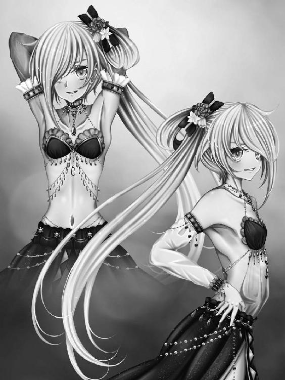
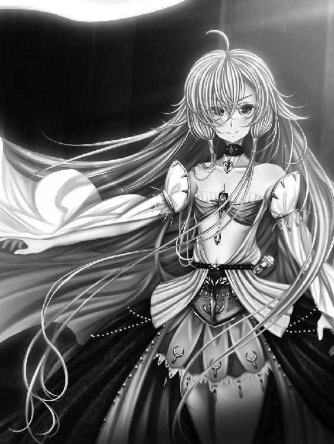
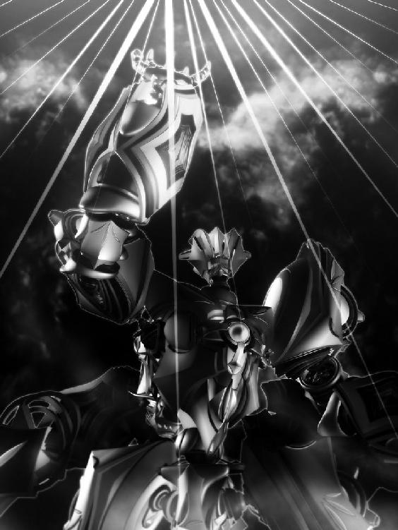

| 黄昏の君 ヴォルフィーネ・下 | |
| ときてっと | |
| ほんとうの物語シリーズ (2017) | |
黄昏の君 ヴォルフィーネ・下

第二部～王女と女神と闇の竜～後編
「ああ、ああ......あぁぁぁぁぁぁぁっ!!」
絶叫と共に、ヴィルヘムは束の間、体の感覚が戻っている事に気づく。
頭を掻き毟り、胃の中の物を吐き出して喘ぎながら、思い出す。自分の中の魔物がした事を。
フォルストーを、エレシーを、真昼の民を銀昌石に変え、エルデイルをこの手に掛けた。
そして、最愛のフィモシーまでもを......！
「うわぁぁぁぁぁぁあああああっ!!」
その凄惨な光景。悍ましい行いの数々。ヴィルヘムは瞼を閉じる事も出来ずに、それをただ見ている事しか出来なかったのだ。
まるで極寒の地に放り込まれた獣の様に体を痙攣させ、足を引きずりながら、ヴィルヘムは歩き出す。虚ろな顔。生気の無い瞳。まるで亡霊の様にひたひたと。
「誰か......誰かいないのか！ 生きて......生きているものは!!」
絞り出す様な血の混じった声が虚しく城内に響き渡り、世に絶望が満ちていた。
「おおい、誰か！」
何処からか獣の遠吠えが聞こえた様な気がして、男は鉄格子を握り、目一杯体を張り付け叫ぶ。
誰も来やしない。もう食事も水もとうに尽きているってのに！
何で俺がこんな目に......もう何度ついたか判らぬ悪態。
それもこれも、真昼の王女が悪いのだ。
あの日、あんな場所で、祝福の詩など詠うから......！
ザイレンは真昼の国の光芒届く果ての田舎街に生まれた。代り映えのしない退屈な毎日。娯楽と言えば酒か女を買うくらいで、周りの連中は馬鹿ばかり。
そんな日々に嫌気がさしてある時ザイレンは街を飛び出し、商人の船に無理を言って乗せてもらい、真昼の国へとやって来たのだ。
ようやく辿り着いた憧れの国。あんなしみったれた田舎街では無く、女神の祝福を受けたこの大国こそ、自分の居場所に相応しい。
しかし高揚は長く続かなかった。ふらりと立ち寄った酒場で上手い儲け話があると乗せられて、挙句に金を全て巻き上げられたザイレンは、怒りと失意と情けなさとで悪態をつきながら真昼の城を眺めていたのである。そうして、あの詩を聞いた。
それは美しくも愛らしい真昼の王女が、今まさに幸せの絶頂に居る若い男女に祝福の言葉を授ける場面。
忘れもしない、あの光の詩......。
太陽が見守る輝ける日々のなかで、この出会いはほんとうのもの
二つの音色はとけあい響き、やがて新たな歌を生む
欠片と欠片、ひとつなぎ 果てなき道をゆく者よ
幸福も痛みも共に越え、未来が陽の中にあらん事を......
そこには正しく、光があった。内なる光を発する輝ける地上の太陽。真昼の王女フィモシーのあの笑顔。傍に立つ太陽王フォルストーの優し気な眼差し。
ザイレンは裏切られた気がした。全ての幸福に。残酷な現実に。
この世には持てる者と持たざる者が居る。内から輝ける者とそうで無い者が居る。
ザイレンは後者だった。何も持たず。持っていたものも奪われた。
むしゃくしゃしてその場に背を向け走り出すと、不意に真昼の女神の像が目に入る。
あれも良くなかった。何故街中のあんな場所に像が立っていたのか。何故人々の憩いの場であろうその場所に、その時ばかりは誰も居なかったのか。
馬鹿な事をしたとは思う。ザイレンは全てを投げ出したい気持ちのまま、怒りに任せて女神像の額に嵌っていた宝石にナイフをかけた。台座が欠けて、宝石が落ちる。あの時の高揚。これくらい貰っても良い。輝ける者達から、少しくらいの恩恵を自分も貰って良い筈だ！
宝石を金に換えようと立ち寄った店で、目利きの店主にその出所を見抜かれて、ザイレンはあっけ無くお縄となった。駆けつけた騎士達から逃げようと、また証拠隠滅を図ろうとして宝石を飲み込み抵抗したが、何の意味も無い。事もあろうに真昼の女神像に傷をつけ、宝石を盗み、また往生際悪くもそれを隠そうとした事は当然の如く罪とされ、真昼の城の地下牢に放り込まれてもう何日になるのやら......。
まさかこんな風に城に足を踏み入れる事になるだなんて......ザイレンは溜息を吐く。
それにしても、静かだ。いつもはもう少し何かの音が聞こえてくる筈なのに、全くの無音。どこからか吹き込む風の音が寒々しく響くばかり......。
もしかして本当に、俺を捕らえている事を忘れているんじゃ無いだろうな......？
在り得る話だ。真昼の女神に不敬を働き、城の地下牢に放り込まれる者などそうはいまい。
ザイレンの罪状を聞くや、見張りの騎士は鼻で笑い、まぁ尻の穴から宝石が出て来るまで大人しく反省する事だな......と言ったものだ。
「本当に本物の宝石だったのか？ もう消化されちまったっての！」
ぼやいたその時である。
ざり......ざり......足を引きずる様な音......。
ざり......ざり......おどろおどろしく、何かが迫る様な気配......。
「お、おい......誰か......」
居るのか。そう尋ねようとした時、思いがけず向こうから同じ問いが返って来る。
「誰か居るのか！ 誰か、誰かぁっ!!」
「お、おう......いるけどよ」
顔面蒼白の男だった。口から吐瀉物と唾液の混じったものを垂らしながら、目を見開き、ザイレンを見るや凄まじい形相で駆け寄って来る。
思わずひっと声を漏らして後退り、ザイレンは泣きそうな気持ちになった。
「勘弁しろよぉ～、ほんと......俺が何したっていうんだよ！ そんな大層な罪でも無いだろう!?」
「い、今......か、鍵を開ける......代わりに私の願いを......っ！」
「え、開けてくれんの？」
男は震える手で壁に掛けてあった鍵束を取るや、手間取りながら牢を開ける。その必死の形相ときたら、色男が台無しだ。そんな事を思いながら恐る恐るザイレンが這い出すと、男は喰らいつく様に迫って来て、またしても悲鳴をあげるザイレンである。
思いの外、冷静な声で。
「頼みがある......フィモシーを！ フィモシーを探して、頼む！ きっと生きているあの子を連れて、何処か遠くへ......誰にも手が届かない安全な場所に......ぐぅっ」
急に苦しみ出す男に、ザイレンは混乱しながらも尋ねている。
「フィモシーって、お姫様の事か？ なんだか良く判らないが......」
「う、う、うおおおおおっ!!」
「うわっ！」
男が体を折り、のた打ち回りながら石造りの壁にがんがんと頭をぶつけ、かと思うと静かになって、にいっと笑みを浮かべながら立ち上がる。
口元の汚れを拭って、微笑んで。さっきまでとはまるで別人の様な雰囲気。
狂人だった。
「貴方、名は？」
「は？ ......ザイレン、だが」
「貴方は素晴らしい方だ」
「え？」
さぁ、こちらへ。
急に不気味な程優雅な物腰になり、男が手招く。怯えながらその後に続くと、やって来たのは玉座の間......巨大な銀昌石の彫像が無秩序に飾られていて、ザイレンはその生々しさに今にも悲鳴を上げそうになる。
「貴方は、不当に虐げられていた......私には判る。本当は優秀な方なのに、周りがそうと認めてくれない。奥底に眠る力を活かす場が無く、窮屈な思いをされている......」
「な、何だよ......急に」
ザイレンは不気味なものを感じながらも、男の声の奇妙な魅力にいつしか聞き入っていた。
その通りだ。心の中で声がする。この男の言う事は実に正しい。ザイレンが日々感じていた不満や鬱屈そのものを言い当てている。
「あ、あんたは......一体......」
「我が名はヴィルヘム。先王フォルストーに変わってこの真昼の国の新たなる王となった......太陽王ヴィルヘム」
「太陽王......」
呟き、はっとして気づく。
そうしてザイレンは後退った......ヴィルヘムが今撫でているその彫像。
銀昌石で出来たそれが、あの日見た太陽王フォルストーと瓜二つな事に......。
「ひ、ひぃっ！」
「お待ちなさい」
逃げ出そうとするザイレンの手を、ヴィルヘムが掴み。
その顔に浮かぶ笑顔の、なんと深く、底知れぬ事......。
「どうか怯えないで。私はただ、貴方に機会を与えたいのです。貴方の様な優秀なお方が真に輝ける場を設けたい。貴方に船を与えましょう。貴方の言う事を何でも聞く兵を与えましょう。そしてこれを差し上げる......」
そうしてヴィルヘムは拳を握った。その指の隙間から、じりじりと焦げる様な匂いと共に、揺らめく闇が立ち上り......それが開かれた時、現れたのは金の輝き。
ザイレンはその美しさに釘付けになる。一瞬で心を奪われている......。
「これは竜のしるべと言う宝物......このしるべの指す光を辿るのです。その先には、真昼の宝具、竜の瞳の存在がある。それを持つ真昼の王女、フィモシーがきっと居る......貴方はフィモシーを追うのです。何処とも知れぬ場所に飛ばされた王女を見つけ出し、そして......」
「そして......？」
くつくつと、王が笑った。
「犯すも良し！ 嬲るも良し！ 貴方の好きにするが良い！ 最後は殺してしまいなさい......それを果たした時、貴方に褒美を与えましょう！ 金銀財宝、美しい女達、それでも足りなければ街一つ与えてやっても良い！ さぁ、行きなさい......貴方のほんとうの人生が始まるのです！」
気づくとザイレンは走っていた。
真昼の城を抜け、昏い空の下を。
どこか遠くからやかましい笑いが聞こえてくると思ったら、それは自分の声だった。
「なんて軽薄で愚かな男だ。ヴィルヘム......貴方も呆れている事でしょう。誓って言うが私はあの男になんの力も使っていない。ただ言葉で唆しただけ。彼は王女を殺しに行くのでしょうか？ そうだとしたら実に情けない男だ......この世の至上の宝であるフィモシーを、財宝や女、下らない欲望と引き換えに殺めに行くだなんて......私には信じられないなあ」
おどけて言って、ヴィルヘムの内なる闇はくつくつと笑い、それから忌々し気に......震え出す指を見る。
まだ自分の物にならない。まだ抵抗する！ ヴィルヘムはむしろ感動を覚えた。なんと気高い魂......王女への深き愛......。
「貴方の愛に免じて、一つ救いを与えましょう」
ヴィルヘムは言って、彫像となったエレシーの前に歩み寄り、そのすべらかな表面をそっと撫でる。
するとどうした事だろう。銀昌石がまるで氷の様に溶け出して、その下から生身の......生きた肌が現れたでは無いか。
銀昌石の滴が煌きとなって蒸発し、解放されたエレシーが口元を押さえて嘔吐く。震える瞼がそっと持ち上がり、微笑みを浮かべ見下ろすヴィルヘムを捉えて強張った。
「ヴィルヘム......！ ああ、こんな......ああ......」
エレシーは床を這う様にしてフォルストーの足元に辿り着くと、彫像と化した夫を見上げ、覚束無い足でもどかし気に立ち上がる。そうして縋りついて、ぽろぽろと涙を零した。
「フォルストー様......フォルストー様......っ、ヴィルヘム、どうしてこんな事を......？」
エレシーの視線を正面から受け止めて、ヴィルヘムは意外な風に眉を顰めた。
それからそこで彫像と化している騎士の落としたものだろうか......床に落ちていた剣を拾い上げて、その刃の輝きを手の上で確かめる......。
「貴女はお優しい方だ。こんな時でも、私の事を怒りと憎しみで睨みもしない。ただ悲しそうに、不思議そうに見つめるばかり......そんな貴女を手に掛けたとなれば、いよいよヴィルヘムも屈するでしょう。我が闇の前に、傀儡と化す」
「何を言ってるの......判らない、判らないわ......ヴィルヘム！」
「貴女を殺すと言っている」
ヴィルヘムの手にした剣。その切っ先が、エレシーの胸にそっと触れた。
柔らかく窪む肌の弾力。エレシーは目を見開いてそれを見つめ、それから深く息を吐いて、ヴィルヘムを見て......。
ヴィルヘムの顔が苦痛に歪んだのは、その時である。
「奥様......エレシー様っ！ お逃げください......どうか、どうか......っ!!」
「......ヴィルヘム？ どうしたの？ ヴィルヘム......？」
「私は、私では無い！ 私の内に巣食う闇が今、貴女を殺めようとしているのです！ お逃げください！ フィモシーと共に、何処か遠くで......全てを忘れ、幸せに暮らして......」
どうか、どうか......ヴィルヘムの慟哭の言葉に、エレシーは震えながら、胸に置かれた刃を、そっと握る。
「貴方が、それで楽になるのなら......おやりなさい、ヴィルヘム」
「エレシー様！」
「でも、聞いて？ 貴方は私を優しいと言ったけれど、それは違うの。私は......本当は貴方の事を、疎ましく思っていた......貴方のお母様がまだ、フォルストー様の想い出の中にいらっしゃると気づいていたから。それが嫌だった。フォルストー様は私だけのお方なのに。悔しくて、嫉妬していたの......でも、貴方はフィモシーを助けてくれた。真昼の国が闇に飲まれようと言う時、貴方はフィモシーを導いて、この国を救ってくれた......」
「違う！ 違う、違う、違う！ 違うんだ......私は！」
「聞いて、ヴィルヘム！ 私はあの後、貴方を受け入れたつもりだった！ でも、心の何処かにまだ何かのしこりがあった！ フォルストー様から、昔の物語を聞いたわ......貴方のお母様のお話を......今なら、本当に、貴方の事を......だからね、ヴィルヘム」
ぽろぽろと涙を零しながら、エレシーは笑う。
「私は貴方のお母様の代わりにはなれないけれど、でも同じ気持ちでいる......貴方はフォルストー様の子だもの。光のもと、祝福されて生まれて来た子だもの。貴方が楽になるのなら、おやりなさい。けれど私は信じている。貴方がそんな人で無い事を。誰かを傷つけて平気でいられるような人で無い事を。貴方の上に、真昼の女神様......エルデイル様の祝福がありますように......」
獣の様な声が響いた。
喉を引き裂かれた様な、激しい慟哭。
からんと乾いた音を立てて、剣が落ちる。刃の輝きを汚すものは、何もない。
「なんなのだ、貴様らはっ！」
怒りの形相で、ヴィルヘムは叫んだ。ヴィルヘムの中に潜む、闇の力が。
「愛か！ 絆か！ そんなものを......この私に見せつけるなぁっ!!」
「ヴィルヘム......っ」
「ええい、うるさい！ ああ、興をそがれた」
荒く息をつき、ヴィルヘムは頭を振る。
どっと噴き出した汗を拭い、それから不意に興味を失くした様にエレシーから視線を逸らした。
溜息を吐いて。
「貴女には母になって貰おう。それも良い。ヴィルヘム、馬鹿な男......これから起こる事を見て、苦しみぬいて死ぬが良い」
そうして一転、笑顔を浮かべ。
部屋の片隅で丸くなっていた布の塊に近づくと、それを一気に引き剥がす。
その下から現れたものを見て、エレシーは悲鳴を飲み込んでいた。
ぐったりと曲がる、それは少女の死体。
「さぁ、お目覚めの時間だ......お姫様。そろそろ本当に死んでしまう」
ヴィルヘムは亡骸めいた少女をそっと抱き上げ、その髪を優しく撫でる。
そうして少女の胸の上で手を握り、次に開かれた時......ヴィルヘムのその指には、淡く輝く不思議な光が握られていた。
エレシーはその光を見て、不意にフィモシーの事を思い出している。
フィモシー、私の大事な宝物......あの子は今、何処に......？
「さぁ、起きなさいメルルーシェ。目覚めたら貴女は......お姫様だ」
少女の胸に、光が吸い込まれてゆく......。
その瞼が、弱々しく開かれて。

「お、に、い、さ、ま......？」
唇から漏れる、囁く様な声。
次にはその表情に笑顔が浮かび。
「お兄様......お兄様ぁ......」
甘える様に囁く少女を、ヴィルヘムが甲斐甲斐しく立たせてやる。
乱れた髪に指で櫛を入れてやり、むき出しの胸元をそっと撫で、そんなヴィルヘムを見て甘える様に少女は小首を傾げ。
そして、エレシーを見つけると、この上ない笑みを浮かべ。
「お母様......」
その囁きにフィモシーの姿を重ね、エレシーは言葉を失っていた。
昏い闇の中に一人、ぼんやりと......フィモシーは立ち尽くしている。
ふと周囲に光が差して、見知った人の顔が見えた。
フォルストー、エレシー、リルレーナ......銀昌石の彫像となって動かなくなった者達......。
ああ、やっぱりお迎えがきたの......？
暗く、昏く、冥く......闇の中で、何処からか、音が聞こえてくる......。
楽器の音。それに合わせた歌声。ああ、宴だ。月の国のお祭りだ。目まぐるしく過ぎてゆく想い出の景色。みんなたのしそう。フィモシーは力なく笑う。
人混みの中に、兄の姿を見た。
大好きなにい様......ヴィルヘムにい様......私だけのにい様......呟いてみるけれど、ただ虚しくなるだけだった。
祭りの喧騒はどんどん大きく、騒がしくなる。
ああ、うるさい。少し静かにしてくれたら良いのに。
うるさい、うるさい、うるさい。
もう、私は眠りたいの。もう、生きていたくないの。理由なんてないの。死にたいの。
いっそ誰かが、にい様が私を殺してくれたら良い......。
そんな気持ちに反して、フィモシーはゆっくりと目を開ける。
誰かがこちらを覗き込んでいるのが見える。
同じ顔が二つ。
おかしいな。自分は未だ夢の中に居るのだろうか。それともここがあの世なの？
「ああ、起きた。父さん、こいつ生きてるよ～」
「ほら、あんた。気を確かに持ちなさいよ。こら、寝るなってば。本当に死んじゃうよ？」
「......、」
同じ顔をした二人の少女に腕を引かれ、フィモシーは緩慢な動作で起き上がる。
夢の中で聞いた楽器の音は、まだ遠く聞こえていて、それと一緒にがたごとと車が走る音......見渡せば、そこは旅馬車の中の様だ。ぎゅうぎゅうに押し込まれた荷物。煌びやかな布があり、古びた楽器があり、生活に必要な道具がそこかしこに積んである。フィモシーが寝ていたのはその隅っこ。窮屈で、綺麗とは言い難い、みすぼらしい寝床。
「私はファレナ。こっちは双子のファウナ。ファレナが姉で、ファウナが妹」
「馬鹿、逆よ。ファウナが姉で、ファレナが妹！」
「違うってば、新入りに変な事教えないでよね」
「あんたこそ」
同じ顔をした少女はきゃらきゃらと笑う。フィモシーはぼんやりとそれを見つめ、ああ、本当に二人いる。双子なんだ、と無感動に思った。
それから、急に苦しくなって咳き込んでいる。口の中が苦く、じゃりじゃりと不快な砂の感触がした。
「ほら、水飲みな。感謝しなさいよ、あたし達があんたを見つけて、拾ってやったんだから」
「そうだよ。あんたは私達の物になったの。ほら、飲みなって」
「......みず？」
いらない。
フィモシーは首を振る。
姉妹達は顔を見合わせて、それから同じ様に眉を吊り上げて見せる。
「ほら、飲めってば。死にたいの？」
「死んじゃうよ。あんたの体カラカラだもん。生き物は水が無いと生きてけないんだから」
「......死にた」
ぴしゃりと叩かれて、フィモシーの言葉は途切れる。
驚いて見れば、ファレナとファウナはフィモシーに水の入ったコップを押し付けて。
「飲めって言ってんでしょ、めんどくさい。あんたは私達が拾ったの。あんたは私達のものになったの」
「命令してんの。早く飲めって！」
無理やり口に押し付けられて、仕方なくフィモシーはその水を喉の奥に押し流す。
臭い......こんな汚い水、飲んだ事ない......フィモシーの目に涙が浮かんだ。
乾いた胸が潤う様に、感情が息を吹き返す。
「こんな、水......なのに、なんで美味しいの......なんで、なんで......っ!!」
声を上げて泣き出すフィモシーの頭を、ファレナとファウナが一度ずつ叩く。その後二人してぎゅっと抱き寄せて、フィモシーは双子の胸の中で暫く泣いた。
フィモシーを拾ったのは街から街へ流れては歌う旅芸人の一座、マルフォン一家の馬車だった。
ファレナとファウナは踊り子の姉妹。マルフォン一家の名物双子。
その日は砂漠に寂しげに生えた木々の近くが寝床となり、焚火を中心に何台も連なる馬車からくたびれた様子で降りた旅芸人達がぐるりと輪になって夕食を取った。
フィモシーも貧相なスープと硬いパンを分けてもらい、ファレナとファウナに挟まれて心細くそれらを飲み込む。そう言えば、と胸元を見やれば、兄の手で内臓を凌辱された後は見当たらなかった。あれは、夢？ 本当の事？ 食事が終わると各々の時間。ある者は歌を歌いだし、ある者は楽器の練習、ある者は踊りを、ある者は曲芸を......そんな中、フィモシーは双子に連れられ、ある男の前に連れてこられた。
整った顔立ちは旅の中で研ぎ澄まされたかのように鋭く、しかし浮かんだ表情は何処か道化の様でもあり、フィモシーは一目でその人がこの旅芸人一座を率いるマルフォンその人である事に気づいている。
「ほら、父さん。こいつ拾った子！」
「どうかな？ 可愛くない？？ 可愛いよね！」
「うむ。まぁ生きていた様で何より」
にっと笑って見せるマルフォンに、フィモシーは一瞬言葉に詰まり、それから不意に湧いてきた活力を絞り、声にする。
「助けていただいて感謝いたします。私は真昼の王女、フィモシー・ソエル・エルオフィーラ」
フィモシーが名乗ると、それまで騒がしかった周囲がしんと静まり返る。
一瞬の静寂の後、どっと沸く旅芸人達の輪。
フィモシーは戸惑いながら辺りを見回し、胸がきゅっと締め付けられるような思いで言葉を続けようとして、声を震わせた。
「わた、わたし......わたしは......」
「あーあ、こいつ頭イっちゃってるよ」
「可哀想に、現実と妄想が混じって判らなくなってるのね」
ファレナとファウナの目に浮かぶ、憐れみの色。
フィモシーはうっと口元を押さえる。さっき食べた粗末な食事がもう少しで逆流してきそうだった。ぽん、と肩を叩かれて、見やればマルフォンの穏やかな目......。
「フィモシー、か。王女と同じ、良い名だ。しかしな、宝石の国ならともかく、真昼の国はちと遠すぎる」
「宝石の、国......真昼の国が、遠、い？」
「だろ？ 真昼の国といやぁ、この名も無き砂漠を超えたずっとずっと先だ。月の国より遠いだろうな。俺は行った事は無いが......」
フィモシーはもう少しでその場にへたり込むところだった。
名も無き砂漠......何処の国の土地でも無い、砂の海。
宝石の国と言えば、真昼の国からずっとずっと離れた異国。名も無き砂漠を超えるには腕の良い船乗りでも数か月はかかると言われ、命知らずの冒険家か、特別な航路を知る商人でも無ければ無理に越えようだなどと思わないだろう。
旅芸人達の笑いを理解して、フィモシーは俯く。
嘲笑だった。
「ほら、泣いてんじゃん！ あんたたち、いい加減にしてよ！」
「フィモシーはあたしらのもんなの。例えキチガイでも、虐めていいのはあたしらだけ！」
「しかしなぁ、ファレナとファウナ。真昼の王女といやあ、世界に昼と夜とを取り戻したと言うお方だぜ」
「こんな所に落ちてないって」
そうだ、そうだ。囃し立てる声。しかしフィモシーははっとして、顔を上げると懐を探る。
あった。
あった！
竜の瞳が、そこに。
「何それ、ガラス玉？」
「そんなの売れないって」
「こ、これは......これは、竜の瞳。真昼の国の宝物！ 召喚して見せます！ 黄昏の君を、ヴォルフィーネを、私が王女である証として......っ!!」
「ほう......」
マルフォンが面白そうだとばかりに目を細め。
フィモシーは竜の瞳を握り、息を吸い込む。
何か、嫌な予感がした。
「遥か彼方から、招かれしもの。時を超え、距離を超え、此処にきたる。舞い降りし、大いなる翼......」
おかしい。
「その声は久遠に響き、世を包む。気高き竜、白銀の君。嘆きの果てに、音を知る」
響かない。全然。
「救世の騎士、黄昏の君。その剣は闇を断ち、その翼は天舞う音色......鳴り響け、久遠に届け、我がもとで」
こんな乾いた。こんな声。こんな歌......違う。
違う。違う。違う！
「フィモシー・ソエル・エルオフィーラの名の元に招かん！ 闇を断ち、天舞う音色！ 汝、救世の騎士......ヴォル、フィー......ネ......」
静けさがフィモシーに伸し掛かった。
何も、起こらない。
竜の瞳が輝く事も、熱を発する事も無く。
黄昏の君が、現れる事もまた......。
「......ヴォルフィーネ......ヴォルフィーネ！ ヴォルフィーネ!!」
叫ぶ。喉が潰れそうなくらい。
出てきて。ヴォルフィーネ。
出てきて、その大いなる翼で私をここから救い出して!!
「フィモシー、なんです。私、フィモシー・ソエル・エルオフィーラ！ 真昼の王女っ！ なのに、なんで、なんでなの......っ」
「もう良い、判った」
マルフォンがフィモシーの肩を叩く。気の毒そうな顔で、見下ろして。
「帰してください！ 私を！ 真昼の国まで連れていってください！ 何でもします！ 帰してくれたらなんでもします!! お金も、宝石も、宝物も......銀昌石も鎧も剣も何でもあげます！ お城に帰れたら！ お城に帰る事が出来たら望みを何でも叶えます！ この私が、真昼の王女フィモシーがエルデイル様に誓います！ だから、だか、だか......おねがい......おねがいしますっ!!」
懇願は、ただ虚しく散るばかり。
ちりちりと焚火の爆ぜる音がして、それで皆が黙り込んでいる事に気づいた。
フィモシーに向けられる、憐れみの視線。
これまで知らなかった、その屈辱、その恥ずかしさの痛み......惨めさ。
「俺達はもう暫くしたら、メルデの街に向かう。近く行われる収穫祭に招かれているんだ。そこで芸を披露する。客を喜ばせる。それが俺達の仕事だ」
「......ぁ、ぁぁ......、」
「その街にはデルボスって豪商が館を構えている。判るか？ すげー金持ちだ。加えて気前も良い。奴は商人で、真昼の国の近くの街とも取引している。そいつに上手く取り入れば......あるいは」
「か、帰れるんですか？」
「保証は無い。まぁメルデの街までは連れていってやる」
フィモシーは息が詰まる様な気持ちで、深く深く頭を下げていた。
何度も、何度も、涙を流しながら何度も。
「ありがとうございます！ ありがとうございます！ ありがとうございます！ ありがとう......ありがとうございます!!」
「しかし、条件があるぞ。連れていくからには、メルデの街まではお前も俺達一家の一員だ。なぁに、こいつらも元はその辺のごろつき共。頭のネジがどうにかなってる奴も沢山いる。大事なのは、芸が出来る事......客を楽しませる事が出来りゃ、問題ない」
ひでぇー。お前の事だぞ。いいや、お前の方さ。そんな声があちこちから上がる。そうするとまた賑やかな騒ぎが戻って来て、フィモシーはかえって孤独を感じるのだった。
それからマルフォンはフィモシーの頬を指で挟み、角度を変えてしげしげと眺める。
「ほう、なかなか整った顔立ちをしている。身体つきも......貧相だがまぁ良いだろう。まぁお姫様と言うには今一つ輝きが足りないがな。ファレナ、ファウナ。フィモシーに踊りを教えてやれ。それとさっきの詩は良い。音楽に合わせて歌えるようにしておく事」
「はーい、父さん！ それよりさ。ねぇ、フィモシー。さっきの球見せてよ。へぇ、これ宝石？」
「そんなワケ無いじゃん。馬鹿なファレナ。こっちの短刀は？ うわ、凄い豪華。でもこれもきっと硝子玉ね。だってこんな宝石全部本物だったら、それこそお姫様の持ち物だわ」
「じゃあねー、こっちは！」
ファレナの手がフィモシーの服の下に伸び、何かを掴む。
身を捩って逃げれば、ファレナの手に握られているのは銀昌石の飾りもの......父と兄とお揃いの、フィモシーの大事な、王女の証......。
「か、返してっ!!」
フィモシーはファレナの手からそれを取り返すと、隠す様に両手で包み、地べたに丸くなる。はっとして腰から宝石の短刀を抜き取って、それから竜の瞳も一緒にお腹の下に隠し、ぶるぶると震えながら叫ぶのだった。
「これは！ こ、これは、私の宝物なの！ これが無いと、私が私だって証明できない！ 私が王女だって証明できない!! 私の、私の......私のなの!!」
叫ぶフィモシーに、もう誰も注意を払わない。皆それぞれの騒ぎに夢中で、見向きもしない。
「あー、はい判った。もう取らないってば。あんたがどっから来たかなんてのも、どうでも良いしさ」
「どうせ気が違って捨てられちゃったんでしょ。酷い事するね。ほら、起きなよ。あんたとその宝物達はひと組で扱うからさ。ね？」
なんでこんな事になってしまったんだろう。
何がいけなかったんだろう。
あんなに幸せだったはずなのに。
それとも全てフィモシーの妄想だったのか。あれらの幸福な思い出は幻に過ぎず、気が狂ったフィモシーの逃避だったのか......。
「うぐっ......う、ううぅぅぅ......」
フィモシーは惨めで惨めで堪らなくなり、絞り出す様な声で泣く。
ファレナとファウナが溜息を吐いて、何か言葉をかけてくれながら背中を撫でてくれたけれど、顔を上げる事が出来なかった。
マルフォン一家は荷運びも仕事としている様で、砂漠の小さな街に立ち寄っては荷物を受け取り、手紙を届け、代わりに水や食料を分けてもらった。
決して上等とは言えない馬車での旅。がたごとと終始揺れるその乗り心地は最悪で、はじめフィモシーは酔って何度も食べた物を戻していたが、暫くすると不思議と慣れて、今では景色を楽しむ余裕もできた。
楽しむと言っても、見えるのは砂漠の砂ばかり......そよ風のエリューナから見た砂漠の景色はあんなに輝いて見えたのに、フィモシーは色の違うこの砂漠が真昼の国や月の国と地続きの世界だとは信じられず、ふとするとやはりあれは夢の出来事だったのでは......との妄想に取りつかれ、その度首を振って正気を取り戻すのである。
ファレナとファウナは意外にも親切に根気強く、フィモシーに踊りを教えてくれた。

手の動き、腰使い、浮かべる表情の作り方。
それはどれも扇情的で、初めフィモシーは戸惑ったが、これもすぐに慣れた。
暫く慣れなかったのは品の無い踊りの衣装の方。入浴から着替えのお世話、沢山の侍女を前に裸になる事には慣れている筈なのに、露出の多いその格好で踊っていると不意に顔から火が出るほどの恥ずかしさを覚え、フィモシーは自分が自分で無くなった様な気持ちになった。
裸を見られて羞恥心を覚えるだなんて、なんだか、おかしい。なんだか、妙だ。
みんな取るに足らない人なのに。王女である私とは生まれも育ちも違うのに。
そんな事を思い、フィモシーは愕然とする。
自分の中に身分の違いで他の人を見下す気持ちがあったなんて。
フィモシーは以前の旅でヴィルヘムの前で裸になり、砂漠の泉で泳いだ事を思い出した。
あの時も自分は、一欠けらの恥ずかしさも感じなかった。
じゃあ、私はヴィルヘム様を見下していたの......？ それに気づいて、ヴィルヘム様は自分をこんな目に合わせたの......？
考えれば考える程、悲しみと嫌悪感とが募ってゆく。そんな負の感情を糧に、またそれを忘れ様と、フィモシーは踊りに夢中になった。男達の前で肌を見せる事に、次第に快感が芽生えてゆく。楽しい。踊る事は楽しい。靡く髪。弾ける汗の滴。音楽が体の底に響いて、体が熱くなる。歓声が上がればそれも良い。全力で踊りきった後、汗だくの自分の体から香る匂いに懐かしさを覚えれば、それはいつかの娼婦たちの甘い香りと似ているのだ。男を誘う、女の匂い......。
ある夜の事、フィモシーは酔った楽器持ちの男に声をかけられ、何か曲を弾いてやるから踊ってくれと岩場の影に連れ込まれた。
男はへらへらと笑いながらフィモシーを組み敷いて、何か良く無い事が起こると気づき、悲鳴を上げようとする小さなその口を乱暴に手で塞ぐ。
助けてくれたのはファレナとファウナの双子だった。
「あんたさ、勘弁してよね。自分の価値を下げる様な事しないでよ」
「ほんと、あんたの価値は私達の財産なんだから。判ってる？」
そう言ってファレナとファウナはフィモシーの事を殴りつけた。
なんだか良く判らないまま、ぼんやりと殴られて熱を持つ頬を手で押さえ、フィモシーは謝る。ごめんなさい。ごめんなさい。加減してくれたのか、頬は痣にもならず、痛みも眠る頃には消えていた。
半年も過ぎれば、フィモシーは立派な踊り子になっていた。ファレナ、ファウナと一緒に踊りながら、作り物の笑みで男達に愛想を振りまきながら、フィモシーは思う。
半年だ。
半年も経ってしまった。
いよいよ次に向かう街は、約束のメルデの街。間近に迫った収穫祭に間に合う様に、一家の馬車は砂漠を駆ける。メルデの街に近づくにつれて、フィモシーの心は不安と期待で満たされていった。
メルデの街は砂漠の泉を中心に栄える街であった。
名も無き砂漠にも泉があって、時折緑の木々が生え、見た事も無い生き物達が住んでいる......これも名前も伝わらぬ女神の恵みなのだろうか。フィモシーはぼんやりと考える。エルデイルはどうなっただろう。ディエナはどうしているだろう。私が目覚めさせたのに、こんな時助けてくれないなんて薄情な女神達......。
また嫌な事を考えていると気づいて、フィモシーは首を振る。やめよう。こんな考えは。今は踊りの事だけを考えよう。収穫祭が始まる。
宴を盛り上げるのが一家の役目だ。招かれた祭りの席で、フィモシーは夢中で踊った。舐めまわす様な男達の視線。酒に酔った声が降り注ぐ。楽しい。フィモシーは笑う。ファレナ、ファウナ、すっかり仲良くなった双子の姉妹。乱暴な言葉遣いだけれど二人はフィモシーを大事にしてくれた。マルフォン一家。そう、家族だ。自分は遠く離れたこの地で新たな家族を得た。踊りと音楽の一体感、湧き上がる喜びとがフィモシーの体を熱くする。
曲の終わり、フィモシーは汗だくのまま荒く息をして、水筒の水を呷る様に口に含んだ。
ぽん、と肩を叩かれる。見やればそこにはマルフォンが居て。
「見ろ、フィモシー。あそこで女を侍らせて立ってる男。あいつがデルボスだ」
デルボス。メルデの街に館を構える大金持ち。フィモシーは一気に高揚して、その人の元に駆け出そうとし、マルフォンに捕まる。
「まぁ落ち着け。お前は器量も良いし素直で良く働く娘だ。上手くすればそれなりの待遇は受けられるさ。焦らなくても、祭りが終わるまで待ちな。とにかくあいつの目につく様に、あいつを誘ってやれ」
「はい......はい！ 私、頑張る！ 頑張って踊って、あの人の目に留まる様にする！」
マルフォンは満足そうに頷いて去り、次の曲がかかり出した。
フィモシーは全身を使って踊る。デルボスがこちらを見た。もっと、もっと見て！ 彼の目をじっと見つめ、フィモシーはこの上ない笑みを浮かべる。
祭りは終わる。宴は冷めるように引いてゆく。人々の熱が過ぎ去った頃、マルフォン一家の宴はひっそりと始まった。
果実酒の樽を開け、乾杯をする。成功を祝って肩を抱き歌うもの。静かに語り合うもの。フィモシーはファレナとファウナに挟まれて、久しぶりに上機嫌でころころと笑った。
「ありがとう。ファレナ、ファウナ。貴女達のお陰で私、ここまで来る事が出来た。色々助けてもらっらし、しんせつにしてくれてほんとうに」
酒が回って来たのか、なんだか舌がもつれる様だ。フィモシーはふにゃふにゃと変な動きになりながら、双子の姉妹に頭を下げる。
「ふたりは、わたしの、ともらちだよ！」
「友達だってさ。馬鹿言ってんじゃないの。あんたは私らの持ち物」
「まぁ奴隷ってとこね。踊れて可愛い便利な奴隷」
「えへへ～」
ファレナとファウナが両方から、フィモシーの頬をぷにぷにと突いてくる。
ああ、幸せだ。幸せな気分だ。
胸の奥はすっかり暗いけれど、心はぽっかり隙間が空いたままだけれど、今日だけは良い気分だった。
ふと、双子の姉妹が重なって見える。二人が一人になり。一人が四人になり。四人が八人になり。もう数えきれない。
「ま、上手くやりなさい。あんた結構度胸あるから何とかなるって」
「あのデルボスって奴もキチガイ娘にあれだけ払うんだもん。気前良いって。もしかしたら本当に憧れの真昼の国に連れて行って貰えるかもね」
「へ？ らんのことぉ？」
「元気でね、フィモシー」
「どっかでまた会えたら、恩を返してちょうだいよ」
ぐわんぐわんと音がうねって響き、ぐるぐると回る視界が次第に暗くなってゆく。
そうしていつしかフィモシーは気を失っていた。
誰かが遠くで、歌っている。
旅芸人達の喧しい下品な歌じゃ無くて、もっと優し気な......子守歌みたいな。
そうしてフィモシーの頭をそっと撫でて、その暖かな温もりに、子猫みたいに丸くなり、ああ、と思った。
お母様の手だ。お母様が歌っている。優しい、暖かな、陽だまりの様な温もり。
フィモシーははっと目を覚ます。
「おはよう、可愛らしい貴女」
目を瞬かせて声がした方を見れば、それまでフィモシーを撫でてくれていたのだろう......手を小さく握った綺麗な女性が、ふんわりとした笑みを浮かべてこちらを覗き込んでいた。
何よりもまず、失望がある。あの夢の中の優しさが母の物では無かった事に。
起き上がると頭ががんがんと痛み、吐き気がした。
「酷い人たちね、薬で眠らせるだなんて」
薬......。
記憶の中で、眠る前に飲んだ果実酒の事が思い出される。
意識が醒めるのは早かった。フィモシーの事を案ずるような顔で何事か言いかけた女性に食らいつく様に、迫って。
「ファレナとファウナ、マルフォン一家の馬車は何処!?」
「行ってしまったわ」
「行って......？」
行って、しまった？
何処へ？
何処に？
家族が、あの人達が、私を置いて？
強張った表情で首を振り、信じられぬとの思いでフィモシーは女性を見つめ、視線で問う。
ああ、またこの目......。
憐れみの表情で、彼女は言った。
「貴女は売られたのよ」
売られた。
「売られた......私が......」
ファレナとファウナ。いつも口癖みたいに言っていた事。
あんたは私達の財産なんだから。自分の価値を下げる様な真似はするな。
あんたは、私達のもの。私達二人の物......。
「私は......」
友達だと思っていた。
乱暴で、少し意地悪で、でもフィモシーの事を大事にしてくれた双子の姉妹。
彼女達にとって、私は宝石と同じだったんだ。価値のある、拾いものの財産。だから宝石を換金する様に、フィモシーを売った。
ああ......私は売られたんだ。
そう小さく、声にならぬ声で呟いて、それから血の気が引く。
枕も毛布もぐしゃぐしゃに跳ね除けて、自分の姿を見た。
上等な肌着一枚着せられて、あとは何も身につけていないその姿。
フィモシーは取り乱す。地面を掘るみたいにベッドを掻き毟り、体中を引っかいて、叫んでいる。
「ない、ない、ないないないないないないないっ!! 竜の瞳も、宝石の短刀も、銀昌石の飾りものも......！ どこに、どこ、どこに？ な......ない......っ、あれが無いと私は！ 私は......!!」
「大事なものなの？」
慣れた様子で、女性が語り掛けてくる。
何でこの人は落ち着いているんだろう。だって、私の宝物が無くなってしまったのに。どこにも見つからないのに。どうしてこの人は。どうして、どうして！
「あ、た、わた......私の、宝物なんです......あれが無いと私は、私は！」
「そう......」
考えるそぶりをする女性に、フィモシーは縋りつく。
お願い。どこにあるのか知っているのなら。そう尋ねようとするが、口が上手く回らない。
果たして女性は、首を傾げて、微笑みさえ浮かべ。
「お忘れなさい」
フィモシーは力なくその場にへたり込み、か細く鳴いた。
「きっと貴女とは別に売られてしまったのね。ああ、可哀想な子......もう昔の事は忘れなさい。思い出しても辛くなるだけなのだから。私はシェーラ。貴女のお名前は......？ そろそろ貴女のお名前を教えてちょうだい......？」
フィモシーは口を噤み、小さく首を振る。
シェーラは根気強くフィモシーの返事を待っていたが、やがて何か察する様に頷いて。
「ここはデルボス様のお屋敷よ。デルボス様は本当に立派なお方。皆を平等に愛して下さる。だから貴女も安心して......」
デルボス。
その名を聞いた途端、フィモシーは目を見開いて再びシェーラに掴みかかっている。
「デルボス様......！ あ、会わせてください！ その人に！ そのお方に頼みが、お願い事があります!! わた、私......私は、フィモシー・ソエル・エルオフィーラ！ 真昼の王女！ フィモシーと言います!! デルボス様にお願いして、どうか船を！ 船を出して、真昼の国へ......！ 帰りたいんです！ 帰らなきゃいけないんです！ 帰らないと私、だって、半年も......半年も待ったんです！ 半年も！ は、半年、半年も!!」
「落ち着いて、フィモシー。皆が驚いているわ」
シェーラに諭されて、フィモシーはそうしてようやくその部屋に自分達以外の人間がいた事に気づく。
皆、フィモシーと同じ年頃の少女達ばかり......雰囲気は違えど、綺麗な顔立ちをして、一様に大きな瞳でこちらを見つめてくる......その瞳に浮かぶ、あの色。憐れみ、同情、フィモシーはもう少しで吐きそうになって、体を折って呻いている。
その中では一番年上だろう......シェーラが優しく背中を撫でてくれて、フィモシーは口の中に溢れる苦い唾液を無理をして飲み込んだ。
「デルボス様は今お出かけになっています。お帰りになったら、きっとお会いできるでしょう。貴女はデルボス様の娘になったのですからね......」
「それは、いつ......？」
「デルボス様のお仕事が終わったら......その時まで、しっかり体を休め、気持ちを落ち着けておきましょうね。フィモシー、もう大丈夫。此処に居れば何も怖い事は無いの。安心して、もう大丈夫......」
大丈夫。大丈夫。その言葉を繰り返して、赤子をあやす様に、シェーラはフィモシーの背中をぽんぽんと優しく叩く。
何の慰めにもならない。フィモシーは心の中でそう吐き捨てて、震える腕で自分の体を抱きしめていた。
あの汚い馬車の旅と比べれば、デルボスの館での暮らしは比べ物にならなかった。
一流の料理人の手による美味しい食事。もう臭い水だって飲まなくて良いし、いつだって体を綺麗に洗う事が出来る。服だって上等なものを着せて貰える！ 朝目覚める時、喧しい車輪の音も聞かなくて良い。屋敷には妖精みたいに綺麗な女の子達が沢山いて、皆仲良し。お昼を過ぎれば、広い庭。昏い空の下。それでもほんのりと出来る木漏れ日の下で、シェーラが本を読んで聞かせてくれる。
決まった日には先生が尋ねてきて、女の子達は皆教科書を広げて学ぶのだ。久方ぶりに触れる文字。書物から溢れる知識の泉。みすぼらしい格好で館にやって来たフィモシーが他に誰も解く事の出来ない数式をすらすらと解いて見せ、詩を詠み、また一通りの行儀作法をこなしてみせると、シェーラを初め少女達は皆驚いたものだ。
「フィモシー、貴女は本当に何処かのお屋敷のご令嬢だったのかしらね」
その言葉の裏に隠された同情に、フィモシーは俯く。
そうして潰れた声で尋ねるのだ。デルボスはいつ帰るのかと。
返って来るのは、いつも決まった返事ばかり......。
来る日も、来る日も、デルボスの帰りを待ち続け、そうして１１歳の誕生日を異国の館で迎えた事に気づいた時、フィモシーは日を数えるのをやめてしまった。
「私ね、本当の両親に虐められていたの。もう、殺されるかもしれない......そう思った時、デルボス様が救ってくださった。私を引き取って、本当の娘の様に愛して下さったの！」
館の少女達は皆一様に似た様な境遇を語る。彼女達はデルボスを神の様に慕っていて、その話を聞く度に、フィモシーの中でもその存在は膨らんでいった。
エルデイル様は、私の事を助けてもくれない。語り掛けてすらくれなくなった。ディエナ様だって、今頃シェイダ様と幸せに暮らして私の事なんか忘れているんだ。
それに比べれば、デルボスは正に神の様なお人。食事も、住む場所も、服だって与えてくれる。早く会いたい。デルボスに会えさえすれば、きっと願い事を聞き入れて貰える。いつしかデルボスはフィモシーの希望の光となっていた。
時折、マルフォン一家の事を考える。ファレナとファウナ、あの双子達......フィモシーの今の暮らしを知ったなら、きっと悔しがるに違いない。自分達が代わりに館の子になれば良かったって。二人は私の宝物をお金と交換したのかな。さぞ高く売れた事だろう。いいや、それは無いか。頭の悪い双子の姉妹。あの宝物の本当の価値なんて判らずに、安く買いたたかれたに違いないんだ。愚かな子。フィモシーはふふっと笑みを溢し、それからぎゅっと胸が痛くなって、堪えきれずに嘔吐していた。
私、いつからこんな嫌な子になってしまったの。
売られた。売られたんだ。私なんて宝石と一緒。宝石ならまだましで、石ころみたいなものなんだ。そんな考えがぐるぐると頭の中を廻る......。
ある日。昼とも夜ともつかぬ昏い空の下。フィモシーがシェーラの背中にくっついて、あるお喋りな兎の冒険のお話を読み聞かせて貰っていると、庭の向こうで歓声が上がった。
「デルボス様！ おかえりなさい、デルボス様！」
収穫祭の時に見た、あの男。デルボスが両手を広げて、少女達を迎える。帰って来た。
フィモシーはその人に駆け寄って、胸が詰まる思いで話しかける。
「はじめまして、デルボス様！ 私、フィモシーと言います。真昼の国のフィモシーです。お願い事が、お願い事があって、待ち侘びていました......デルボス様！」
デルボスは頷くと、シェーラに何か耳打ちをした。シェーラはフィモシーを見てにっこりと笑って。
その日、フィモシーが部屋で落ち着かずにそわそわしていると、シェーラの呼ぶ声がする。
「デルボス様が、今夜貴女をお召しになるそうですよ。フィモシー、喜んで？」
それからフィモシーはシェーラ達に浴場で念入りに体を手入れされると、綺麗なドレスを着せられて、デルボスの部屋に連れていかれた。
去っていくシェーラが手を振るのにこくりと頷き、少し心細く思いながらも、扉を潜る。
部屋の中には嗅いだことも無い不思議なかおりのする香が焚かれていて、フィモシーは何だかくらくらとしながらも、デルボスの前に立った。
「お座り、フィモシー。何か願い事があるんだったか......」
促されて、デルボスの隣。ベッドの上に腰を下ろす。
広い広い部屋なのに、大きなベッドがあるばかり。奇妙に思いながらもフィモシーは頷いて。
「私は、フィモシー・ソエル・エルオフィーラ。真昼の国の王女なのです......訳あってそれを証明出来る品を持ちませんが、国へ帰ればきっと判っていただけるはず。どうか私を、真昼の国にお連れください。お礼はします。なんでもします。宝物も、お金も、そう、なんだって......なんだってあげます！ だから、だから私を！ 半年も......ううん、もっともっと......もう１１になったんです！ これ以上待てないんです！ どうか私をお連れください！ 私を、私を......！」
必死で懇願するフィモシーをしげしげと眺め、デルボスは品定めする様に目を細める。
不意に体が浮く様な感覚があり、フィモシーはその場に倒れ伏していた。
「......ぇ？」
「おお、慣れぬ者にはきつかったか......どれ、具合を確かめよう」
デルボスは焚いていた香を消し、代わりに何かの入れ物を手に取る。
フィモシーを軽々と抱き上げてベッドに横たえると、その入れ物の蓋を開き、中身を指で掬い取った。
軟膏を指先の上で混ぜながら、デルボスは語る。
夢見心地で聞くフィモシー。
「昨今の真昼の国は、どうもきな臭い様子でな......次に船を出すとしても、いつになる事か......」
「......ぉ願いします、デルボス様......どうしても。どうしても行きたいの。真昼の国に帰りたいの。待ったんです。沢山沢山待ったんです。もう耐えられないんです。私のお願いを聞いてください。お優しいデルボス様。私の光......」
「舌を出してごらん」
言われるままに、フィモシーは口を開ける。デルボスの指が伸びてきて、フィモシーの口に無遠慮にも入り込んできた。
何をしているの。
尋ねようとするが、強引に顎を開かれてそれも出来ない。デルボスはフィモシーの舌を執拗に撫でて、軟膏を摩り込んでゆく。
香と軟膏の効果だろうか。体がじゅんと熱くなり、目に涙が浮かぶ。
「えうぼすさまぁ」
舌を撫でられながら、フィモシーは男の事を呼んだ。
間近で見る、その下卑た表情。履物を脱ぎ捨て、露わになるだらしない身体つき。フィモシーの舌をこねる指が次に頬の裏を撫で、歯の裏を撫で、満足そうに頷くデルボスを夢見心地で見つめながら、フィモシーは笑う。
口の中から引き抜かれる指。唾液がいやらしく糸を引いて。
「お前は本当に哀れな娘だ......可哀想な子......」
フィモシーの唾液のついた指をぺろりと舐めて、デルボスが語る。
「私はお前の様な娘が可哀想で堪らない。自分を王女だなどと思い込み、苛んで、そう言う子供を見ていると私は本当に辛くなるのだ。そういう子はね、フィモシー。沢山居る......皆ほんとうの自分は他に居ると思うのだ。自分は遠い国のお姫様だとか。高貴な一族の末裔であるとか。思い込みたくなる。それ程までに追い込まれているのだ、お前は。ああ、可哀想なフィモシー」
違う。
フィモシーは首を振る。
だって、私は真昼の国で生まれたんだ。
王女なんだ。
お姫様なんだ。
あの薄汚い双子達とは生まれも違う。館の少女達とは育ちも違う。
違う、違う、違う！
「だから私は......お前達の事を愛するのだ。本当の愛を与え、可愛がってやる。さあ、自分で足を開きなさい。私がお前に、愛を与えよう」
フィモシーは涙を零しながら、いやいやと首を振った。
これから何が行われるのか判って、ぞっとする。
おやめください。
この体は、真昼の国の未来を宿すためのもの。
おやめください。
おやめください。
声に出しているつもりが、掠れた空気が漏れるばかり。
慣れた手つきでドレスが脱がされて......。
体が熱くて、お腹が切ない。今にも気を失いそうになりながら、か細く鳴く。
「やぁ......」
「安心しろ、フィモシー。お前は私のものになった。此処に居れば、お前は幸せに暮らしていける」
「......いやぁ......」
「お前が望むのならそれなりの相手を探してやろう。ずっとこの館に居るのが退屈だと言うのなら、私がそう取り計らってやる。お前はもう何も心配しなくて良いのだぞ。だからさぁ、私の愛を受け入れるのだ......私をその体に受け入れるのだ......」
「......ぁ、、、」
ああ、お母様。
お母様の言葉が聞こえる。
フィモシー、私の可愛い娘......。
貴女もきっと、そう言う相手と出会う日が来る......。
フィモシー、愛しい子......。
貴女の上に、真昼の女神の祝福がありますように......。
私は、お前にはもっと自由に生きて欲しいと願う......。
生涯を共にする相手を、お前自身で選び出して欲しいと思うもの......。
ああ、これはお父様の言葉......。
「......はぁ......」
汚される。
そんな言葉が浮かぶ。
もう、頑張らなくても良いのかな......。
不意にそんな事を思った。
私の体を、この人の自由にさせたら......。
連れていってもらえる。帰る事が出来る。
懐かしい、あの、真昼の国へ......。
「......、、」
お母様。お父様。
フィモシーは１１になりました。
もう、１１になったんです。
お母様。お父様。
ごめんなさい。
どうか、許して......。
フィモシーは目を閉じて、そっと......足を開いてゆく。
内腿に、男の手が触れた。下品な喜びの声が聞こえて、フィモシーは覚悟する。
かっと目の前が明るく爆ぜて。
「何者だ!!」
痛みは、いつまでも来ない。
雷鳴が轟いた。フィモシーは首を捻り、そちらを見る。
硝子が割れて、窓辺に誰か立っている。
闇の中、雷を背負って立つ、その青年。
かっと眩い光がもう一度室内を照らし、フィモシーは見た。
美しい、雷を閉じ込めた宝石みたいな、その人の瞳を。
「ひ、ひぃっ!!」
閃光の様に駆けたその人が、いつの間に抜き放ったのか、デルボスの首筋に剣を突き付けて、鋭い声で囁いている。
「その娘、メルデの街で買った踊り子と見た。どうだ？」
「わ、私は金でこの娘を買った！ 確かに買った！ この娘は私のものだ！ 何の文句がある！」
「......何も」
「ええい、誰か！ だれっ......ひっ」
人を呼ぼうとするデルボスの首に、刃が食い込み血が滲んだ。
フィモシーはそれをじっと見る。その青年をじっと見つめる。
何て綺麗なお方だろう......薬のせいでふわふわと覚束無い心で、けれど確かに、その人を見る。
「その娘、俺が買おう。今俺が手にしている、お前の命と引き換えに」
「な、な、な......っ!!」
「ここで死ぬか、娘を俺に渡すか、二つに一つだ」
「......馬鹿なっ」
絞り出す様な声。
青年は溜息を吐いて、剣に手をかける。悲鳴が上がった。
「判った！ 連れて行くが良い！ だから剣を下ろせ、下ろしてくれぇっ」
男は無言で剣を引き、デルボスの体を投げ飛ばす。無様に床に転がるデルボスが情けない悲鳴を上げたが、フィモシーにはもう聞こえなかった。
青年が近づいてくる。立派な服には少し不釣り合いな旅用のマントを脱ぎ、それで裸のフィモシーを繊細な美術品を扱うみたいに包んでくれる。逞しい腕が、抱き上げてくれるのに、フィモシーは涙をぽろぽろと零しながら、囁いている。
「たすけてくれるの？」
「助けるのではない。この男の所有物であったお前が、俺の物になるだけだ」
フィモシーは小さく頷いた。
お名前は。
尋ねたいけれど、声が出ない。
フィモシー。
代わりにそう呟く。
私の名前。
フィモシー・ソエル・エルオフィーラ。
「フィモシー」
頷いて。
「ま、待て！ お前は何者なのだ！ 何故その娘を連れて行く!?」
振り返る青年。雷の光が映し出すその姿を見て、その腰の鞘に収まった剣を見て、デルボスは驚愕する。
「そ、その剣に刻まれた紋章は......ま、まさか貴方は......貴方様は......」
「ジュリオ。それ以外の名は無い」
呆然とするデルボスを置き去りにして、ジュリオは悠然と歩き出す。
何よりも頼もしい揺り籠の中で、フィモシーの意識はふっと途切れた。
「お母様、お母様ぁ」
屈託の無い笑顔、一辺の邪気も無い、純真なる微笑みを前に、エレシーは強張った頬でぎこちなく笑う。
その髪をそっと、撫でてやる。いつもの様に。そう、エレシーは殺される事も無く、銀昌石の彫像に戻される事も無く、生かされていた。
「さぁ、髪を梳いてあげましょうね......メルルーシェ」
ああ、この少女の身に一体何が起きたと言うのだろう。
メルルーシェ。フィモシーの純真なる心を移されたと言う哀れな子......。
一体どこの生まれで、何故ヴィルヘムと共に居るのか。この少女の心を壊す事にどんな意味があったのか。エレシーは何も判らぬまま、この少女の世話をしていた。
「......くすぐったいの？」
「お母様......」
だって、こんなにも幸せそうな顔で笑いかけてくれるこの子を、突き放す事なんてとても出来ない。
ころころと笑うメルルーシェの髪に櫛を通しながら、エレシーは目に涙を浮かべた。
フィモシー。可愛い可愛い私の娘......今、何処に居るの......？
メルルーシェに実の娘の姿を重ねながら、エレシーは小さく息をつく。
ふと、玉座で退屈そうに頬杖を付いているヴィルヘムと目が合って。
「......貴方は、ヴィルヘムでは無いのですね」
「では、誰だと？」
「......判らない。判らないけれど、そう思います......」
「ふふふ......ヴィルヘムですよ。私は、もう、ね......」
唇を噛み、首を振り、エレシーはメルルーシェが立つのを手伝ってやる。ころころと笑いながら少女は何処かへ駆けて行った。ああして一日中、笑っているのだ。何も判らぬまま、彫像達とお話しをして、笑っている。
エレシーは今にも崩れそうになる顔に無理やり笑みを浮かべて、ヴィルヘムに歩み寄り。
「......貴方の髪。綺麗な銀の髪も、梳かしてあげる」
「何のつもりです？」
「......、」
答えようとしたが、言葉にはならなかった。
エレシーはヴィルヘムの髪をそっと手に取り、優しく櫛を入れた。
艶やかな銀の髪は、間近で見ると銀と言うより透明な金色をして、そうして近くにある彼の瞳に目が行けば、それはフォルストーやフィモシーと良く似た太陽色をしているのだ。
今度は心から、くすりと笑い。
「羨ましい......貴方のその瞳が。フォルストー様と、フィモシーと同じ色。親子で、兄妹なのですね......」
「この髪は母譲りですがね」
はっとして、櫛を落とし、エレシーはヴィルヘムに縋りついている。
ぽろぽろと、涙がこぼれた。
「ヴィルヘム！ ああ、ヴィルヘム......そこに、そこに居るのね？ 辛いでしょう、苦しいでしょう、なんて......なんて残酷な......っ」
膝を付き、肩を震わせるエレシーの頭に、そっと温かいものがふれる。
顔を上げれば、ヴィルヘムの大きな手が、エレシーの頭を撫で......。
その顔に優し気な色が浮かんだのは一瞬の事。
立ち上がった彼は次には獰猛な獣を思わせる笑みを浮かべ......。
「不安が、混乱が世に満ち始めた......待つのはもう終わりにしよう......さぁ、目覚めるが良い、真昼の民よ！」
城内に反響するその声に、暗がりから姿なき何者かの呻き声が答える......。
ヴィルヘムはそうして、すぐ傍で彫像になっていた騎士に手を触れた。
エレシーは口元を押さえ悲鳴を上げている。
何か。
何か形の無い揺らめきがその彫像から立ち上り、悲鳴を上げながら流れてゆくのだ......。
あの像からも、あの像からも、次々にそれは生じて、漂ってゆく......。
遠くから、何か巨大なものが動き出す軋んだ音が聞こえて来た。
「今では伝説となった時代、我らが魔と呼んだもの。女神の言葉を借りれば、デュオンの力......渦巻け、魔よ！ 満ちよ、デュオン！ 我が兵となりて立ち塞がる者を蹴散らすが良い！」
「......デュオン......っ」
さっと血の気が引いて、体が強張り、もう少しでその場に伏せてしまいそうになりながら、エレシーはフォルストーの彫像に身を寄せる。
哄笑を上げながら歩いて行くヴィルヘムの背に手を伸ばし、声をかけようとするが、言葉にならず、ただ震えてその後姿を見つめる事しか出来なかった。
「浮き船より鎧奏騎二十騎に、重鎧奏騎が一。間違いありません、真昼の国の軍勢です！」
そよ風のエリューナを背に、砂漠に陣を構えていたシェイダの元へ、早馬に乗った騎士が今しがた目にしたものを報告する。
努めて冷静な顔で頷いて、シェイダは騎士達に合図を出すと、向こうに見える不吉な影に目を細めた。
それは砂漠の上に突如として現れた、黒い太陽。
真昼の国があった場所をすっぽりと覆うその半球は、何者の侵入も許さず、不気味に鳴動して聳えていた。
一体いつ生じたものか、それが出来た瞬間を見た者は一人もいない。
太陽が消えた事と言い、半球が真昼の国を覆った事と言い、何かが起こったのは間違い無かった。
何も判らぬまま時が過ぎ、膠着した事態は今になって動き出す。
半球から現れた巨人の軍勢。それを率いるのは紛れも無く真昼の国の象徴たる鎧。
ガスメイガス級重鎧奏騎、楽園のジルアース。
シェイダの纏うディムラの涙に匹敵する至高の一品。
「ディムラの涙で出る！ 碧翼の陣で俺に続け！」
動き出す月の国の鎧奏騎。ディムラの涙を前に、シェイダ直属の騎士達の纏う鎧が続く。
砂漠の砂を巻き上げて、迫る赤き軍勢。楽園のジルアースが剣を抜いた。動く。
「迎え撃て！」
一斉に剣を抜き放ち、月の軍勢が腰を落とす。交わる刃。そこかしこで火花が舞い、昏い空の下に一瞬の花が咲いた。
「何故だ、フォルストー！ これからは昼と夜の時代......俺達は手を取り合ってゆける！ そうでは無かったのか!?」
「ふふふ......」
鎧の下から聞こえた、その笑い声......シェイダは目を見開いて。
弾かれる剣、砂の上を滑りながら体制を入れ替え、次の一撃を高めに受ける。
「貴様は......っ」
「お久しぶりですね、月光王シェイダ」
「ヴィルヘム!?」
「否！ 我こそは正当なる真昼の王！ 太陽王ヴィルヘム！」
苛烈な一撃に視界が揺れる。楽園のジルアースが振るう剣がディムラの涙の装甲を削り、内部の温度が一気に上がった。鎧から噴き出す蒸気を目晦ましにしてシェイダは一気に距離を取る。風が吹いた。
「何故だ！ 何故お前が王を名乗る！ フォルストーはどうした......フィモシーは!?」
「闇の時代が始まる！ 太陽も月も無く、光の指さぬ暗黒の時代が！ 輝ける太陽は既にその贄となったのだ......！」
凄まじいその突風はまるで月の国の鎧奏騎を縫う様に吹き荒れ、見る見るうちに赤き真昼の軍勢を飲み込み、向こうへと押しやって行く。
吹き荒れる砂嵐に乗せて届く、ヴィルヘムの哄笑。そしてシェイダは見た。
風に飲まれ弾ける装甲の下......真昼の国の鎧奏騎の中には、誰の姿も無い。
「シェイダ様......信じられないかもしれないが......俺が相手をした鎧の下......誰も、誰も乗っていなかった......」
「俺も見た。鎧奏騎が無人で動くなど、到底考えられんが......」
撤退していく真昼の国の軍勢を呆然と眺めるシェイダ達の前に、空から淡い光が降りてくる。
それはディムラの涙の前で一人の美しい娘の姿となって、シェイダの事を案ずる様に囁くのだ。
「あなた様、あなた様......お怪我は......？」
「何もない。お前の風のお陰で助かった。感謝する、ディエナ」
「あなた様をお守りするのも、わたくしの務め。けれど月は太陽の光を受けて輝くもの......姉様の光が消えた今、わたくしには守りの風を起こすのが精一杯。どうか、ご無理はなさらずに......」
「ああ......今の戦いをどう見る、ディエナ」
持ち上がったディムラの涙の胸部装甲の下。シェイダは身を乗り出してディエナの手を取る。月の女神は僅かに眉を寄せて小さく首を振り、不安気な視線で砂漠の向こう......真昼の国を覆った黒い半球を見つめる。
「暗い、闇のデュオンを感じます。多くの民の苦し気な声を......まるで、滅びの再来......」
息を飲み、シェイダもまたディエナの視線を追いながら、ヴィルヘムの言葉を反芻する。
闇の時代が始まる。太陽も月も無く、光の指さぬ暗黒の時代が......。
「......フィモシー、お前は今、何処に居る......？」
その身を案ずる王の声に、誰も何も答えられず、ただ茫然と、迫りくる闇の気配に身を震わせるのだった。
夢を見ていた。あの日見た、夢の続きを......。
見渡す限りの荒廃した大地。くっきりと空を切り取る雲の塊。重なり合うその隙間から、光の柱が幾重にも落ちて、フィモシーは美しいその光景を、けれど無感動に眺めている。
生命を失った乾いた砂の上に腰を下ろし。ただぼんやりと時が過ぎるのを待つフィモシーの隣に、誰かが立った。
それはあの、黒髪の夢の君......。
あなたは、だれ。
尋ねれば、その人は柔らかく微笑み、そしていつかと同じ言葉を口にした。
「......覚えておくんだ。君の胸に宿る、ほんとうの力の事を。そしていつか思い出して。私はいつも君と共にある事を。君の内なるデュオンと共に......」
優しい風が吹く。黒髪の夢の君が、砂粒となって溶けてゆく。
瞬きをすれば、そこはいつか訪れた太陽神殿の間。
大きな大きな銀昌石の下、目の前には、鏡合わせの様にもう一人の自分が居て......。
「覚えておいて、貴女の胸に宿る、ほんとうの力の事を。そして、貴女が私になったなら思い出して。無垢なる太陽の輝きが、色さめた未来をも照らしてくれた事を......」
はっとして振り返る。荒廃した大地の名残がそこに映る。フィモシーは見た。その死せる大地に、命の兆しが芽吹くのを。
何処からか、声が聞こえる......。
貴女がほんとうに困った時、私はいつでも貴女のもとに駆けつける......貴女を守って見せる......きっと、この友情にかけて......。
「エルデイル様......」
光の中に微かに見える、優し気な眼差し。その微笑みが、闇の中に崩れて消える。
手を伸ばすが、届かない。
「エルデイル様！」
その叫びは夢の中のものか、それとも現実のものか......。
目覚めると、見知らぬ天井。窓から柔らかい陽射しが射し込んで、込み上げるものを無視できずフィモシーは僅かに首を傾けてそちらを見るが、空はやはりあの昏い色をして、太陽の輝きは何処にも見えない。
「ごめんなさい......エルデイル様。エルデイル様ごめんなさい......」
昏い空を見つめ続けるのが辛くて、フィモシーはぎゅっと目を瞑る。閉じられた瞼の隙間から涙が溢れだし、ベッドの上に水たまりを作った。
消えた太陽の示すもの。
エルデイルは、全ての力を振り絞ってフィモシーを逃がしてくれた。
それなのに自分は、あのお優しい女神様を酷く恨んで、その友情を裏切っていた。
「も......嫌だ......もう。こんな、私......こんな酷い子に......どうして、エルデイル様......私を......っ」
震えるフィモシーを慰める、あの優しい声はもう聞こえない。
それが意味する所を噛み締め、フィモシーは嗚咽を漏らしながら俯せになり、心の中でただただエルデイルに謝り続けた。
体中を満たす後悔と悲しみ。ふと、その暗い感情に何かが触れる。
はっとすれば、誰かの手が肩に触れていた。恐る恐る振り返ってみると、その人が居る。
「......ジュリオ、様......？」
「俺が、判るのか」
僅かに驚いた顔で青年......あの日、雷鳴と共に現れフィモシーを救い出してくれたジュリオは言って、フィモシーが横になるベッドの隣に、いつもそうしていたのだろうか......置いてあった椅子に腰を下ろす。
フィモシーの目を、宝石の様なその瞳がじっと見つめる......。
「もうひと月くらいになるだろうか。お前はずっと心を閉ざして、何かうわ言の様に呟くばかり......何を話しかけても返事をしない。心が何処か別の場所に居る様な、あるいは......壊れてしまったかのような......とても、心配した」
心配......？
フィモシーは伺う様にジュリオを上目遣いに見て、小首を傾げる。
この方は、どうして私を助けてくれたのだろう。どうして私を案じてくれるのだろう。
不思議に思って尋ねようとするが、何故か声を出す気にはなれず、ただフィモシーはジュリオの綺麗な澄んだ瞳を見つめて、その美しさに釘付けになる。
......と。
「......ぁ」
フィモシーはきゅうっと音を立てるお腹を押さえて、頬を赤らめた。
あんまり恥ずかしくて、情けなくて、フィモシーは俯いて目をぎゅっと瞑ると、傍にあった温もりが離れてゆく。
あ、と名残惜しく思って恐々目を開けば、立ち止まったジュリオの微笑み。
「今日は食事がまだだったな。すぐに、用意する」
「え、」
ジュリオが行ってしまうと、フィモシーは体を丸めて溜息を吐いた。
あんまり胸がどきどきして、その鼓動が体を震わせているのが判る。
程なくしてジュリオが戻って来ると、そのどきどきは更に高まり、フィモシーはもう青年の顔を見る事が出来なくなっていた。
「食べられるか？」
フィモシーの膝に乗せられた盆には、小さな皿に盛られたお粥。
このままではまたお腹が鳴って恥をかきそうなので、フィモシーは震える手でスプーンを拾い上げようとするが、指が上手く動かなくて何度も何度も失敗してしまう。
焦るほどに指は言う事を聞かなくなって、色々な感情がいっぱいになって遂に泣きそうになっていると、ジュリオはフィモシーの肩にそっと手を置き宥める様にしてから、スプーンを取り上げ、お粥をすくってふうふうと息をかけた。
それから、フィモシーの口元にそれを運び。
「熱いぞ、気を付けろ」
「......ぁ」
ジュリオの顔と、スプーンとを見比べる。
小首を傾げる青年は、何でもない様な顔をして。
まるで親から餌を貰う雛鳥になった気分で、フィモシーはスプーンに顔を寄せ、ぱくりと口に入れている。
「......おいしい」
塩で味付けされただけの素朴な味が、他のどんなご馳走よりも美味しく、優しく感じられ、フィモシーは涙ぐむ。
ジュリオがすくってくれるお粥を、フィモシーは夢中で食べた。
最後にコップ一杯の水を一気に飲み干して、フィモシーは笑う。
久方ぶりの、心からの笑み。
頬を伝う涙を、ジュリオが甲斐甲斐しく拭ってくれた。
「起きられるか？ それとも、もう少し休んだ方が良いだろうか」
「......起きます。あの、」
ありがとう。貴方は一体誰なの。此処は何処なの。どうして助けて下さったの。
そんな言葉が一気に口から溢れそうになるが、ジュリオはそれを制して、まずはフィモシーが起きるのを手伝ってくれる。
手を引かれて部屋を出ると、向こうからやって来る人がフィモシー達を見て驚いた様に目を見開き、慌てて近寄って来て笑みを浮かべた。
「ああ、お嬢様......気がつかれたのですね」
「心配いたしました。もう、夢の中から戻られぬのでは無いかと」
「デルパとサリー、ずっと俺の世話をしてくれている......この屋敷にはもう何人かいるが、使用人......いや、俺の家族の様なものだと思ってくれ」
ジュリオはまず初老の男性を、次にジュリオより少し年上に見える女性の方を見て、フィモシーに紹介してくれる。ぺこりと頭を下げ、名乗ろうとするが、不意にあの憐れみの視線が何処からか向けられている様な錯覚に陥り、言葉に詰まった。
「サリー、フィモシーを浴場に案内してくれ。ずっと眠っていて体も強張っているだろう。身を清め、清潔な服を用意してやって欲しい。頼む」
「はい、ジュリオ様。さぁ、お嬢様......こちらへ」
サリーが手招きをする。フィモシーはそちらへ歩もうとするが、急に体中の血がさっと冷たくなってゆく様な感覚を覚え、その場にしゃがみ込んでしまう。
あれ。
不思議に思えば、それは体内の暗がりから一度にフィモシーを飲み込んだ。
幻聴が聞こえた。耳元で囁かれる、シェーラの声......。
デルボス様が、今夜貴女をお召しになるそうですよ。
心臓が跳ねる。
フィモシー、喜んで。
これは幻。これは錯覚。首を振って何度もそう心の中で叫ぶが、声はどんどん大きくなるばかり。
「うっ」
口を押えるが、間に合わない。
さっき食べたお粥が体の中を逆流して、フィモシーはその場で嘔吐していた。
ぽろぽろと涙を零しながら、フィモシーは全身を震わせ、潰れた声で呟いている。
何度も、何度も。
「ごめんなさい......ごめんなさい......、ごめ......ごめん......ごめんなさいごめんなさいごめんなさい！」
慌てたデルパが雑巾を持って走って来て、サリーが何事か声をかけてくれているけれど、フィモシーは顔を上げられない。
雷鳴と共に現れた、美しい人。
貴方は私を、どうしたいの。貴方は私を、どうするの。
どうして私を助けてくれたの。何がしたいの。
判らない。怖かった。
「サリー、フィモシーを浴場へ。デルパは仕事に戻れ。此処は俺が片付ける」
「し、しかしジュリオ様......」
「良いんだ。フィモシー、何がお前を傷つけたのか判らないが、すまない。サリーは良く気が付く、優しい人だ。安心して頼って良い」
「......、」
フィモシーの吐瀉物を手が汚れるのも構わずに片付けながら、ジュリオは静かに頷いて見せる。
呆然としたまま、フィモシーはサリーに手を引かれ浴場へと連れてこられ、あっという間に服を脱がされると体を綺麗に洗われて、湯に入れられていた。
震えが止まり、ほっと息をつく。体だけで無く、心の淀みも溶けてゆく様だ。
「......あの、此処は何処なんですか。あのお方は、ジュリオ様はどうして私を助けてくれたの？ 私、どうなるんですか？」
「此処は宝石の国の古の森。元は名も伝わらぬ雷の女神の住まう天空の城が地上に落ちたものと言われる古い遺跡の中ですが、私達は単に屋敷と呼んでおります。私はサリー。デルパは私の父で、一族でずっとジュリオ様にお仕えしている身です。ジュリオ様が貴女をお救いになった理由は、きっと後ほど説明があるでしょう。今はゆっくりと心を落ち着かせ、体の調子を整える事をお考えください。さぁ、今何か冷たいお飲み物をお持ちしますからね」
サリーの優しい声を聞いていると、フィモシーは何だか泣きたくなってくる。
悲しみや恐怖の涙では無くて、安堵と切なさの涙。
不意に銀昌石の彫像となってゆくリルレーナの姿がサリーと重なって思い出され、胸がぎゅっと締め付けられる思いだった。
その悲しみに耐える様に、フィモシーはサリーの言葉を反芻する。
宝石の国の古の森。名も伝わらぬ雷の女神の天空の城。判らない......判らない事だらけだ。
いつしか体の震えはぴたりと収まり、今はただ、ジュリオの言葉への興味ばかりが膨らんでいた。
清潔な服に着替えさせてもらい、サリーに案内されてジュリオの元を訪れると、その青年は窓辺に立ち、静かな景色をじっと見つめ立っていた。
フィモシーに優しく微笑みかけて頷き、サリーが部屋を後にする。何か言わなくちゃ。何か......言葉を探して焦り、視線を彷徨わせたフィモシーは、机の上に並べられたそれを見つけ、信じられぬと言う思いで息を飲んでいた。
夢を見ている様な気持ちで一歩、また一歩と近づいて、震える手を伸ばせば、それは正しくエンリユイに貰った宝石の短刀に違いない。その隣には、竜の瞳と、銀昌石の飾りものも揃って置かれていた。
言葉を失くしてジュリオを見上げ、その瞳に視線で問いかければ、青年は頷いて。
「その短刀は、裏の競売にかけられているのを俺が見つけた。出所は何処かと聞けば、旅芸人の娘が売りに来たものだと言う。まだ近くに居たそいつらを探し出して、お前の事を知った。他の二つは念の為にと手に入れたものだが、大切なものだったか」
フィモシーは何度も何度も頷いて、大事な宝物達を胸に抱く。
それからはっとしてそれらの品を机に戻し、ジュリオの顔を見上げ、今にもしゃくりを上げそうになるのを堪えながら、尋ねている。
「こ、これは、私の持ち物でした。でも、私と離れ離れに売られてしまって......もう、戻ってこないものかと......あの、どうか、よろしければ......これらを私に、私に返して......その、お金は持っていないけれど、代わりになるものもないけれど、どうか......どうか私に......」
ジュリオは竜の瞳と銀昌石の飾りものを取り上げて、フィモシーの手にそっと握らせてくれる。信じられぬ思いで手の中の品とジュリオとを見比べていると、青年は次に宝石の短刀を手に取り、フィモシーの瞳をじっと見つめ。
「この短刀......踊り子や商人どもはその価値を見誤った様だが、俺には判る。これは紛れも無く、本物の品......一つ、聞かせて欲しい。フィモシー、お前はこれを何処で手に入れた......？」
「それは......、」
言葉に詰まり、フィモシーは喉を鳴らす。ジュリオの目が鋭く細められ、その瞳の奥に隠された影の色に気づき、けれどフィモシーは今、このお方の事を信じたいと心から思った。
信じたい。そう思うたびに、それまでの裏切りの記憶が脳裏に浮かぶ。けれど信じたい。理由は判らないけれど、この人の事は......。
フィモシーは何度も躊躇いながら、遂に口を開いている。
「それを語るには、私の身の上をお話ししなければなりません」
「聞こう」
「私の名は、フィモシー・ソエル・エルオフィーラ。真昼の国の王女......フィモシー・ソエル・エルオフィーラ」
ジュリオの瞳に光が宿り、その視線がフィモシーの目をまじまじと見つめる。
それから何かを静かに噛み締める様な顔で、ジュリオは宝石の短刀をそっと撫で、それをフィモシーの前に優しく差し出した。
恐々と短刀を拾い上げる。指にすっと吸い付く様な、懐かしい感触。
ああ、戻って来た。けれどフィモシーの喜びは、そればかりでは無くて。
「......ジュリオ様？」
「それを返そう。フィモシー、お前こそ......その短刀を持つのに相応しい」
「でも、私......信じて、くれるの？ 私が、真昼の王女だって。だって、今まで誰も......誰も信じてくれなかったのに！」
なのに、この人はただの一言で。
「信じよう、フィモシー・ソエル・エルオフィーラ。真昼の王女、フィモシーのまことの言葉を」
フィモシーはもう、その人から目を離せなくなっている。
ジュリオもまた、不思議とフィモシーと似た様な高揚を浮かべた顔で、囁くのだった。
「聞かせてくれ。その短刀をお前が持つに至った物語を。どうか、聞かせてくれ......」
それから、フィモシーは堰を切った様に話し始めた。
１０歳の誕生日、詠み人の儀式......試練の旅の始まりからの、全てを。
闇に覆われた真昼の国を救う為、ヴィルヘムと共に旅したあの日々の事を。
エンリユイからこの短刀を貰った......あの旅の事を。その終わりまで。そしてそれからの出来事。幸せとその終わり。辛く、長かった、これまでの事......。
ジュリオはただ黙って、フィモシーの言葉を聞いてくれた。
聞いてくれている。この人は。私の言葉を聞いてくれている！
そんなごく普通の、当たり前の事が、今のフィモシーにとってどんなに嬉しかった事か。
全てを語り終える頃には、窓の外はすっかり暗くなっていた。ううん、全てなんてとても足りない。まだまだ、語り終えていない事がある。まだまだ話したりない事がある。聞いて欲しい。この人に。ジュリオ様に、全てを知って欲しい。
私の全てを。
「......それで、それでね？ 私は、私は......！」
「落ち着け、フィモシー。時間はまだまだ沢山ある。これからゆっくりと、改めて聞かせてくれたら良い。お前の国......光で満ちた真昼の国の事。お前の大好きな人達の事。辛かった事も......お前が話してくれるのなら、俺は聞きたい......そして、もう一度だけ確かめさせて欲しい。お前はその短刀を、エンリユイと言う人から託されたのだな？」
「はい......常春の館で、エンリユイはこの短刀を私に持たせてくれた。それから私の髪をリボンで結んで、ぎゅって抱きしめてくれた......」
「そうか......」
ジュリオは深く息をついて、暫く感慨にふける様に目を閉じていたが、やがてフィモシーを見て、静かに......優しく微笑んでいる。
「ありがとう、フィモシー。さぁ、話し疲れただろう。そろそろ食事の用意も済んだ頃だろう......デルパ達の所へ行こう」
「はい、あの......」
「ん？」
「......ありがとう、ジュリオ様」
お互いに感謝を口にして、それが何だかおかしくて、フィモシーとジュリオは見つめ合った後、どちらとも無く噴き出している。
胸に広がる、暖かな気持ち。とても久しぶりに感じる、本当の安らぎ。
フィモシーは目に涙を浮かべ、微笑んでいる。
「ジュリオ様！」
宝石の国の古の森、その奥地に隠された秘密の屋敷......。
屋敷での生活は、フィモシーの心に久方ぶりの安寧をもたらしてくれた。
デルパ、サリーを初めとするジュリオの召使い達は皆優しく、暖かで、フィモシーは真昼の国の城での生活を思い出す。ジュリオが言った様に、それは正しく家族の温かさ......。
「ジュリオ様～」
ジュリオが何故フィモシーを助けてくれたのか、彼は何者なのか、そうした事はまだ判らずじまいだった。
聞けば、話してくれる。そんな気がしたけれど、改めて聞く事がどうしても出来ない。
「ジュリオ様っ」
この人を失望させたくない。この人に嫌われたくない。そんな想いがフィモシーの胸を満たし、時々臆病にさせるのだ。
何だろう、この気持ち。
今までこんな風に想った相手は居なかった。にい様の事を想う時とも違う色。他の男の人を思う時だって。こんな風になった事は一度も......。
「ジュリオ様ぁ」
フィモシーは木陰の草の上に寝ころんでいたジュリオの傍に膝を付いて、彼の顔を覗き込む。なんて美しいお顔......けれどフィモシーが一番好きなのは、それだけじゃ無くて。
ほら、起き上がって、目を開けて、フィモシーを見て、微笑む時のこの表情。
広い心を満たした優しさの奥に見える、仄かな影......。
貴方の優しさが欲しい。そしてその影の理由を知りたい。
フィモシーがジュリオの眼差しに見惚れていると、彼はふっと息をついて。慌てて立ち上がり、それから少し迷って、ジュリオの肩に手を触れて。
戸惑いと躊躇いがある。幻覚の様にフィモシーの網膜に焼き付いて離れないデルボスの下卑た表情。あの時体に触れた不快な肌の感触。
フィモシーは震える息をそっと吐き出す。ジュリオに気づかれない様に。その首筋を見つめ、胸を満たしていく感情で、過去の穢れを塗りつぶす様に。
「ジュリオ様ぁっ！」
そうしてフィモシーはころころと笑いながら、ジュリオの首筋に手を回し、その背中に抱き着いていた。
逞しい背中。伝わって来る体の熱。胸が高鳴って、でもこのときめきはいっそ彼に伝わってしまえば良いと心を投げ出す様に思う。
ジュリオはフィモシーの頭にそっと手を触れ、まるで子供みたいな声で笑っていた。
「どうした、フィモシー。なんだか石鹸の良い匂いがする」
「さっきまで、サリーを手伝ってお洗濯を干していたから」
「真昼の王女が、洗濯の手伝いか」
「私、好きだよ。お洗濯も、サリーも好き。それにね、」
それに、ジュリオ様の事も......。
囁きかけて、はっとする。
今の言葉は、一体......戸惑いながら、心臓を躍らせ、けれど今度はそれがジュリオに伝わらない様にそっと体を離し、笑顔で上書きして。
「それに、月の国のシェイダ様はね、お洗濯もお掃除もやるんだから！」
「月光王シェイダか......フィモシーの詠み人の旅を助け、大いなる翼で共に太陽まで飛んだ若き王だったな」
「うん！」
フィモシーはジュリオの隣、ひんやりとした草の上に腰を下ろして、何か遠くを見つめる風な青年の顔を横目で盗み見た後、同じ様に空を見上げる。
昏い、空。太陽の見えぬ、色褪せた空。
でも、どうしてだろう。
ジュリオと見ているだけで、それが尊いものに思えるのは、何故？
「聞かせてくれ、フィモシー。また、お前の物語を......お前の声で、その口から」
「じゃあ、今日は真昼の国のメレスの事をお話するね！」
「燃える炎の鬣を持つ、炎狼の話だな」
フィモシーは語り出す。もう何度も何度もしたお話。
あの小さな可愛い子狼達の事。
でも、ジュリオはまるで退屈する風でも無く、むしろ繰り返されるその話を聞いて自分の中の想像を磨き上げるみたいに、静かに黙って聞き入っていて......。
ああ、とフィモシーは言葉にならず思うのだ。
ああ......この気持ち。この瞬間、溢れてくる深い想い。
その感情の、名前を知りたい。
「ジュリオ様、明日は帰ってらっしゃるかな？ それとも明後日？ その次？」
「ふふ、お嬢様は本当にジュリオ様の事がお好きなのですね」
その日、フィモシーはサリーの手伝いをして泡だらけの食器を磨きながら、用事で出かけたジュリオの事を考えていた。
ジュリオは時折屋敷で働く男手を何人か連れて、森の外に出かけてゆく。
そんな時は数日から一週間程屋敷を留守にして、その度にフィモシーは彼の帰りを待ち侘びるのだ。
好き、だなんて。サリーの言葉に思わず手に持った皿を落としそうになりながら、フィモシーは顔を真っ赤にしてぶんぶんと首を振り。
そんなフィモシーを優し気に見つめながら、サリーは言うのである。
「けれど、お嬢様がこの屋敷にいらしてから、ジュリオ様は毎日本当に楽しそう。前はあんな風では無かった......一日中部屋に閉じこもって、耐える様に空ばかり眺めてらした......特に世界に昼と夜とが戻ってからは」
「そうなの？」
「ええ。それにお嬢様がお目覚めになるまで、殆ど眠らずにずっとついてらして。余程お嬢様の事が心配だったのでしょうね」
熱くなる頬を隠す様にフィモシーは頷き、一生懸命皿を磨きながら、考える。
ジュリオは自分の事をどう思っているのだろう。どうして助けてくれたのだろう。その真実が知りたい......ジュリオの事が、もっと知りたい！
「お嬢様、これからもし......何かが起こった時。どうかジュリオ様の事をよろしくお願いいたしますね」
「何か......って？」
サリーは答えず、手に着いた石鹸に息を吹きかける。
ふわりと飛んだシャボン玉が、フィモシーの顔にぶつかって弾けた。
「......ジュリオ様......」
屋敷の外は、すっかり古の森に包まれている。皆が庭と呼ぶ場所には果てが無く、あまり遠くへは行かない様にと厳しく注意されていた。そんな庭を歩きながら、フィモシーは溜息をついて。
涙がじわりと溢れて来た。悲しくなんてないのに。痛くなんてないのに。ただ、切ない。
振り返ってみると、半ば土に埋もれる様にして在る、その建物。
かつては女神が住んだ天空の城。山程もある巨大な建造物が、森に飲まれる様にして聳えているのだ。皆が屋敷と呼ぶ建物は、その塔の一部だった。
どうしてジュリオ様は、こんな所に住んでいるのだろう。あんなに沢山の召使い達を抱えた、彼は何者なんだろう。
「......フィモシー！」
ぼんやりと後ろに歩きながら古城を眺めていると、声がかかる。
見れば、慌てた顔でジュリオが駆けてくるでは無いか。はっとすれば、もう大分屋敷から遠ざかっていた。
「フィモシー、あまり遠くへは行くな。この森は深く、そして危険も多い。どうした？」
ジュリオが膝を付いてフィモシーの顔を覗き込み、驚いた様な顔で問う。
訳が分からず首を傾げれば、頬を涙が伝い、フィモシーは慌ててそれを拭い微笑んで。
「どこか、痛むのか。怪我をした様には見えないが」
「ううん、少し......」
その先が、言葉にならない。
けれどジュリオはほっとした様に頷いて、それ以上は聞かなかった。
二人、手を繋ぎ歩き、庭のいつもの木の下で休む。
色の濃い雲が空をゆっくり流れていき、それが何かの生き物の様に見え、フィモシーは見入る。
ジュリオが囁いて。
「......聞かせてくれないか、お前の物語を......」
「ジュリオ様は、いつも私の話をじっと聞いてくれるね」
「聞きたいんだ。真昼の国の事、お前が好きな人達の事」
「どうして？」
遂にフィモシーは尋ねている。
ジュリオの宝石の様な瞳をじっと見つめて、その奥にある影を見つめて。
「......お前の言葉は自由で、ほんとうのものだ。俺にはそう思える。それが理由だ」
「わかんないよ」
思わずくすりと笑みを溢し、そうするとまた涙が目に浮かぶ。
痛みでも悲しみでも無い、不思議な気持ちによる涙。
ジュリオはフィモシーの目に浮かんだ滴をそっと拭い。
「......帰りたいか、真昼の国へ」
「......帰り、たい」
屋敷に来てから、ずっと秘めていた想い。
ジュリオの傍にいる事が心地良くて、今を壊してしまいたくなくて、言えずにいた。
けれどこの胸で張り詰めた様に熱を持つ故郷への想いもまた本物だった。
帰りたい。
真昼の国へ。
「俺も......」
その時、ジュリオは何故か怯える様な顔で、縋る様な目をして囁く。
「俺も、連れて行ってはくれないか」
「え？」
「俺に、見せてくれないか。お前の国を......光で満ちた、優しい世界を......」
世界に音が満ちる。
その時フィモシーは、楽園の言葉を聞いた。
名も知れぬ想いの名を知った。
色付いた世界に眩く目を細め、頷きながら、フィモシーは胸いっぱいのその気持ちを心で抱く。
この方が。
それから不思議と、ジュリオはフィモシーに物語をせがまなくなった。
代わりに二人、共に過ごす時間が増え、何をするでも無く空を見上げ、あの雲が何の形に似ているだとか、羽ばたいてゆく鳥の種類は何だとか、そう言う他愛の無い話をした。
そうして暫く経った頃、ジュリオは共を連れずに何処かへと出かけ、帰って来ると屋敷中の召使いを集め、大事な話があると切り出したのだ。
ジュリオは出会った時と同じ、旅用のマントを着込んだあの装いをして、腰に紋章の刻まれた剣を携えて歩く。それに続く召使い達もフィモシーも、これから何か大事な話があるのだと肌で感じて、無言であった。
そうして辿り着いたのは、屋敷の地下。
太古の女神の居城の名残を見せる、冷たい扉の前である。
扉の前で振り返り、ジュリオは剣を抜いてその刃を手に乗せて、暫く見つめ。
上げた青年の顔には何か決意の様なものが浮かんでいて、皆がはっと息を飲んだのがフィモシーには判った。
再び扉を見るジュリオ。掲げられた剣が空を裂いた。するとどうした事だろう。
硬く閉ざされていた太古の扉が音を立てて開き始め、中から眩いばかりの輝きが漏れ出して来るでは無いか。
その奥に隠される見上げる程も積みあがった膨大な財宝。金に宝石、冠や美しい細工の入った数え切れない程の剣......フィモシーはきらきらと輝くその宝物達に圧倒され、言葉も出ない。
召使い達に背を向けたまま、ジュリオがはっきりと通る澄んだ声で言う。
「これまで良く、仕えてくれた」
それは、決別の言葉。
「俺は今日この日、全てを捨て、此処におられる真昼の王女......フィモシー・ソエル・エルオフィーラを真昼の国へお連れする為、旅に出る。もう、此処へは戻らない」
そこまで出かかった悲鳴にフィモシーは口元を押さえ、喉を鳴らし、ただジュリオの背中をじっと見つめた。
ジュリオの言葉が嬉しい。そして同時に、酷く切ない。
どうか私の為に、貴方が傷つく様な選択はしないでください。
そう伝えようとすれば、振り返ったジュリオは晴れ渡る様な笑顔をして、ああ......と思う。
この人は、捨てるんじゃない。
歩む為に......、この屋敷を発つんだ。
「このデルパ、長くジュリオ様に仕えて来た身。ジュリオ様の事を何よりも大切に考えてまいりました。そして、貴方がお連れになったフィモシーお嬢様の事も、私は良く見て来た」
デルパはフィモシーを見て優しく微笑み、それから厳しい表情を浮かべ、ジュリオを見て。
「だからこそ、あえて......あえて申し上げたい！ このお方が真昼の王女であると貴方が信じる根拠は何処に!? それを聞きたい、貴方の口から！」
フィモシーは胸元で手を組み、ジュリオの事をじっと見つめた。
遂に明かされる......ジュリオ様が、私を救ってくれた本当の理由。
その真実が。
「全ては、フィモシーの物語がほんとうのものである事。それが理由......」
ジュリオは目を瞑り、少しの間何かの余韻に感じ入る様にして......ゆっくりと瞼を持ち上げる。
「我が姉であり、国を追われた宝石の王女......エンリユイ・リリ・フォティマが、その身分を証明する王家の短刀をフィモシーに託した事こそ、その証！」
雷が全身を打ち抜いた様な衝撃があった。
言葉無く、フィモシーはジュリオの顔を見つめている。
エンリユイが、宝石の国の王女様......？
ジュリオ様が、エンリユイの弟......？
フィモシーは今、全てを理解していた。
ジュリオがフィモシーを救い出してくれた理由。
エンリユイが旅立つフィモシーに短刀と共に託してくれた想い。
その、全てを。
「この財宝を見ろ。これ程の財産を手にして尚、父は欲望のままに富を求めた。その為に民を苦しめ、遂には現国王に討たれたのだ！ 生まれて間も無かった俺は、父の信頼厚い家臣であったお前達と共にこの古の森へと逃れたが、そのさなか、まだ１０歳だった姉は追手の目を反らす為に自らを囮とし、二度と帰る事は無かった......」
剣を鞘に納め、ジュリオは続ける。
そこに刻まれた紋章を撫でながら。
「俺はずっと、姉の行方を追っていた。顔も、声も、何も覚えていない姉の事を。自らの全てをかけて、俺を逃がしてくれた姉の事を......そして俺は、フィモシー......お前に出会ったのだ」
「......ジュリオ様......」
「俺にはすぐに判った。姉がお前に何を見たのか。俺が見つけた時、お前はそれを失っていたが、しかし全て失くした訳では無かった。俺には判る。俺には見える。お前の内に輝く、ほんとうの輝きが。お前のその瞳の奥に、お前の語る物語の向こうに......遍く世界を照らす、まことの太陽の光を俺は、お前の中に見た！」
ジュリオの宝石の瞳が、フィモシーを射貫く。
その衝撃に心臓が破裂しそうな程に高鳴り、フィモシーは溢れ出そうになる涙を堪え、ただ彼を見つめるばかり。
やはりこの人は。
この人は、私を見てくれていたのだ。
失ってしまったと思ったもの。あの日、ヴィルヘムに奪われた淡い輝き。
ジュリオと共に居る事で、私はそれを、もう一度取り戻す事が出来る。
「俺はずっと、この屋敷で燻っていた。俺は一体誰なんだ？ 俺は何のために此処に居るんだ？ お前達がフォティマ家の再興を願ってくれていた事には感謝する。しかし俺には、俺にとってそれが正しい道とは思えない！ 今、宝石の国は平和に在る。民達は現国王の元、日々を謳歌している。民が選んだ国の在り方こそが、必要とされている形なのだ。俺は思った。俺はもう必要のない存在なのか？ このまま何も出来ず、古の伝説の様に忘れられるだけのものなのか？ そう思った時、ふと俺は思った。俺は自由だ、と」
自由。
その言葉と共に浮かぶ、父と母の声。
......いつも笑顔で、元気に、そう......自由に育って欲しいのです......。
......私は、お前にはもっと自由に生きて欲しいと願う......。
そう、自由に......。
「俺はフィモシーと共にゆく。俺が信じた太陽と共にゆく。だからお前達も......お前達も......自由に生きて欲しい。これからは、どうか自由に......！」
「いつかこんな日が来ると、思っておりました」
サリーが囁くと、召使い達が揃って頷く。
ジュリオは驚いた様に目を見開き、耐えられなくなったかの様に涙を浮かべた。
それから宝物庫から宝石をひと掴み取り、それを小袋に流し込む。
二つ作ったうちの一つを自分が持ち、もう一つをフィモシーに持たせてくれる。
「俺は父の事を覚えていない。けれど俺を逃がしてくれた事......今ここに俺が生きている事を、愛だと信じたい......。だからこの宝石をひと掴み、その証として持って行く。俺はこれを、俺の信じた光の為に使おう。そして残りの宝を、父からの信頼と感謝の証として、お前達に受け取って欲しい。出来ればそれを、誰か、大事な人の為に使って欲しいと願う。そしてお前達の自由の為にこそ、使って欲しいと」
「......私はもう、老い先も短い。今更新しい生き方など出来ませぬ。ジュリオ様はもう二度とお戻りにならないと仰られたが、私は此処で待ちましょう。貴方が空に、まことの太陽を取り戻すのを見届けたなら......その時、残りの人生をどう使うか考えるつもりです」
「私も、父と同じです。ジュリオ様、これが私達の自由であると、どうかお許しください」
デルパとサリーの言葉に、召使い達が揃って頷く。
ジュリオは息を飲み、ぎゅっと目を閉じて、頷くのだった。
フィモシーはその震える体をそっと抱きしめて......。
そうしてその翌日、二人は召使い達に見送られ、屋敷を後にしたのだった。
古の森にはその昔、女神の残した結界が今も力を保ち残っているとジュリオは言った。
「まずはあの岩の辺りを右から周り、その向こうに見える大木を更に右へ」
ジュリオの指示の通りに歩く事、数時間。不意にフィモシーは何か透明な壁を潜った様な感覚を覚え、振り返る。
するとどうした事だろう。見えるのは、鬱蒼と茂る木々ばかり......さっきまで歩いてきた道も、その向こうにある筈の巨大な古城も、すっかり見当たらないでは無いか。
「あの屋敷の存在と、そこに至る道筋は、フォティマ家の人間とそれに代々使える家臣しか知らない。だから俺は、生き延びる事が出来たんだ。さぁ、フィモシー。手を」
「はい、ジュリオ様」
倒れて横になり、苔で緑色になった大木の上からジュリオが手を伸ばすのに掴まって、フィモシーはそれをよじ登る。苔生した表面はしっとりと濡れて、一歩踏み出した拍子に危うく滑り落ちそうになり、ジュリオが支えてくれる。
「森を出るまで、数日かかる。ゆっくり行こう」
「はい......ジュリオ様」
繋いだジュリオの手をぎゅっと握り、フィモシーが微笑むと、その人は不思議そうに首を傾げるので、何でも無い、と首を振り。
そう、このお方と共に居ると、何でも無い事で嬉しくなる。森を抜けるまで数日かかる事が、フィモシーには嬉しく思えた。だって、それまではずっと二人きりの時間......。
それにしても、古の森の道なき道の過酷な事。心を失い、半ば生ける屍の様であったフィモシーを連れ、ジュリオは良く屋敷まで辿り着く事が出来たものだ。ジュリオと繋いだ手の温かさに、不意にフィモシーは既視感を覚え、それを頼もしく思った。
森の中に隠されたジュリオ達の秘密の休憩小屋で一夜を明かし、翌日の事。
フィモシー達が小屋を発ってすぐに、その音は聞こえて来た。
自然に落ちた枝を踏む、それは獣の足音か......それにしても巨大な存在感。
めきめきと音を立てて、若い樹が遠くで折れる様子が見える。何かとてつもなく大きな生き物が、その向こうの林の中を横切ってゆく。
枝と枝の隙間から、金の瞳が垣間見えて。
「静かに、フィモシー」
ジュリオに口を塞がれて、フィモシーはこくこくと頷く。
言われた通りじっと息を潜めれば、木々の間から姿を現したのは巨大なトカゲの化け物である。
もう少しで悲鳴を上げそうになったフィモシーだが、隣にジュリオが居てくれたので何とか肩を震わせる程度で済んだ。ジュリオが小声で教えてくれる。
「宝石の国のメレス。土竜グランノーバだ。こいつの存在と結界とが、古の森から人を遠ざける理由なのだ」
これがメレス。これが生きた竜。フィモシーはその存在に圧倒される。
グランノーバはフィモシー達を、知性を感じさせる深い瞳で一瞥すると、やがて尾をくねらせて森の奥へと歩いて行った。
フィモシーはほっと息をつき。
「私、竜、はじめて見た」
竜とは言っても、それは二本の太い足で大地を踏み締め、翼は無く、大きな頭と長い尾をほぼ水平に保ち、のしのしと歩く巨大なトカゲの様で、真昼の国に伝わる太古の竜......竜の瞳が祀られていた神殿のレリーフともヴォルフィーネが変じる飛竜の姿ともまるで違う。
「尤もあれは普通、人を襲わないがな。しかしどうやら今日は気が立っている様だ......何事かあったのだろうか」
「ジュリオ様は、グランノーバとお話し出来る？」
ジュリオも元は宝石の国の王族の生まれ。メレスであるグランノーバの声を聞く事が出来るのではと思いフィモシーが尋ねると、元王子は苦笑して。
「さて、試した事も無い。まぁ長い付き合いではあるから、今日は腹が減っている様だ......と言うのは何となく判る。さぁ、先へ進もう。竜の餌になる前に」
ジュリオのおどけた声に、フィモシーはころころと笑った。
普段は物静かで、優しく何処か影のある目をしたジュリオだったが、時折まるで子供みたいな表情を見せる。そんな所も、フィモシーは惹かれるのだ。ずっと見ていたい。彼の屈託の無い笑みを。そう思う。
暫く歩いた頃、森の中に流れる小川の近くで休憩をとる事となった。此処もまた、ジュリオ達が森の外へ出かける時必ず立ち寄る自然の休憩所なのだ。
岩の間で揺れる水をすくって覗き込む。なんて綺麗な澄んだ水。口に含めば、清涼な冷気が体の中を通り抜けてゆく様だ。喉を潤して、フィモシーはほっと息をついた。
頭上を鳥の群れがぎゃあぎゃあと騒ぎ立てながら飛び去ってゆく。どうしたんだろうと振り返れば、険しい顔のジュリオが居た。遠くから、地鳴りの様な音が響いてくる。また土竜だろうか。フィモシーの考えを読んだジュリオが首を振って、荷物の中から何かを取り出した。折りたたまれたそれは、ジュリオの手の中であっという間に弓へと組み立てられる。筒の様なものを取り出し蓋を開ければ、中には先端に銀昌石を取り付けた不思議な矢が入っていた。
近づいてくる地響きに、フィモシーは怯える。
「ジュリオ様、またグランノーバではないの......？」
「違う。この駆動音......鎧奏騎のものだ」
竜が騒いでいたのはこれが理由か。ジュリオが呟くと、近くの樹をめきめきと倒しながら果たして現れた鎧奏騎。
その赤い装甲を見るや、フィモシーは歓声を上げて走り寄っている。
「ジュリオ様、見て！ 真昼の国の鎧奏騎！ 私を、私の事を迎えに......っ！」
「待て、フィモシー！」
土が爆ぜ、フィモシーの希望は打ち砕かれる。
え？
理解が追いつかない。体が硬直する。ようやく震えながらぎこちなく視線を横に流せば、フィモシーのすぐ隣に光るものがあった。
それは、鎧奏騎の振り下ろした刃の輝き。木々を薙ぎ倒しながら現れる鎧奏騎、その数、六。
一番最後に現れた鎧の中から、声がする。
「遂に......遂に見つけたぞ、真昼の王女！ 太陽王ヴィルヘム様の命により、貴様を殺す！」
「......ぇ」
頭が真っ白になり、フィモシーは呆然と立ち尽くす。
今、なんて......。
ヴィルヘム様が、太陽王？
ヴィルヘム様が、私を殺す？
にい様が、私を......。
脳裏に明滅するあの時の記憶。
フィモシーの体をかき回すあの手。誰にも見せた事の無い大事な心に触れるあの手。
あれは夢では無かった。にい様は、私を......。
振り上げられた鎧奏騎の剣を、ぼんやりと眺めて。
それが振り下ろされる寸前。
「フィモシー、走れ！」
ジュリオの声が、フィモシーを呪縛から救ってくれる。
歯を食いしばって走るフィモシーの背後に剣が落ちて、鎧の中から言葉にならぬ悔し気な怒声が聞こえる。
「ええい、何をしている！ 王女を追え！ 王女を殺せ！ 殺すんだよっ!!」
その声に従い、それまで沈黙していた五騎が動いた。緩慢な動作でフィモシーを追いかけるその鎧のなんと不気味な事か。もう少しで泣きそうになりながら、懸命に足を動かし、しかし巨人の如き鎧奏騎の歩幅にあっという間に追いつかれる。
ぎしぎしと軋む音。背後ではまた剣が振り上げられているのだろうか。もう駄目だ。あまりの恐怖で振り返って確かめる事も出来ない。怖い。怖い！ 助けてジュリオ様！
ばぁん、と雷鳴の様な音が聞こえる。ばぁん、ばぁん、と立て続けに。
その時になってようやく振り返ったフィモシーが目にしたのは、地面に倒れ、煙を上げて動かなくなった鎧奏騎の姿。
「フィモシー、無事か。怪我は無いな」
追いついてきたジュリオに頷くと、その人は微笑んで。
素早くも美しい動作で弓に矢を番えるとすっと静かに引き絞り、解き放たれたその矢は今まさにフィモシー達目がけて迫りくる鎧奏騎を真っ直ぐに射貫いたでは無いか。
凄まじい爆発が起きた。鎧奏騎の装甲が弾け飛び、引きちぎれた腕が、その手に握られた剣ごと脱落する。
あっという間に四体の鎧奏騎を打ち倒したジュリオの見事な腕。何より、今の雷めいた威力は一体。
そう思うや、はっとする。あの銀昌石の矢尻こそその秘密に違いない。鎧には、その心臓たる銀昌石の力が満ちている。そこに同じ力の塊である銀昌石の矢を打ち込む事で、凄まじい威力の爆発が生じ、あの結果だ。
生身の人間が、弓と矢だけで鎧奏騎を倒すだなんて！
ほら、今またもう一体！
すぐ目の前に轟音と共に倒れ伏す鎧奏騎。その衝撃に、フィモシーはわっと頭を庇う。苔の着いた土がぱらぱらと落ちてきて、恐る恐る目を開けば、もう鎧奏騎は動く気配を見せなかった。関節の間に見事突き刺さっていた矢をジュリオが引き抜いて。
「銀昌石の矢は六本しか無い。五本使ってこれがそのうちの一本。出来れば全て回収したかったが諦めよう」
「ジュリオ様、すごい！ すごい、ジュリオ様!!」
先程感じた絶望が嘘の様。フィモシーは眩しくもジュリオを見て歓声を上げるが、しかしその人は険しい顔で首を振る。
「いや、何かがおかしい......森の中と言う事もあるが、あまりに動きが鈍すぎる。真昼の国の騎士がこの程度とは俺には思えん......」
そうしてジュリオは、腰の剣を抜き放ち、倒れて動かない鎧奏騎へと歩み寄った。
胸部装甲の間に刃を入れて、衝撃で歪んだそれを無理やりに剥がす。
「これは......！」
息を飲むジュリオ。フィモシーは言葉を失った。
その奥には、誰もいない。
鎧奏騎は無人だったのだ。
しかし。
フィモシーは見た。
何もない暗がりから立ち上る、不思議な揺らめきを。
そして聞いた。
苦痛と絶望で彩られた、その声を。
「ひ......め......っ」
「あ......、」
「姫......フィモシー姫......っ」
「あ、ああ......っ!!」
フィモシーは悲鳴を上げて、その揺らめきに手を伸ばす。
しかし実態の無いその力はフィモシーの指をすり抜けて......。
「姫......どうか、どうか真昼の国に......そして、今一度太陽を......あの男......ヴィルヘムを打ち倒し、我らに希望の光を......っ！」
「ウィングレン！ ウィングレンなのねっ!! いかないで、ウィングレン!!」
フィモシーは叫んだ。それはあの新米騎士、ウィングレンの声に他ならない。
どうにか引き留めようとするが、揺らめきは霧の様に辺りに薄まり、やがて声もかき消える。フィモシーは声にならない声で叫び、胸の奥でひび割れてゆく仮初の平穏に恐怖した。
「フィモシー、奴が来る。残りの一騎の鎧の中には恐らく纏い手が居る筈だ。此処は一度引く。良いな、フィモシー！」
「は、はい......ジュリオ様......ジュリオ様っ」
ジュリオに手を引かれ、フィモシーは走った。この古の森はジュリオの庭も同じ。そして長きに渡り地に落ちた天空の城を隠して来た天然の迷路でもある。鎧奏騎を撒いた二人は一見するとそれとは判らぬ隠れ家の中に身を潜め、敵の気配が近づいてこないと知るや、ようやく息をつく。
「......ヴィルヘムとは、フィモシーが慕う吟遊詩人。そしてお前の腹違いの兄の名......だったな」
「......はい」
こくりと頷き、フィモシーはぽつぽつと語り出した。
これまでどうしても言えなかった事。
全ての発端、その核心。
真昼の国は、ヴィルヘムによって闇に落ちた。民達は皆銀昌石の彫像に変えられ、真昼の女神エルデイルは全ての力を賭してフィモシーを逃がしてくれた。
言えなかった。どうしても。
忘れたかった。あの出来事だけは。
泣きじゃくりながら語り終えたフィモシーの肩を、ジュリオは優しく抱いてくれた。
そうして、穏やかな声で言うのである。
「俺には、ヴィルヘムがそんな事をする男だとは到底思えん。お前の話に聞くヴィルヘムは、いつもお前を優しく導いてくれる......そんな人だ。何か理由がある。そうは思わないか」
ジュリオはそうしてフィモシーの顔を覗き込み、涙を優しく拭ってくれた。
こくりと頷きながら、不意に浮かぶものがある。土竜と出会った時に連想されたもの。
竜。
闇竜。
「......にい様は、真昼の国を覆った闇について調べていた......はじめにい様はそれがエルデイル様の闇だと考えていたけれど、もしその正体がやはり、闇竜の力だとしたら......」
そうだ、と閃くものがある。
ヴィルヘムはあの探索の後、様子がおかしくなったと考えて間違いない。
フィモシーよりも先に真昼の国に帰っていたヴィルヘムは、禍々しい闇の力を手にしていた。
それが闇竜の力だったなら......？
そして、先程襲い掛かって来た誰も乗っていない鎧奏騎。
あの時聞こえたのは、ウィングレンの声。姿はないけれど、確かにあの中に、ウィングレンが居た。
フィモシーの中で閃きが形となって確信される。
「にい様が、皆を銀昌石に変えてしまった。私はあの詠み人の儀式で、神殿に祀られた銀昌石から楽園の声を聞いた。そして、銀昌石に変えられたウィングレンの声が鎧奏騎から聞こえたのは何故......？」
デュオン。
その言葉が不意に蘇る。
「銀昌石は、銀昌石の正体は......デュオンの結晶......」
「デュオン？」
「デュオンは......人が誰しも持つ、心の力。伝説の時代には失われていた、尊いもの。にい様は真昼の民を銀昌石に変えて、そこから得られるデュオンの力で......何かしようとしている......？」
それは、一体......？
フィモシーの中で確信となったそれは、しかしすぐに霧散して、開かれた道は再び闇に閉ざされる。
にい様は何をしようとしているの？ にい様はどうしてあんな風になってしまったの？
私を殺そうとしているのは、ほんとうに、ヴィルヘムにい様なの......？
「......判らない。判らないよ、ジュリオ様......」
「確かめに行こう、フィモシー」
抱えた膝に埋めかけた顔を、その声に呼ばれてそっと上げ。
宝石の様な瞳に見つめられ、フィモシーは息を飲んでいる。
「行こう、真昼の国へ。俺は、お前の語る真昼の国が......光に満ちたその国が、そこで生きる人々が、好きになってしまった。本当に、好きになってしまったんだ。だから俺には信じられない。ヴィルヘムがお前を殺そうとするなんて、何かの間違いに思えてならない。だから確かめに行こう。そして、もう一度空に太陽を取り戻すのだ」
「太陽、を......？」
そうだ、とジュリオは頷き。
「俺の太陽は、地上の太陽は......お前だ、フィモシー。俺の言う事が判るか？」
信じられぬ思いで、フィモシーはけれど頷いている。
目をいっぱいの涙で溜めて、そのせいで揺れて見えるジュリオの顔をじっと見つめて。
「......どうして？」
小首を傾げれば、ジュリオは微笑み。
「言っただろう。俺はずっと、立ち止まっていたんだ。けど、お前の内なる輝きを見て、こうして歩み出す事が出来た。俺の自由を、信じる事が出来たんだ。それ以上の理由が要るのだとしたら、俺にはとてもそれを言葉にする事など出来はしない。何故なら、俺のデュオンが囁くからだ。お前と共にゆけ、と」
「ジュリオ、さま......」
「俺はお前に謝らなければならない。お前が屋敷にやって来て目覚め、最後の決心をするまで......一年近くかかってしまった。最初から答えなど出ていた筈なのに、怯えがあった。不安があった。だから、すまない」
目の前がぱっと明るくなり、世界が眩いばかりの色彩を放つ。
もう何度反芻したか判らない、母の言葉が蘇った。
私がこの国に嫁いできたのは、１２の時......。
フィモシー、私の可愛い娘......。
貴女もきっと、そう言う相手と出会う日が来る......。
フィモシー、愛しい子......。
「ああ......」
あの瞬間に聞こえた、あの音色がまた響く。
間違いない。
あの時知った、名の知れぬ想いの名。
このお方が......このお方が、そうなんだ。
見つけた。
私を愛してくれるただ一人のお方。
私が今まさに恋をするお方。
これが、楽園の言葉。
この音色。
これが、デュオン。
ああ、お母様......。
貴方の娘も１２になりました。
「フィモシー」
「ジュリオ様」
最後まで名を呼べたか、判らない。
口をそっと、その人の唇が塞いだから。
触れる温もり。離れてゆく名残惜しさ。フィモシーはジュリオを潤んだ瞳で見つめ、ジュリオは何か大事な宝物を触る時の様な、少し不安そうな目で囁く。
「初めて、か？」
「にい様が、してくれた」
「......じゃあ、これはどうだ」
再び触れる、唇と唇。
さらに深く。
唇を分け入って来るその人の舌を、フィモシーは受け入れた。
絡み合う、舌と舌。今までした事の無い触れ合い方。
この人が、はじめて。最初で最後のお方。
フィモシーとジュリオはそうして暫くの間、お互いの味を確かめ合った。
体と心を雷が貫き、フィモシーは何度も身をびくりと強張らせながら、その度にジュリオの心を......デュオンを感じて、安らぎを覚える。
どれくらい繋がっていただろう。離れる時は、やはり名残惜しい。ほんの一瞬前まで繋がっていたのに、もう切なくて、寂しくて、今度はフィモシーの方からジュリオの首に手を回し、彼の唇を、その舌を求める。
ようやく離れた時、二人ともぐっしょりと汗をかいていた。
「ジュリオ様......私、私、まだ時々怖いの。私の踊りを熱に浮かされた目で見つめる男の人......ふとした瞬間、その視線を感じる時がある。私の心なんか無視して、体を支配しようとするそんな目を感じる。眠る時、夢に落ちる寸前、あの香の匂いが漂ってくる事がある。私の体を触る指の動き。私の中に入ってこようとする恐ろしい誰かの熱。私、ジュリオ様に助けて貰わなかったらあの時、あの時......だから、ジュリオ様」
ジュリオの瞳をじっと見つめて、フィモシーはもう堪えきれなくて、泣きながら、囁く。
「ジュリオ様に、ジュリオ様のものになりたい。ジュリオ様と繋がりたい。ジュリオ様と一つになって、全部全部......忘れたい！」
「フィモシー。お前はあの時からずっと、俺のものだ。言った筈だ。お前は、俺のものになったと」
ジュリオは微笑み、頷いて。
「そうして今、この瞬間......俺もまたお前のものになったのだ。もう二人を分かつものは何も無い。だから安心しろ、フィモシー」
「ジュリオ様......」
「そんな風に自分を投げ出す様な事はしないでくれ。お前が真に、その内なる輝きを取り戻す事が出来たなら......世界に太陽が戻ったなら......きっと俺達は一つになる。だからそれまで、俺を信じて欲しい。俺もまた、お前を信じる」
「ジュリオ様は、私を愛してくださる......？」
「愛するとは、なんだ、フィモシー」
「わかんない」
「俺にもわからん」
二人は顔を見合わせて微笑み、それからぎゅっとお互いを抱きしめ合った。
「だから共に、覚えてゆこう。知ってゆこう。愛するという事を。そのほんとうの意味を」
「はい、ジュリオ様......私だけのお方......」
ああ、満たされる。この想いは、自分の心から生まれたものか、あるいはジュリオの心から流れてくるものか。
どちらでもあり、どちらもきっと、ほんとうの事。
フィモシーとジュリオは二つの心で一つの事を考え、それがお互いを愛する最初の一歩なのだと、二人は思う。
溶け合い、混じる、デュオンの音色が世に満ちる。
早朝、少し霧がかってひんやりとした森の空気を震わせる、巨人の足音。
木々の向こうに現れた鎧奏騎を見据え、フィモシーは土から浅く顔を出した苔生した岩の上に立っていた。
やはりそうだ。昨日の遭遇。この深い森の中でフィモシーを探し出せる何かを、敵は持っている。逃げても無駄だ。そう悟る。
しかし相手もまた、五騎もの鎧奏騎を一度に失い動揺している筈。だからこそ、昨日のうちに襲撃を仕掛けてこなかったに違いない。そこを叩く。ジュリオはそう言った。
「見つけたぞ......真昼の王女ぉっ！ もう逃がさん、必ず息の根を止めてやる！」
明確に向けられた、殺意。
フィモシーは世界にこんな恐ろしい事があるだなんて今まで知らなかった。
でも、私にはジュリオ様が居る。ジュリオ様が居てくれる。
だから震えずに、立てる！
「貴方は、誰なの！ どうして私を殺そうとするの！ ヴィルヘム様に命じられたから!? 貴方はそれで、何を得るの!?」
「そうだ、ヴィルヘム！ 太陽王ヴィルヘム様は偉大なお方だ！ この俺の価値を見出し、役目を与えてくださった！ 見上げる程もある立派な浮き船を与えてくださり、何でも言う事を聞く傀儡兵を五騎も与えてくださった！ ......その兵共はあの糞野郎に倒されてしまったが、まぁ良い！ お前の首を持ち帰れば、より沢山の富をヴィルヘム様は与えてくださる！ 財宝！ 女！ 地位と名誉！ 俺に更なる価値を与えてくださるのだ!!」
「......そんなものの為に......」
そんなものの為に、この人は、人を殺すの？
愕然として、フィモシーはぎゅっと拳を握る。
叫んでいた。
「間違ってるよ！」
「間違う？」
「間違ってるよ！ そんなの、そんなの......酷過ぎるよ！」
「酷い？ そうだなぁ、酷い話だ！ ヴィルヘム様はお前を犯せと仰った！ お前を嬲り、最後に殺せとな！ お前にもう逃げ場は無い......お前は今この瞬間、この俺に全てを握られていると知れ！ 恐怖で心を砕き、体を貪ってくれる！ その果てにお前の命を奪ってやる!!」
乾いた音。
向こうの樹の上から放たれた銀昌石の矢が、鎧奏騎の肩に吸い込まれる様にしてぶつかった。
爆音が響き、巨人の腕が弾け飛ぶ。
「おのれぇっ！」
もう一撃。
大きな足を持ち上げようとする鎧奏騎の腿に再び矢が撃ち込まれた。
雷鳴にも似た音が轟き、立っていられなくなった鎧奏騎がよろめき崩れ、倒れ込む。
「ジュリオ様！」
「すまない、フィモシー。怪我は無いか」
今しがた樹の上から見事な弓の腕で鎧奏騎を倒して見せたと言うのに、そんな素振りを見せぬまるで涼しい顔で、ジュリオがフィモシーに駆け寄って来る。
わっと抱き着いて、その胸に顔を埋めながら首を振って。
「うん！ あっという間だったもん！ 私、全然怖くなかったよ！」
「しかし、あの男の心無い言葉でお前の心を傷つけてしまった。お前に嫌なものを、聞かせてしまった」
「大丈夫。だって私、ジュリオ様のものだもんっ」
そう、他の誰も、私を奪う事なんて出来やしない。
ジュリオがふっと笑むのに、フィモシーも心からの笑みで返して、その時だった。
鎧の装甲が内側から蹴り上げられ、中から一人の男が現れる。
その男は、普通だった。
普通の何処にでもいる、平凡な人だった。
しかし今、その男は狂喜の笑みを浮かべ、抜き身の剣を手に、フィモシーを睨み、歩んでくる。
「下がっていろ」
紋章の刻まれた剣が輝きを放ち解き放たれ、迫りくる男の刃を拒む。
葉の影が剣激に照らされ、獣の彷徨めいた声が周囲に響く。
ジュリオは強い。何よりも強い。しかし正気を失った男の出鱈目な剣に戸惑い、押され、苦戦する。まるで自分が傷つく事も厭わぬその太刀筋に、流石のジュリオも厳しい表情で。
フィモシーは叫ぶ。その凄惨な光景に耐え切れず。
「ジュリオ様っ！」
世界が震撼した。
体を爆音と痺れとが通り抜け、視界が白む。
何が起きたの。
全身を宙に放り出されたかのような感覚。
落雷が起きたのだ、と気づいたのは、全ての衝撃がようやく薄れた頃。
男が大木の下敷きになり、倒れていた。
ジュリオが小さく首を振り、剣を鞘に納めるのが見える。
「ジュリオ様、ジュリオ様っ！」
「フィモシー」
「ジュリオ様、大丈夫？ お怪我は無い？ ジュリオ様、ジュリオ様っ！」
「ああ、大丈夫だ。安心しろ、フィモシー。脅威は去った」
「ジュリオ様......でも、一体何が......？」
ジュリオはフィモシーの頭をそっと撫で、それからふと目を細め、視線を上げ。
振り返ってみると、そこに不思議な燐光が瞬いている。あれは、一体......そう思うや、心に直接響いてくる様な声がした。
......私はミルゥ、導く者......。
「導く者、ミルゥ......」
「じゃあ、貴女はエルデイル様やディエナ様と同じ......今では名も伝わらぬ、雷の女神様......？」
......デュオンが聞こえました。眩い音色が。その尊い輝きが、ほんのひと時、私を目覚めさせた......。
「俺達の、デュオンが......」
ジュリオとフィモシーは見つめ合い、深い感慨に胸を押さえる。
揺れる燐光をじっと見つめ、その言葉に耳を傾ける。
......私はまだ、眠れる身。貴方達の助けとなる事は出来ません。けれど私は信じる。貴方達のデュオンが、世に遍く満ちる事を......。
「ミルゥ様......ミルゥ様、教えてください！ 今、真昼の国を包むもの。それは闇竜なのですか！ 闇竜は何故私を殺そうとするのですか!?」
......貴方達が闇竜と呼ぶもの。伝説の時代にはトゥールウ神竜と呼ばれた底知れぬ存在。それは外界よりこの世界に落ちた、外なる神。闇竜はこの世界の内側に居る限り、目覚める術を持ちません。何故ならば観念的存在であるトゥールウの力の源は、星々の輝きそのものだから。偽りの太陽と月が昇る、星無きこの世界で、それはただの力の奔流に過ぎない。それ故に、その力を操る者が居れば、それは善にも悪にもなり得る......。
「その力を手にした者が、ヴィルヘムだと言うのか......」
......貴方達が相対するのは、より古きもの......。
雷の女神ミルゥの声が、薄れてゆく。
どういう事。ミルゥ様、今の言葉はどういう事なの！
フィモシーは叫ぼうとするが、女神の気配は既に消え去った後だった。
また元の様に、眠りについてしまったのだろう......。
「う、うぐ......」
呻き声がして、はっとする。女神の雷によって倒れた大木の下で、男が目覚めようとしていた。フィモシーは怯えた声で後退るが、男が次に発したのは思いがけず弱々しい言葉だったので、二人は言葉を失くしてしまう。
その顔に最早狂気は無く......。
「何故......なんで......俺は、こんな......何も出来ない......っ。俺は何のために、ここまで......？ 俺は一体何なんだ？ 何の為に生まれて来たんだ？ 誰も俺を認めてくれない......必要としてくれない......嫌だ......こんな所で死にたくない。誰か、誰か俺の手を......握ってくれ......」
フィモシーは息をつき、ジュリオは唇を噛んだ。
双子に売られた時、フィモシーは自分を石ころみたいな価値の無いものだと思った。価値が無いから売られたんだ。そう思った。
ジュリオはずっと苛んでいた。自分は一体何者なのか。何の為に此処に居るのか。何の為に......生き残ったのか。
今大木の下で泣き喚くこの男と、私達二人。
何が違うと言うのだろう。
ただ無言で、ジュリオは男を押し潰す大木を持ち上げている。気づけばフィモシーも、僅かに浮いたその隙間から、男を引きずり出していた。
うわ言の様に呟いていた声が途絶え、見やれば、男は不思議そうな目で二人を見て。
「何故、俺を助ける？ 俺はお前を......王女を殺そうとしたんだぞ。今もまだ、殺す気で居る」
「もうやめて。そんなの、貴方の価値じゃ無い。貴方は利用されているだけだよ。本当に価値を感じていたら、人殺しなんて恐ろしい事を頼んだりしない」
「......っ」
男の目に一瞬怒りの炎が燃え上がり、立ち上がろうとするが、すぐに顔を顰めて。
苦し気に呻きながら体勢を入れ替え、諦めた様に座り込む。
それからぽつぽつと、男は話し始めた。弱々しい声で、自分はザイレンと言う名である事。故郷を出て真昼の国へやって来た事。有り金を全て失くした事。真昼の女神像を傷つけた罪で囚われた事。そこでヴィルヘムに出会った事。フィモシーを殺す事だけを考え、旅を続けていた事も。
「......ジュリオ様、私......」
「フィモシーが正しいと思う様に、使え」
ジュリオの言葉にフィモシーは頷き、懐から小袋を取り出すと、宝石を一粒掴んで、男の手に握らせた。
「貴方の手を握る人が、ここにいるよ。私が、私とジュリオ様が、いるよ」
男は信じられない物を見る様にフィモシーを見つめ、それからどうして、と呟く。
「シェイダ様がね、いつか言ってた。シェイダ様の騎士は皆、元は行き場の無かった人達だって。シェイダ様は言ったの。彼らは悪人でも、決して邪悪では無かった。差し伸べる手さえあれば、立ち直れる。そう言った。私もそう、信じている......」
「お、俺は......邪悪かもしれないぜ。お前をまた追いかける。そして殺す」
しかし男の声に、力は無い。
「私は今、貴方にこんな事しかしてあげられない。ジュリオ様から貰った宝石をたった一粒分けてあげる事しか出来ない。これは私の力じゃ無い......でも、私は」
「......ああ、」
「私は、きっと真昼の国に帰って見せる。そうして、幸せな光の国を取り戻して見せる。私は何れ太陽王となって、貴方の様な人を導ける存在になる。手を握ってあげる。そうなれる、努力をするから、だから」
「......ああっ」
「だからどうか、今は無力なこの私を、信じてください。貴方の上に、真昼の女神......エルデイル様の祝福がありますように」
男が呻き、それは苦しみの声では無く、零れる涙は最早フィモシーに敵意を向ける者の流す色では無かった。
フィモシーとジュリオは、そんな男に背を向けて。
歩き出す二人の背中に、声がかかる。
「ちくしょう！ ちくしょうちくしょうっ!! 俺を馬鹿にしやがって！ お前を殺せば、俺は一生でも使えきれない様な財産を貰えるんだ！ それをこんな宝石一つで！ こんな、こんな宝石一粒で......こんな宝石一粒で俺は......、どうして......っ」
フィモシー達は振り返らなかった。
ただ黙って歩き、森の中をゆくのだった。
森の出口には、二隻の浮き船が隠してあった。
一つは大きな、ジュリオ達がいつも近くの街に行く為に使っているもの。もう一隻が、この日の為にジュリオが用意した、二人の船。
「小さな船だが、その分早い。俺達二人には十分だろう」
「これで真昼の国まで？」
「ああ。まずは近くの街で食料を買い込む。数日分は積んであるが、長旅には持たないからな。あとは酒だ。水は腐るから手に入る時にその都度入手する。それから名も無き砂漠に出て、出来れば月の国にでも行くキャラバンに入れて貰おう」
「うん！」
まだ旅はこれからだと言うのに、フィモシーの胸は期待でいっぱいだった。
いよいよ真昼の国を目指すのだと言う思いもあったし、これから二人だけの旅なんだと言う思いもある。
乗り込んだ船が浮き上がり、静かに滑り出すと、向こうの岩場に立派な浮き船が泊まっているのが見えた。あれはあの男......ザイレンのものだろうか。
「あの人、無事に帰れるかな......」
「ああ、きっと。だって、彼は太陽を見たのだから......」
囁きが風に溶け、長く暮らしたあの屋敷が、古の森が、遠ざかってゆく......。
小船にはまともな寝床も無く、船室と言えば食料と水を積んだらいっぱいになりそうな倉庫があるばかり。
けれどフィモシーはむしろそのこじんまりとした大きさが気に入って、それは勿論、いつだって、何処に居ても、ジュリオの姿が目に入るからなのだけれど。
二人の船に乗って始まった、二人の旅。最初に積まれていた数日分の食料が尽きかけた頃、ジュリオが予定した通り、船は最初の街に辿り着いていた。
久方ぶりに見る、人々の賑わい。あちらこちらにそれぞれの生活があり、笑顔や罵声、客引きの声等が騒めいて聞こえる。
ともすれば急な人混みに気分が悪くなりそうなフィモシーだったが、ジュリオが手を繋いでくれるので安心して、いつしかころころと屈託の無い笑みを溢せる様になっている。
食料と飲み物を船に届けて貰える様に手配すると、二人は街の中を見て回った。
「着るものと、道具も一式揃えよう。長旅になる」
「はい、ジュリオ様！ じゃあまずは、包丁とか、お鍋とか、そう言うの？ あと、雨水を溜められる大きな桶とか！」
「ああ、そうだな。行ってみよう」
フィモシーが思い浮かぶものを次々に口にすると、ジュリオがそれに、必要だ、とかそれは要らない、とかおかしそうに答えてくれる。
他愛の無いそんなやり取りが楽しくて、フィモシーはこれからの旅がきっと良いものになるとの確信を得た。
宝物庫から持ってきた宝石は、たった一粒で旅の用意を賄っておつりが来る程のお金へと代わり、フィモシー達は少し余裕のある気持ちで服や飾りものを並べる店の前にやって来る。意外にもジュリオはフィモシーに色々な衣装を着せて飾りたがった。これからの長旅を思えば無駄遣いは出来ないとフィモシーの方が慌てる程だ。
「......すまない、はしゃぎ過ぎた。だが、これまでの事を思うと......せめてささやかな楽しみをお前に与えたいと......そう、思ったんだ」
「私はジュリオ様と一緒に居るのが一番好き！ 可愛い衣装も、綺麗な飾りも良いけれど、ジュリオ様はそんなものなくたって、私を見てくれるから！」
「それは勿論」
フィモシーが笑えば、ジュリオもまた子供みたいに屈託の無い笑みを見せてくれる。
それが何より、フィモシーの心を楽しくさせるのだ。
「そろそろ戻ろう。荷物も船に届いている頃だ。明日、出発する」
「うん！ 次の街までどのくらいかな？」
「風による。なに、焦る事は無い。急ぐ事よりも、着実に進む事を考えよう」
「はい、ジュリオ様っ」
「あれ、フィモシー、うっそ！」
背中にかかる、聞き覚えのある、声。
楽しさが一転、霧散して。フィモシーはぎゅっと心臓を掴まれ、奈落へと放り出されるような気分になる。ジュリオと繋いだ手にじわりと汗をかいた。振り返る事が出来ない。
「うわ、フィモシーだ！」
「ほんと！ あんたなんでこんなとこにいんの？」
はしゃぎながらフィモシー達の前に現れたのは、見知った顔。
同じ顔が二つ、横に並び、きゃらきゃらと笑っている。
笑っている。
どうして、私の前で、そんな風に......。
笑う事が出来るんだ。
「ファレナに、ファウナ......」
フィモシーの言葉に、ジュリオが険しい表情を浮かべた。
絶対に会いたくなかった人。
もう二度と、会いたくなかった人。
忘れてしまいたかった双子の姉妹。
私を売った人。
「えー？ 偶然！ 今頃なにしてんのかな～って時々思ってたんだ！」
「本当に偶然！ あんた今、何してんの？ その隣に居る男は何？ すっごい美人！」
一見すると屈託の無い笑顔を浮かべ、ファレナとファウナはジュリオの顔をしげしげと覗き込んでは楽し気な声を上げる。
けれどその瞳の奥に、前にもまして嫌味な色が垣間見える様に思えて、フィモシーは吐きそうになった。
ああ、また......。
私は本当に嫌な子だ。
この子達の傍にいると、嫌な子になってしまう。
こんな子達、酷い目にあって不幸に落ちれば良いだなんて、本当はそんな事、考えたくも無いのに。
「ねぇ、どうして黙ってんの？」
「なんか言えば？ 今度は声まで失くしちゃった？」
「......久しぶり」
「あ、喋った。はい久しぶり～」
「で、その格好良い男はあんたの何？」
「俺はフィモシーの恋人だ」
さらりと言ってのけるので、フィモシーも双子も一瞬言葉に詰まってしまう。
心が一気に温度を上げて、冷たい気持ちがジュリオの温もりに癒されてゆく。
ファレナとファウナは目を細めて、フィモシーとジュリオが繋いだ手を眺めた。
ぷっと噴き出して。
「恋人、恋人だって！」
「ねえあんた、そいつの事何処まで知ってんの？ そいつ、デルボスって金持ちに飼われてたんだよ！」
「それを恋人だってさ！ 奴隷の間違いじゃ無くて!? ああ、笑える」
「フィモシーなんて、あの変態野郎に散々汚された後だってば」
「孕んで捨てられたんじゃないの？」
「ちが......わた、私は......ジュリオ様に助けて貰ったから！ だから、だから！」
汚れてなんていない！
しゃくりを上げながら、フィモシーはいやいやと首を振った。
こんなの、酷過ぎる。全然、言葉が通じない。
こんな風な嫌な事を言う人に、どうやって物事を伝えれば良いの？
フィモシーは判らなくなった。
フィモシーを殺そうとしたあの男。ザイレンとは、ちゃんと言葉を交わせたのに。
この双子の話す言葉は、まるで別の世界の言葉みたいで。
「お前達は、哀れだ」
ジュリオの囁きが聞こえたのは、今にも逃げ出したくなったその時。
そうしてジュリオはフィモシーの前に膝を付いて、微笑んで、頬を落ちる涙を唇ですくってくれる。
振り返り立ち上がったジュリオを、双子はきっと睨みつけ。
「は？ 何それ」
「凄いムカつく。あんた何なの？ 馬鹿にしてる訳？」
「人を傷つける事には鈍感な癖に、自分が傷つく事には人一倍敏感で、そういうお前達を愚かだと言うのだ。心が貧しい者に、俺は同情する」
ジュリオの瞳の奥の影が、一層色濃く広がるのが判った。
怯んだ双子の足元に、ジュリオは小袋から摘んだ宝石を一つ放って。
「お前達にやろう」
ぞっとする程低い声。
恐る恐る、双子の一人がそれに手を伸ばす。
彼女はファレナだったか、ファウナだったか、フィモシーにはもう見分けがつかない。
「こ、これ......本物......」
「馬鹿、偽物に決まってる！ フィモシーが持ってるものなんて、みんな硝子玉だよ！」
「お前達にとっては、そうだろうな」
双子は手の中の宝石とジュリオの顔とを見比べて、その迫力に怖気づいた猫みたいに小さくなった。
「本物の宝石と、硝子玉の区別もつかない愚かな娘。お前達はフィモシーの宝物を取り上げて売ったのだったな」
「......あ、あんた！」
「あの時、私らに声をかけて来た男......！」
以前一度ジュリオにフィモシーの事を尋ねられたのを思い出したのか、双子は目を見開いて。ジュリオは頷きもせず、ただ吐き捨てる様に言うのだった。
「あの短刀も、竜の瞳も銀昌石の飾りものも、見るものが見ればどれもが莫大な財宝と引き換えにしても手に入れたいと思う本物の宝だった。だがお前達も、お前達から宝を買い取った商人も、硝子玉と決めつけてその本当の価値を見誤った。そんなお前達が、この人の本当の価値を見定める事が出来る筈も無い。フィモシー・ソエル・エルオフィーラは地上の太陽。俺の太陽なのだ！ やがてこの世界に光を取り戻し、真昼の国を治める太陽王となられるお方を、お前達はほんの僅かな金と引き換えに手放した！ 愚かだ......これ程愚かな人間を、俺は知らん！」
そうしてジュリオは、もう双子を見ていなかった。
興味を失くした様に顔を背け、フィモシーにそっと微笑み、労わる様に優しく肩を抱きながら、歩き出す。
背中で喚き声が聞こえた。けれどもう、フィモシーは振り返ろうとは思わなかった。
「まだ、そんな事言ってんの!? 馬鹿じゃないの!? そいつはお姫様なんかじゃない！ 砂漠に行き倒れてた死にぞこない！」
「キチガイ娘の嘘に騙されて、お姫様扱いしちゃってさ！ 愚かなのはあんただよ！ 金持ちに飼われてたお古の娘を恋人だってさ！」
「おい、こっちを向けよ！ 何か言い返せよ！」
「もし宝石が本物でも、返さない！ 絶対返したりしないんだからっ!!」
暫く二人は無言だった。そうして寄り添い歩いて、もう二人の声が聞こえなくなって随分たった頃、ジュリオは枯れた噴水の縁に腰を下ろし、深く深く溜息を吐いた。
項垂れた様に呟く。
「大人げない事をした」
「......ジュリオ様」
「俺は、情けない男だ。あんな事を言って、あんな事をして。どうか俺を軽蔑しないで欲しい、フィモシー。どうしても、どうしても我慢が出来なかった......出来なかったんだ......」
フィモシーは愛おしく思った。自分の為に心から怒ってくれるこの人の事を。
隣に腰を下ろし、そっと体を寄せて、囁いている。
「......ありがとう、ジュリオ様」
「礼など言わないでくれ。そうやって俺を許さないでくれ。俺は酷く幼い振る舞いで、お前までも傷つけてしまった。お前の光を、損なってしまった」
「ジュリオ様は、私を太陽と言ってくれるけど」
フィモシーはジュリオのきつく握られた拳の上に、手を重ねる。
伝わる温もりが、ただ愛おしい。
「私にとっての太陽は、ジュリオ様なんだよ」
「......フィモシー」
「私、本当はとても嫌な子なの。時々、そうなるの。嫌いな人の事を思い浮かべて、残酷な気持ちになるの。でもね、それが人間なんだと思う。むかしむかし、エルデイル様達は、そんな人間が嫌になって一度は見放した......女神様達でもそうなんだもん。私達が完璧に、全ての人を愛する事なんてきっと出来ない。出来ないんだ......でも」
でも。
フィモシーはいつしか涙を流している。
悲しみの中に悔しさと切なさが混じり、それを見てジュリオははっと目を見開いている。
「でも、私......一度は、ほんの少しの瞬間だけ......あの子達を友達だって思った......友達だって、思ってたんだよ......？」
あの日、収穫祭の後の宴で、マルフォン一家の賑やかな声の中、ファレナとファウナに挟まれてフィモシーは幸せな気分で笑ったのだ。
それは、本当にあった出来事なのだ。
あの瞬間は、嘘では無かった。
嘘では、無かった。
思いがけぬ再会は、かえってフィモシーの心を軽くしてくれた。
何か胸の閊えが取れた様な、気持ち悪く心に残っていたしこりが無くなった様な、そんな気分。
ジュリオもそんなフィモシーの事を察してか、あの話は二度としなかった。
これは別れ。辛い記憶の残る地との、永遠の別れ。
これからの旅路は、ずっと幸せなものになるだろう。
だってフィモシーの隣にはジュリオが居るから。私には、それで十分。
二人の船は色の違う砂漠の上を軽快に走る。前はあんなに退屈で色褪せて見えた景色が、今はすっかり別なものに思えた。
「......ジュリオ様、この保存食美味しくないね」
「......ああ、ちょっと......不味いな......」
「でも、食べられない程じゃないよ？」
「......ああ、まぁ......食べられない程では無いな？」
「頑張って食べよう！」
二人は倉庫に山盛りになった保存食を眺めて、深く深く溜息をつく。
とても美味とは言えないその味も、二人で食べると格別なご馳走に変わるのだった。
「行くぞ、フィモシー」
「がんばって、ジュリオ様！ ジュリオ様がんばって！」
「そら！」
ジュリオの気合の声と共に矢が放たれて、空を羽ばたいていた鳥を見事打ち抜く。
息絶えた鳥ははらはらと羽を落としながら落ちてきて、浮き船の甲板にべたっと張り付いた。
「うわぁ......こわい」
フィモシーは少し気の毒に思いながら鳥を摘んで拾い上げる。まだ暖かくて、嘴からは赤い血が垂れていた。なるべくその様子を見ない様に薄目になって、鳥だったものをジュリオに渡せば、あっという間に血が抜かれ、羽がむしられ、鳥は美味しそうなお肉になってしまう。
鳥さん、ごめんなさい。そしてありがとう。お祈りをすると、お腹がくぅと鳴り響く。
「今日は久々に美味い飯が食える」
「うう、鳥さん......いただきます」
砂漠の旅で、水は貴重品だ。
雨が降るとフィモシーもジュリオも大慌て。忙し無く狭い甲板を行き来して、重ねてあった桶をそこら中に敷き詰める。
「ジュリオ様服脱いで、服！」
土砂降りの雨が降り続いているうちに、とフィモシーはジュリオの服を引っぺがし、石鹸で泡だらけになった桶の一つに突っ込んで、わしゃわしゃと洗う。
砂漠には見渡す限り、砂ばかり。二人はすっかり裸になって、ついでに体の汚れも雨で流した。
フィモシーは膝を抱えて甲板に座り、空を見上げて立つジュリオを見つめる。
雨が降っていたのはほんのひと時の事......こんな一瞬の恵みでは、乾いた砂はあっと言う間に水を吸い込んで、植物も何も育たないだろう。
エルデイルのいつかの約束を思い出しながらも、フィモシーが見つめるのはジュリオの体。
男の人の裸に見惚れるなんて、今まで一度だって無かったのに。
フィモシーはいつの間にか頬を赤らめて、自分が今裸で居る事を強く意識した。
ジュリオはもう乾きつつある雨の最後の一滴を額から拭い、フィモシーを見て不思議そうに笑う。フィモシーは熱を帯びた声で囁いていた。
「ジュリオ様、綺麗」
「なんだ、フィモシー。そんなにじっと見るな、恥ずかしい」
「だって、見たいんだもん。ずっとずっと見ていたい」
「俺だって同じだ」
ジュリオはフィモシーの体をそっと押し、甲板の上に寝転がす。そうして恥ずかしさでいっぱいになり自分の体を抱くフィモシーの腕を無理やりに開かせた。ちいさな胸が露わになって、それが堪らなく恥ずかしく、また不思議と心地良い。
「ほら、どうだ。恥ずかしいだろう。俺だって恥ずかしい」
「あはははは、やめてジュリオ様！ ジュリオ様やめて！ もう、子供みたい!!」
「子供では無い」
急に真剣な目になり、ジュリオは胡坐をかいて座り込む。
フィモシーももう何だかどうでも良い気持ちで、ジュリオの前にぺたんと座った。
「時々お前の事を、無理やりにでも抱きたくなる。それこそ獣の様に、貪りたくなる」
「私は良いよ。ジュリオ様なら、いつでも良い」
「いや、駄目だ。それではあまりに俺が......格好悪いでは無いか！」
「あの日誓ったもんね、私達」
「ああ、誓った。だから別に、焦らずとも良い」
裸で寝転がり、空を見上げる二人。
傍から見たら、酷く間抜けに見えるんだろうなと思いながらも、フィモシーもジュリオも真剣だった。真剣にお互いを、愛していた。
そうして砂漠のいくつかの街を巡り、いよいよ広大な名も無き砂漠の大乾荒原へと出ようと言う時、運良く出会ったキャラバンは、正に月の国へ赴くと言う一団であった。
旅人の心得を知る商人達は、一目でフィモシー達が訳在りだと気づくと、深くは事情を追求せず、僅かばかりの金銭と引き換えに小さな船を旅の仲間に加えてくれる。
フィモシーはジュリオとの二人だけの旅が終わってしまう事が少し寂しかったけれど、大勢の中でジュリオがフィモシーだけを見つめてくれるのも、それはそれで嬉しくて、すぐに商人達との新たな旅も好きになった。
「お前さん達、月の国に行くんだって」
本当はその先の真昼の国に向かうんだけれど、との言葉は飲み込んで、フィモシーは頷く。
その事は、ジュリオに強く口止めされていたのである。
国に辿り着くまで、王女である事を明かさない方が良い。
先日キャラバンに合流したばかりの商人はフィモシーの隠し事には気付かず、ふうむと頷いて。
「最近あの辺りは物騒だからな、気を付けた方が良い。尤も、だからこそ俺達が儲かるってもんだが」
「物騒？」
「ああ、真昼の国が月の国に戦争を仕掛けたのさ。確か王が変わってから......そう、太陽王ヴィルヘムと月光王シェイダの争いだ」
「真昼の国と、月の国が、戦争......」
「おい！」
言葉を失くすフィモシーの元に、ジュリオがその日の食事を手に駆け寄って来る。
商人達から分けて貰う食べ物は、保存食よりずっとずっと美味しくて、毎日の楽しみになっていたのだけれど、その日はとても食事をする気にはなれなかった。
「......ジュリオ様、知ってたのね」
「すまない」
「謝らないで」
「すまない......屋敷を出る前から、街で噂を聞いていた。元々あの銀昌石の矢は、月の国の兵と戦う事になった時の為に用意していたもの......まさか真昼の国の鎧奏騎相手に、それも森の中で打ち尽くすとは思わなかったが」
そんなに、前から......。
フィモシーは俯いて、小さく息をつく。ジュリオの手が頬に触れ、顔を上げると彼の方が辛そうな表情をしていて、フィモシーは無理をして微笑んで見せた。
「だから言ってくれたのね。確かめに行こう......って」
「ああ。確証は何もない。この目で見るまでは......だから、このキャラバンが月の国に着く前に、俺達は離れよう。そうして真昼の国に向かう」
「月の国へは立ち寄らず？」
月の国に寄れば、シェイダはきっとフィモシー達に力を貸してくれる。
月光の騎士、エリウスタ、ギダル、ディードルも、それにディエナだっている。
けれどジュリオは首を振り。
「悲しいが、月の国にとって今やお前は敵国の姫。俺はそれが不安なのだ」
「でも、シェイダ様は私をきっと助けてくださるよ」
「ああ、判っている。月光王シェイダはお前の友だ。信頼できるお方に違いない。けれど、フィモシー、考えてくれ。ヴィルヘムに殺意を向けられるだなんて、お前は夢にも思わなかった筈だ。それと同じ事が無いとは言い切れない」
フィモシーははっとして、ジュリオの考えに頷いた。
あのシェイダが、真昼の国と戦争をするだなんて考えられない。
だとすれば、仕掛けているのは太陽王を名乗るヴィルヘムの方......。
けれどもし、もしもシェイダもまた、まるで人が違ったように豹変していたら......。
そういう事が無いと、どうして言いきれよう。あれから長く、時が過ぎた。
「安心しろ、フィモシー。俺が傍にいる。お前の事は俺がきっと守る」
「......ジュリオ様」
キャラバンは名も無き砂漠を乗り越え、広い湿地帯を抜け、遂に色の違う砂漠まで辿り着いた。月の国がもう目前となった頃、二人は約束の通りキャラバンを離れる。
「良いか、くれぐれも真昼の国へは近寄るなよ。あそこは今や、人を寄せ付けぬ土地だ」
「ああ。ほど近い街に姉が住んでいる。それを頼りに行くつもりだ」
再び小さな浮き船での、二人だけの旅......。
ああ、もうすぐ。
もうすぐ帰れる。
真昼の国へ、あの光の世界へ、もうすぐ戻れる。
ほら、あの砂丘を超えたら、見えてくる。
故郷が！
「......私の、国......」
甲板から身を乗り出して向こうの景色を眺めていたフィモシーは、言葉を失くし、ぺたりとその場に座り込んでいる。
そうだ。
帰れるだなんて、そんなの嘘。
判っていた。だって。
だってお父様もお母様も、騎士達も、リルレーナも、民達も皆。
みんなみんな、今は冷たい銀昌石に変えられてしまった。
もう、フィモシーの故郷は何処にもない。
帰る場所なんて、無いんだ。
見据えた向こうの景色。
砂漠の上に、黒い不気味な半球が見える。
真昼の国を覆う、闇の壁が見える。
太陽王ヴィルヘムの治める、蝕の国が。
「......ジュリオ様」
「ああ」
フィモシーはぎゅっと拳を握り、立ち上がった。
国をすっぽりと覆った半球を見据え、涙を堪え、囁くのだ。
「ごめんね、ジュリオ様？ 見せてあげられなかったね？ 真昼の国......私の大好きな眩い世界......でも」
光が見えた。
光の道が。
「きっと、取り戻す。真昼の国を、私の国を、みんなをきっと」
「......勿論だ」
これまでは真昼の国に辿り着く事。それだけを目指していたけれど。
今からは違う。
フィモシーは竜の瞳を取り出して、そっと撫で、それから昏い空の何処にも太陽が見えぬことを今一度確かめて、決意した。
再び、世界に太陽を取り戻す事を。
「聞け、民達よ！ あの忌々しい月光王は、これからは昼と夜の時代が来るなどと言う甘言で先の太陽王にして我が父、フォルストーを謀り、その命を奪った！ 父はこの時の事を、しかし何処かで予想していたのかもしれない......それだからこそ、実の息子である私の存在をこれまで隠し、守ってくださったのだ！ 私はその愛にこそ誓おう......月の国を滅ぼし、世界に眩き光を取り戻す事を!!」
真昼の国から程近いラザレーの街。
街の住民達や商人達の輪の中で、拳を握り振り上げるその男。
「この太陽王ヴィルヘムが、必ずや......っ！」
悲痛な顔で、決意を込めて叫ぶヴィルヘムに、しかし民達は半信半疑と言った様子で。
何もかもが、不明瞭だった。真昼の国を覆った黒い半球状の壁は、真昼の女神の加護という事になっていたが、それではあの中から出て来るものもおらず、また国に足を踏み入れる事も出来なくなった理由は何だと言うのか。真昼の王子を名乗るヴィルヘムの瞳は確かにフォルストーと良く似た色をしていたが、今まで姿ばかりかその存在まで知られていなかった理由は、本当にこの男の言う通りなのか......。
不安気な民達の様子をたっぷりと伺い、ヴィルヘムは微笑んで頷き。
「諸君らの不安、疑問は尤もだ。それ故に、我は此処に示そう！ 我が太陽の血！ その証を！ さぁ、フィモシー......！」
ヴィルヘムが呼ぶと、後ろに控えていた少女がとことこと歩いてくる。
黒いヴェールで顔を隠した小柄な少女は、懐から不思議な輝きを放つ黒い球を取り出して、恭しくそれをヴィルヘムに手渡す。
黒い球を掲げ、太陽王を名乗る男は叫んだ。
「これこそが、我が最愛の妹フィモシーが、先の詠み人の儀式で目覚めさせた真昼の宝具、竜の瞳である！」
おお......。黒い球から発せられる不思議な迫力に、民達がどよめいた。
ヴィルヘムは満足そうに頷いて、フィモシーと呼んだ少女の肩を抱き寄せて。
「我が妹、フィモシーは......月光王が真昼の城を襲撃した際、その場に居合わせた......最も信頼していた友でもあった月光王シェイダの手によって、父が殺される所に......っ！ あろう事か、月光王シェイダはフィモシーの顔を焼いた！ 一思いに殺さずに、女が生涯苦しむであろう傷を、この......この小さな娘に負わせたのだ！ 何と言う卑劣な行い！ 許すまじ月光王！ フィモシーは......ああ、可哀想に......あれから声までも失ってしまったのだ......」
最早民達は言葉を失くし、ただヴィルヘムの言葉を待った。
真昼の王女フィモシーが受けた惨い仕打ちを想像し、月光王に底知れぬ怒りを覚え、涙を流すものさえいた。
ヴィルヘムは笑う。
黒い球を天へと掲げて。
「しかし民よ、恐れる事なかれ！ 古から我らに伝わり、そしてフィモシーが目覚めさせたこの鎧が、諸君らを導く希望の光！ さぁ、来るが良い......救世の騎士よ！ 悠久の彼方より響く我が声を聞け......黄昏の君よ！」
光よりも眩い闇が生まれた。
ヴィルヘムの掲げた球が不気味に鳴動するや、そこから溢れ出す闇が昏い空の下を尚暗く塗りつぶす。
その闇が晴れた時、ヴィルヘムの後ろに聳え立つは、漆黒の鎧。
巨人の如き鎧は、ヴィルヘムの事をその巨大な腕ですくい上げると、自らの内へと誘い込む。
昏き鎧を纏ったヴィルヘムの哄笑がラザレーの街に響き渡った。
「見よ！ これこそが我が血の証明！ 救世の騎士、黄昏の君を纏うこの我こそが、真なる太陽王に他ならない！ 民達よ、立ち上がれ！ 我と共に月光王シェイダの野望を打ち砕くのだ！」
歓声が上がる。
熱気が凄まじい生命のうねりとなって、街中に広がって行く様な空気の中、その様子を遠巻きに見ていた女達が眉を顰めて。
「ねぇ、姉さん。あの女の子は本当にお姫様なのかい？」
「違う......お姫様じゃ......あれはフィモシーじゃない......」
娼婦の囁き声に、こちらも小さく返して、首を振るエンリユイ。
顔を焼いただの、声を失っただの言う話も出鱈目に決まっている。加えてあんなヴェールで顔をすっぽり覆っていたら、幾らでも誤魔化せるでは無いか。
もう一度、遠くヴィルヘムの事を一瞥してから、熱に浮かされた様な民達の群れに背を向ける。
何をやっているんだ、あの坊やは。
知らず早足になって、あまり強く握りすぎた為、館に着く頃には手が痛くなっていた。
しんと静まり返った常春の館。こんな時だから、商売も何もあったもんじゃない。娼婦の娘達も、今はこの異様な街の空気から身を護る様に、じっと息を潜めていた。
エンリユイもまた、一人静かな部屋に閉じこもり、小さな窓からそっと空の様子を眺め、呟いて。
「......何か嫌な空気を感じる。陰謀の、匂いがする......」
目を閉じれば、もうおぼろげになってしまった昔の記憶。
敵の手にかかり、命を落とした父。信頼していた者の裏切りがあった。一部の家臣達に連れられて古の森へと逃れるさなか、エンリユイは自らを囮にして生まれたばかりの弟を逃がしたのだ。
それからの事は、半ば夢の中の出来事の様......。
気が付けば、エンリユイは身も心もすっかり娼婦になっていた。
「なんで今更、そんな事を思い出すんだか」
ふっと自嘲気味に笑えば、それはどんどん膨らんで、やがてエンリユイはくすくすと腹を捩って笑っている。
まぁ、私にとっちゃこの生き方は天職だがね。そんな風に思い。
「お姫様なんて、娼婦みたいなもんさ。国の為に生きて、良い様に使われて、都合のいい相手の子を産んで......今の方がよっぽど自由で良いね」
けれど、あの娘は違ったな......。
フィモシー。きらきらと輝く太陽のお姫様......。
エンリユイの知る真昼の王女は、先程ヴィルヘムと共に居たあの娘とは似ても似つかぬ存在だった。
あの娘は、一体......。
それに、本物のフィモシーは今何処に......。
「ちょっと、姉さん！」
「なんだい、ノックも無しに」
突然扉が開かれて、館の娘が飛び込んでくる。顔は美人ではないが、明るく良く笑って愛嬌があると男達に人気の娘だった。
全くこの子はしょうがないねぇ、と苦笑すれば、娘は不思議そうな顔をして。
「今、そこで物凄い美人と出会ってね」
「美人？ それで、娼婦になりたいって？」
「違う違う！ 男だよ！ 美人な男！ それで、この剣を姉さんにって......」
「いらないよ、そんなもの」
「でも、絶対手渡してくれって。ほら、お礼にこんな宝石までくれて。こりゃあ、本物だよ」
そう言って娘は宝石を一粒手の上に乗せて、うっとりと溜息をつく。
こういう贈り物をしてくる男は多い。金で買った女なのに、情を求めてくるから質が悪い。
勘違い男の贈り物なんて、さっさと換金してしまうか誰かにくれてやるのがいつもの事だ。
エンリユイは胡散臭そうにふぅんと鼻を鳴らし、仕方が無いと娘からその剣を受け取って、そして......。
「この......」
「え？」
「この剣を持ってきた男は今、何処に!?」
「さぁ......まだその辺に、ああ、姉さん！」
エンリユイは剣を胸に抱き、常春の館を飛び出している。
指でなぞる、その感触。刻まれた紋章は、正しくフォティマ王家のものに違いない。
扉を出て、二歩、三歩......暫く言った所で、エンリユイは足を止める。
それらしい人は、何処にも見えない。
「......あんたなのかい......ジュリオ......っ！ 生きて......っ」
溢れ出る涙を拭う事も忘れて、エンリユイ・リリ・フォティマは立ち尽くしていた。
どれくらいの間、そうしていただろう。ふと剣の柄に手紙が結び付けられている事に気づき、はっとする。破らない様に慎重に、けれど焦った心でそれを開いて見れば、遂にエンリユイは声を押し殺して泣き、その場に蹲っている。
「......なんて運命......私も、あの子も、太陽を見た......！」
我は輝ける地上の太陽と共にあり
再び天の太陽を取り戻す為、立つ
かつて気高き貴女の行いに救われた、貴女の弟より
「......ジュリオ、どうか......お姫様を守って......」
手紙の文字をそっと撫で、エンリユイは微笑んでいる。
弟の行く先に、光が待つことを祈って。
「ジュリオ様」
「ああ」
「エンリユイに、会わなくて良かったの？」
「......ああ。これでまた一つ、身軽になった」
王家の剣の代わりに、新しく手に入れた剣を腰に差し、ジュリオは何処か遠くを見る様な目をして頷いている。
遠ざかる、常春の館。ジュリオの姉の居場所......。
「お姫様が太陽を取り戻してくれる事が一番......それが何より、フィモシーの無事を知らせてくれる......確か姉は、別れ際お前にそう言ったのだったな」
「うん」
それはヴィルヘムに連れられて、この常春の館にやって来たあの時の事。
詠み人の儀式の始まりで、闇に包まれた真昼の国を逃れたフィモシーはこの常春の館で数日を過ごした。
別れ際、エンリユイはそう言ってフィモシーに宝石の短刀を託してくれたのだった。
「姉は、そう言う人だ。きっと俺にも、同じ様な事を言ったのだろう。覚えていない筈なのに、そんな気がする」
「......ジュリオ様」
「俺はお前を守り、空に太陽の輝きを取り戻す。そうして姉に俺の生き様を伝える事が、一番良い......そんな風に思うのだ」
それからジュリオは、フィモシーの名を呼んで。
「姉はお前の中に太陽を見た。だからこそ、自分の気高さの象徴であった宝石の短刀をお前に託した。俺もまた、お前の中に太陽を見たからこそ、お前の心に強く惹かれた。不思議な運命だとは思わないか......」
腰に下げた宝石の短刀を後ろ手に確かめて、フィモシーは頷いている。
エンリユイは１０歳の時、国を追われた。
その後に彼女をどんな過酷な運命が襲ったのか、フィモシーには良く判る。
フィモシーには、ジュリオが居た。ジュリオが居てくれたから、純潔を損なわれずに済んだけれど、エンリユイは......。
エンリユイは、自分とフィモシーとを重ねたのだ。１０歳の旅立ち。これからフィモシーを襲う世の残酷さを打ち払う武器として、この短刀を授けてくれた。
その想いが、ジュリオと引き合わせてくれた。
そんな気がする。
「しかし、かつての王女が今や裏の世界で顔の利く娼館の女主人とはな......」
ジュリオの声には不思議と愉快気な、痛快な色があり、フィモシーも微笑んで。
何となく、ジュリオの気持ちが判る。
あの日見た、館の女達の生き方。その強さと気高さに、フィモシーも憧れたのだから......。
「きっと姉は、何処へでも逃れる事が出来た。宝石の国に戻り、古の森の屋敷へ戻る事も出来たんだ。でも、彼女は今も此処に居る。守るべきものが出来た。生き方を見つけた。自由なんだ、フィモシー。姉も、俺も、自由だ」
「......うん、そうだよ。きっとそうだよ、ジュリオ様」
「フィモシー、お前は兄に会わなくて良かったのか」
見つめられる。その視線を正面から受け止め、頷いて。
民達に囲まれ、闇の鎧を招いて見せた兄。
久しぶりに見る兄の姿に、もうあの頃の面影はない。
一目見れば、きっとときめきが蘇って、今にも駆け寄って抱き着きたくなると思ったのに。
何も、感じなかった。
何も......。
あの日、フィモシーの兄への想いは、兄自身の手によって奪われてしまったから。
あれは、本当ににい様なの？ あんな恐ろしい顔をする人が、本当にヴィルヘム様なの？
確かめたい。
確かめて、あの日の関係を取り戻したい。
けれど、今は、まだ......。
「にい様の隣に、女の子がいた」
「......ああ」
「フィモシーだって。フィモシー・ソエル・エルオフィーラだって」
「......そう呼ばれていた」
頷くジュリオに、フィモシーは縋りつく。
彼の瞳をじっと見上げて、尋ねている。
「あれが本物のフィモシー王女。もう、私の居場所は何処にも無いの。ねえ、ジュリオ様......私は、偽物なの？ フィモシーじゃないの？ あれが私だったなら、今ここに居る私は誰なの？ ねえ、ジュリオ様......私、本当はお姫様なんかじゃない。ファレナとファウナも言ってたでしょ。自分をお姫様と思い込んだ、頭のおかしな娘なの。ねえ、ジュリオ様......ねぇっ!!」
「そうであったなら、良かったのに......」
ぎゅっと抱きしめられて、心臓が跳ねる。
耳元で囁かれるその声に、フィモシーの緊張は溶けてゆく。
「お前が王女などでは無く、ただのちっぽけな娘だったなら良かったのに。そうすれば、俺はお前を独り占め出来る。お前を宝石箱に閉じ込めて、誰の目にも触れさせず、大事にしまっておけるのに......それが出来ない事が、辛い。お前をこんな目に合わせず、使命から解放して、ただ自由に......共に自由に生きてゆこうと言えたならどんなに良かった事か！ けれど、フィモシー。真昼の王女。お前は地上の太陽なのだ。その光は、遍く世界に届けられねばならないのだ......フィモシー。俺の光......お前は真昼の王女、フィモシー・ソエル・エルオフィーラなのだ......！」
「......ジュリオ様......っ」
二人はその日のうちにラザレーの街を発った。
小さな浮き船の甲板の上で、流れゆく砂を見つめながら、二人はぎゅっと手を握り。
「こうなった以上、お前は何者でも無い。お前が王女である事は何よりも俺が良く知っているが、本物の王女は真昼の国、太陽王ヴィルヘムの元に居る......そういう事になっている」
「うん。だから、月の国へゆける。何者でも無い私なら、シェイダ様の元へ......でも！」
懐から取り出すは、竜の瞳。
願う。その輝きに。今一度、我に道を指し示せと。
光が灯り、遠く砂漠の向こうを指し示す。
太陽神殿への道筋を。
「私はもう一度、あの場所で聞かなきゃならない。楽園の言葉を！ そしてもう一度、取り戻すんだ......全てを！」
ヴィルヘムが招いて見せた黒き鎧。
ヴォルフィーネと同じ、古の力。
雷の女神ミルゥの言葉が思い出される。
フィモシー達が立ち向かわねばならないのは、より古きもの......。
その為には、救世の騎士、黄昏の君の力が今一度必要なのだ。
ヴィルヘムに純真な心を奪われた今、ヴォルフィーネはフィモシーの詩に応えなかった。
だからこそ。
「行こう、太陽神殿へ！」
フィモシーの決意が、船を後押しする様に風が吹き。
二人を乗せた船は、竜の瞳の放つ光を辿り、走り出す。
「お母様、お母様っ！」
無邪気な笑顔で嬉しそうに駆け寄り、飛び込んでくる小さな少女。
メルルーシェをぎゅっと抱きとめて、エレシーは深く深く息をつく。
切なくて、悲しくて、そしてとても愛おしい......この温もりが無事自分の元に帰って来てくれた事に、エレシーはただただ感謝した。
「おかえりなさい、メルルーシェ。そして、ヴィルヘム......」
玉座に深く腰を掛け、頬杖を付き、退屈そうな顔で黙り込むヴィルヘムを見て、エレシーは一瞬言葉を失い、それからメルルーシェの髪をそっと撫で、離れると、彼に近づいて。
微笑む。
「おかえりなさい、ヴィルヘム。今度は、月の国と争う為に出かけたのでは無かったのですね」
「ええ、少し民達の様子を見て来てやったのです。ああ、思い出しても愉快だ。あの愚かな顔、脆弱な、その意志の弱さときたら無い......」
くつくつと笑うヴィルヘムの手に、エレシーは自分の指をそっと重ねる。
どうか、この温もりで思い出してほしい。
人の心を。その温かさを。本当の、貴方を......。
「ああ、エレシー」
「はい......なんですか、ヴィルヘム......？」
ああ、笑ってくれた。
エレシーは涙が出る程嬉しくなる。
いつの日か、きっとこの人は人の心を取り戻してくれる。
この微笑みは、その一歩。
だってこの人は、愛するフォルストー様の子なのだもの......。
けれど。
「メルルーシェを、その辺に捨ててきてはくれませんか」
「......ぇ」
「邪魔になったのですよ」
「邪魔、って......？」
エレシーは強張った表情のまま、首を傾げている。
何を言っているのだ、この男は。
胸に広がってゆく暗黒。メルルーシェはくすくすと笑みを溢していて、二人のやり取りなど見えていない。
こんな可哀想な娘を、どうすると言ったのか。
捨てる？
「私は気づいたのですよ。あの愚かな民達を見ていて目が覚めた。この世は穢れ、腐りすぎている！ こんな世界に、あの心優しい彼女を招く事が出来るでしょうか？ いいや、出来ない！ 彼女を招く器として、私はメルルーシェを手元に置いていた。しかし、やめました。やはり私は時空の門を開き、その向こうの理想郷へと赴く事にする。じきにそれは叶うでしょう......民達の不安、怒り、争いへの熱が昏い闇のデュオンとなって、私に力を与えてくれる......我が宿願が果たされる日は近い......」
「な、なにを言っているのか......判らない。判りません、ヴィルヘム......」
「ああ、それでは貴女も殺しを体験してみたらどうでしょう。良いですよ、若い肉を裂く手応えは......」
立ち上がり、いつも抜き身で立てかけてある剣を掴み、ヴィルヘムはメルルーシェに歩み寄る。
エレシーを振り返り、剣の柄を差し出して、笑って見せる。
そのぞっとするまでの屈託の無さに、エレシーはぽろぽろと涙を零していた。
「も......、やめ......どうして......貴方は、時々本当に、優しい顔をする。優しい顔で、メルルーシェを見る。私、そう思って、だから......だから......っ」
「お兄様？ お母様？」
くすくすと笑いながら、首を傾げるメルルーシェに、エレシーは一歩、また一歩と歩み寄り。
その髪をそっと撫で、頬を寄せる。
もう、どうして良いのか判らない。
疲れてしまった。
「貴女は本当にお優しい人だ。だから判らない。絶望を知った者の心が。暗い闇を抱え、悠久の時を超えて来た者の事等、想像もつかない」
「......ヴィルヘム......」
「貴女も闇を知ると良い。教えてあげよう、貴女は美しい」
「やめ......っ！」
ヴィルヘムはメルルーシェからエレシーを引き剥がし、獣の様な手付きでその服を引き裂く。小さな悲鳴が漏れる。信じられぬと言う様な顔でエレシーは男を見つめ。
「貴女は時折、幼い少女の様な顔をする。穢れを知らぬまま生きて来たか弱い娘......幼くして太陽王の元に嫁ぎ、フィモシーを産んだその腹に、私が新たな命を宿してやろう。太陽王の息子であるこの体と貴女となら、あるいはフィモシーに匹敵する輝きが生まれるやもしれない」
「やだ......やだ、やめて！ やめてヴィルヘム......お願いっ！」
泣き喚くエレシーの首筋にそっと舌を這わせ、破けた服の下に手を入れて、柔らかな乳房を撫でまわし、ヴィルヘムは昏く笑った。
「ふっふっふ......冗談ですよ。ほんの冗談......」
「う、う......っ、うぅ......」
倒れ伏し、顔を覆って泣き出すエレシーの髪をそっとすくい上げ撫でた後、ヴィルヘムはまた玉座に腰を下ろし、けらけらと笑いながら踊るメルルーシェをぼんやりと眺める。
そうして暫くの間、エレシーの泣き声だけが城内に響いて、やがてそれも静まり返ると、ヴィルヘムは囁くのだ。
「......帰りたい......私は帰りたいだけなんだ......あの輝かしい日々へ、彼女の待つあの場所へ......門の向こうの理想郷......私の楽園へ......」
「あなたも......あなたも、誰かを......愛して......？」
乱れた髪を辺りに散らし、まるで地に落ちた花の様に膝を付きながら、エレシーは悲し気な瞳をヴィルヘムに向ける。
沈黙が流れ、呟きが聞こえたのは、ずっと後の事。
「私にも、愛する人が居た。もうずっと昔、それこそ伝説が始まる前......もう誰も覚えていない、記録にも残されていない過去に失われた人......。私はその人の元に帰りたい。彼女を取り戻したい。その為なら私は......何を犠牲にしても良い」
「それは、貴方のお母様なの......？」
エレシーの言葉に、ヴィルヘムはふっと表情を消して、それから笑う。
心から愉快だと言う様に。
「はっはっは、成程そうか......それでこの体は馴染むのか！ ヴィルヘムの心の奥底の願望が、私の願いと良く似ていたから！」
「ヴィルヘム！ もうやめて、ヴィルヘム！ 貴方は、時折悲し気な目をする！ 時折、とても優しい目をする！ 貴方が夜、不意に正気を取り戻して呻いているのを私は知っている！ もうこれ以上、傷つかないで......自分を追い詰めないで......っ！ もし貴方の中に貴方で無い何者かが潜んでいるのなら、お願い......ヴィルヘムを......ヴィルヘムを、返して......」
涙を湛え訴えるエレシーを正面から見つめ、ヴィルヘムはそっと手を伸ばし......。
そして、再び、剣を掴む。
エレシーは構わず、そんなヴィルヘムを抱きしめていた。
ああ、フォルストー様。
銀昌石の彫像となった愛する人を呼び、エレシーは思うのだ。
もし此処で、自分が死ぬような事があっても。
この子の心に、ほんの僅かにでも光を灯す事が出来るのなら......。
自分の命は、意味のあるものだった。
「......やめよう。貴女は眩しすぎる......」
乾いた音がして、ヴィルヘムの手から剣が滑り落ちる。
そうして彼は、エレシーの体を押しのけて、何処かへと歩み去るのだった。
その場に崩れ落ち、エレシーは声を上げて泣いた。
不思議そうな顔のメルルーシェが近づいてきて、彼女の頭を撫でるのに、思わずぎゅっと抱き着いて......。
「前にこの砂漠を旅した時、ずっとヴィルヘム様が傍にいてくれた......闇の中、一日が終わると眠りに落ちる前の私に、優しく物語を聞かせてくれた......私の憧れのお方......私の大事な......大事な、にい様......」
独り言の様に囁けば、寄り添う温もりがより大きく意識され、フィモシーは目を閉じる。
こんな風に、優しく傍に居て、私を守ってくださったあの人。
どうしても、太陽王を名乗るヴィルヘムとその姿が、重ならない。
「ヴィルヘムは一度、お前を裏切った」
「にい様は、自分の血を証明したかった。だから私から黄昏の君を奪った。それは真実。でも、あれはにい様の優しさでもあった。私の代わりに黄昏の君に血を注いで、その痛みを代わってくれた」
「繊細で、不器用で、心優しいお前の吟遊詩人......」
こくりと頷き、フィモシーはジュリオの身にそっと頭を預ける。
走る、浮き船。竜の瞳が指し示す向こうへ、ただひたすらに真っ直ぐと。
砂丘の上に、不意に小さな影が見えた。一つ、二つ......いくつも群れを成して、だんだんとそれが大きくなり、フィモシーはあっと驚く。
「ジュリオ様、船を止めて！」
船体を大きく揺らして止まった船。その揺れが収まる前に、フィモシーは砂漠に飛び降りて、駆ける。
向こうからやって来る金の瞳。炎狼ランヴィタールの群れに両手を広げれば、賢い獣達はフィモシーに駆け寄り、その胸にそっと頭を押し付けた。
「無事だったのね、貴方達！ 良かった......本当に......」
「フィモシー、彼らが......？」
「ランヴィタールよ、ジュリオ様！」
「なんと逞しく、そして美しい獣だ......」
感慨深げにジュリオが言って、フィモシーはころころと笑う。
旧友と久しぶりに再会した様な、事実そんな気持ちでフィモシーはほっと息をついた。
生きていた。無事でいてくれた。喜びの思いと共に、フィモシーはあの子狼達の事を思って深い悲しみに襲われる。
真昼の国の中に居たあの子達は、今もきっと黒い半球の内側から出られずにいるに違いない。
無事でいてくれるだろうか。どうか、銀昌石の彫像になんてならないで、元気にすくすくと育っていますように......。
砂の上に膝を付き、俯くフィモシーの頬をランヴィタールの鼻が撫でる。
その知性を秘めた金の瞳が、フィモシーに語り掛けてくる。
......無垢なる太陽の輝きを失った真昼の王女よ。それでもお前は、我らの声を聞く事が出来る。太陽は幾度も落ち、そしてその度に昇るだろう。お前の輝きもまた......。
「......貴方達......」
......目の前に立ちはだかる者。その真の声を聞け。己が内の声を信じよ。
「目の前に立ちはだかる者の、真の声を......」
フィモシーは頷く。
するとどうだろう。炎狼達は一斉に向こうを振り返り、その先の砂丘をじっと見つめる。
「......あれは！」
砂煙が巻き起こった。
砂の壁を乗り越えて、大きな影が現れる。
昏い空の下、黒色の塊となって出現したその姿が、ゆっくりとその正体を現して。
フィモシーは胸を押さえ、その名を呼んだ。
「そよ風のエリューナ！」
フィモシー達の前に現れた懐かしき浮き船。慌てた様子で駆け寄って来るその人に、フィモシーはもう少しで涙を零しそうになる。
悲しみでは無い。
それは、再会の喜び。
「おお、なんと言う事だ......信じられない、信じられない......フィモシー！」
「ディードル様っ！」
「よく無事で......無事でいてくれた、フィモシー！」
ぎゅっと抱きしめられる。強く。
ジュリオ以外の男性に触れられている。けれど恐怖は無くて、胸に広がるのはただ安堵と家族に感じる様な温かさ。
ディードルは頬に伝う涙を拭いもせず、何度も何度もフィモシーの名を呼んでくれた。
「月の国に、メレスがやって来たのだ。炎狼ランヴィタールが、我らの前に姿を現した！ もしやと思い、その群れを追ってみれば、お前が居た！ どんなに待ち侘びたか、お前の帰りを！ その無事を、どれ程願った事か......フィモシー、生きていてくれた！」
「ディードル様、苦しいよ」
「ああ、すまない......あんまり嬉しくて......すまない......っ」
「姫さん、俺らもいますぜ！」
船の上から手を振る、シェイダ直属の騎士達。
皆、あの頃のまま。敵国の王女である私に、あの頃のままの笑顔を見せてくれる。
嬉しい。
心から、嬉しかった。
「王女ぉっ！ フィモシー王女様っ！」
半ば転げ落ちるようにして船から降りて来たその人は、顔を涙と砂でぐしゃぐしゃにしながら走り寄って来て、そしてフィモシーの少し前に立つと、震える声でその名を呼び、まるで砂漠で見た幻に手を伸ばす様に、ゆっくりと、恐る恐る近づいてくる。
その人を見て、フィモシーはまたも信じられぬ思いで、今度こそ泣いてしまった。
「ガイエン......ガイエンなのね!?」
「はい、はい！ フィモシー王女、私です！ お城の料理長だった、ガイエンです！」
ガイエンは言う。真昼の国に異変が起きたあの日、自分は厨房を弟子達に任せ、近くの街に特別な香辛料を買い付けに行っていたのだと。それが自分と他の民との明暗を分ける事になったのだと。
「途方に暮れた私は、月の国......月光王シェイダ様を頼りました。フィモシー王女と共に世界に昼と夜とを取り戻したお方であるあの人を！ シェイダ様は私の話を真剣に聞いて下さった。そして私を、月の国に置いて下さった！ 一度は闇から逃れたお方......王女はきっと今度も逃げ延びて、何処かで生きていて下さると私達は信じていた......！ シェイダ様は太陽王を名乗るあのヴィルヘムと戦いながら、何度も何度も捜索隊を編成し、王女を探して下さっていたのです！ 私も、それに加わった......遂に報われる時が来た......！」
「ガイエン、貴方が無事で本当に良かった......本当に、本当に......っ」
不意に目の前で銀昌石と化すリルレーナの姿が思い出され、フィモシーはぎゅっと胸を押さえる。
嘆きの痛みに耐えるフィモシーの肩に、そっと触れる優しい手。
ジュリオが一つ頷くのに、フィモシーは同じ様に頷いて返す。
一刻も早く。
いつか言ったそんな言葉が思い出された。
「ディードル様、私達......」
「判っている。何か急ぐ用事があるのだろう。我々が力になろう、その為の船だ！」
「感謝します......私達、行くね。ありがとう、ランヴィタール達。気高き獣達。貴方達の上に、真昼の女神、エルデイル様の祝福がありますように......」
炎狼達に別れを告げて、そよ風のエリューナに乗り込む。船の上から見れば、こちらをじっと見つめる金の瞳......そして、砂の上に残された、小さな小さな、二人の船......。
「あ......」
「フィモシー。俺達が共に居れば、何処だってそこが思い出の場所になる。あの小さな船の様に......共に旅をした、あの船の様に......」
「はい......ジュリオ様......」
走り出す、そよ風のエリューナ。残されたフィモシーとジュリオの船が、遠ざかり、やがて砂の景色の上に溶けてゆく......。
その夜、フィモシー達は淡い月明かりの下、フィモシーにとっては久しぶりとなるガイエンの料理でお腹を満たした。
ああ、この味。懐かしい、ほっとする、替えの無い故郷の味。
隙間が空いていた心に、また一つ力が戻る様な気持ちで朝を迎える。
そうして竜の瞳が指す光を目指し、遂に目の前には、厳かなる太陽神殿が姿を現していた。
「俺は、ヴィルヘムとは違い......お前を傍で見守る事が出来ないのだな」
「ううん、傍でなくとも......ジュリオ様が想って下されば、私はきっと、強く在れる」
「想おう。そして願おう。お前が、楽園の言葉を聞ける事を。信じている、フィモシー」
「はい......行ってきます、ジュリオ様！」
ジュリオに、ガイエンに、ディードルに、シェイダの騎士達に見守られながら。
そして、フィモシーは再び試練の場へと足を踏み入れるのだった。
「......フィモシー......」
神殿の中に消えていく、小さな背中。
この背中に、どれ程の物を背負っていると言うのか。
ジュリオは今にもその背を追いかけそうになり、ぐっと堪える。
信じればこそ、俺は此処で待たねばならない。
その事が歯痒く、そして辛かった。
「あー、ん～......ん、ん。おい、ジュリオ......と言ったか？」
「ああ」
何やらこほんこほんと咳払いをしながら近づいてくる月光の騎士ディードルに、ジュリオは頷き。
値踏みする様な視線を、見つめ返した。
「その～、だな？ お前は～、だな？ ん～......その～......フィモシーの、なん......だと言うのだ？ ん？ 従者か？？」
「俺はフィモシーの恋人だ」
「こいっ!?」
目を見開いて仰天するディードルに、ジュリオは頷いて見せる。
ガイエンが口をあんぐりと開け、騎士達が騒めいた。
「こ、恋人......？」
「......って、恋仲......ってこったぁな？」
「王女の、恋人......？」
一斉に集まる視線に、ジュリオは念を押す様に、もう一度頷いて。
「俺は、フィモシーの、恋人だ」
「はぁ～!? 恋人って何だ恋人って！ 許さんからな、私は絶対に許さんぞ!?」
「貴方のお気持ちは、良く判る。フィモシーは真昼の王女......この地上の太陽たるお方。そのお方の心を、俺の様な男が奪って良い筈も無い......」
「いやいやいや？ そこまで落ち込まなくてもさ？」
ぎゅっと拳を握り、肩を震わせるジュリオを見て、ディードルは大いに焦った様だった。
ガイエンと騎士達はもう言葉も無いと言う様子で、ただその行く末を見守るばかり......。
またしても咳払いをして、ディードルは窺う様な姿勢で、ジュリオを覗き込み。
「あー、そのだな？ フィモシーは私達にとって、友人であり......妹の様な存在なのだ」
「ああ、聞いている。フィモシーは、貴方の事も良く俺に聞かせてくれた......」
「何、私の事を!?」
「ああ......ディードル様はランヴィタールの......」
「おお、あの炎狼の様に逞しく、優雅であると！」
「子狼の様に、可愛らしいお方だと。意地悪だが、それは素直になれない照れ隠しで、本当は優しい人なのだと......」
「子狼......」
ディードルの呟きに、騎士達はぷっと噴き出している。
額に青筋を立て、怒りの形相でジュリオに詰め寄るディードルである。
「ええい、許さん！ 絶対に許さんぞ！ 何処の生まれとも判らぬ男にフィモシーをくれてやる訳にはいかん！ 恋人等と言って、どうせ幼気なフィモシーをからかっておるのだ、この男は！」
「違う。俺達は真剣にお互いを想い、信じ合ってきた。だからこそ、此処まで辿り着く事が出来たのだ。俺達の旅が、その証だ」
「フィモシーはな、まだ恋など知らん子供なのだ。お前にとってはどうだか知らんが、フィモシーが感じているのは一時の気の迷いだ！」
「フィモシーは、子供では無い。俺は、フィモシーの全てを知っている」
「なっにーっ!?」
「フィモシーは俺を求めてくれた。俺もフィモシーを求めた。俺達は誓った。何れ約束が叶う時、一緒になろうと......」
怒りの形相から一転、顔面蒼白のディードルは、最早憤りとも何ともつかぬ感情で体をぷるぷると震わせて......ジュリオはそして、遠くを見る様な目で語り出す......。
「全てを話す事は出来ない。それは、フィモシーを傷つける事になるから......俺にはそれが、最も耐えられない事だ。だから、俺の口から話せる事だけを話そう。フィモシーがどんなに辛い思いで、この真昼の国を目指したか。俺がどんな思いで、そんな彼女の傍に居たのかを......」
そうして、ジュリオの話が終わる頃。
ガイエンも、騎士達も、ディードルさえ。
目に涙を浮かべ、鼻水を垂らす有り様だった。
「お、おまぇ......お前の存在が、フィモシーにとってどれ程の心の拠り所になった事がぁっ！ 疑ってすまなかった、ジュリオよぉ......フィモシーの恋人よ......！ お前なら、フィモシーを託す事が出来る！ 安心して、見送れる！」
「おお、判ってくれたか......月光の騎士ディードルよ」
「うう、お前は......お前は今日から、俺の弟も同じだぁっ!!」
ディードルにがしっと肩を組まれ、ジュリオは微笑み、頷いていた。
そうして、未だ戻らぬフィモシーの事を想う。
今、この太陽神殿の中で、どんな過酷な試練が行われているのか......。
頑張ってくれ、フィモシー。
お前自身の心の為に。
そして、俺達の未来の為に。
信じている。
ジュリオの言葉が、フィモシーの一歩一歩を励ます様に耳に残った。
信じている。
あの時、シェイダ様も同じ事を言って下さった。
私を信じると送り出して下さった。
淡い輝きが見える。暗がりを歩めば、そこは巨大な銀昌石が浮かぶ空間。
１０歳の詠み人の儀式で訪れたこの場所で......。
私はもう一度、聞かねばならない。
フィモシーは竜の瞳を手に、頭上に浮かぶ銀昌石を見上げて。
「お願い、銀昌石よ！ 私にもう一度、もう一度力を貸して！」
その巨大な結晶が宿した無数の気配。
今ならば判る。この国を、この世界を長い間見守って来たその意志の存在が。
うねる様に、渦巻く様に在る、その者達が。
けれど。
「......どうして......、」
光は一向に降りてこない。
フィモシーは神殿の中で竜の瞳を手に立ち尽くしたまま、呆然と目を見開く。
私では、駄目なの？
１０を超えた今の私には、もうその資格は無いと言うの？
今こそ真に、ヴォルフィーネの力が必要だと言うのに。
もうあの声は、私に語り掛けてくれないと言うの......？
「そん......な......」
震える声を絞り出し、フィモシーはその場に膝を突く。
視界が狭まり、周囲が一気に闇を増したような気がした。
足音が聞こえてきたのは、その時である。
こつ、こつ、こつ......。
軽い、まるで子供の足音。
ああ......。
吐息を漏らして、フィモシーはゆっくりと立ち上がる。
震える足で立ち、そしてこちらへと不安げに歩んでくるその人を見て、全てを悟った。
......そういう事だったのか......。
あの日、１０歳の私が乗り越えて来た旅路こそが試練であった様に。
今、これまでの自分の人生もまた、試練であった事を。
「......あれは、私だ......」
鏡合わせの様にして立つ、もう一人のフィモシー。
１０歳のフィモシーは、まだこちらに気づいていない。
ああ、私はあの時なんと言ったのか。あの時、鏡合わせに立つ自分は何と語り掛けて来たのか。
フィモシーは零れそうになる涙をぐっと堪え、ぎこちなく微笑む。
ふと、目が合って。
「良く此処まで辿り着きましたね、フィモシー」
自然とそう、口にしている。
「......あなたは......」
驚いた様な顔で、小首を傾げるその人。
それは紛れも無く、過去のフィモシーそのものだった。
自分自身の写し身と対峙して、フィモシーは目を丸くし、しかしすぐに納得している。
これが最後の試練。最後の儀式......あの日そう、思ったのだ。
「その通り。私は貴女自身の心。そして、少し未来の貴女。この試練で、貴女はほんとうの強さを示さねばならない。かけがえの無い、貴女自身が持つ、力を......」
「それは、どうしたら示せるの？」
少し心細げに睫毛を揺らして、フィモシーはけれど拳をぎゅっと握りしめる。
ああ、何て健気な......。
不安だったね。一生懸命だったね。信じていたね。世界が光でいっぱいだという事を。
今ならば判る。
幼く、まだ小さな自分は、この世の事を何も知らなかった。
この世界がどんなに残酷で、どんなに厳しい物なのかを知らなかった。
無知で、直向きで、愚かな１０歳の私。
けれど、どうしてだろう。
それが、こんなにも眩しく見えるのは。
「......それで良いのです、フィモシー」
「え？」
ふわりと笑みを浮かべた。自然に、ただ当たり前の様に。そうする自分に、フィモシーは驚く。幼い少女に、語り掛ける。
「貴女は旅をしてきた。この神殿までやってきた。貴女にとって、決して楽な道のりでは無かったでしょう......道中感じた不安。お父様とお母様を案ずれば、寂しくもなった。貴女は、自分一人の力で此処まで辿り着いたのですか？」
ふるふると、フィモシーは首を振る。
「ううん......ヴィルヘム様、常春の館の皆......シェイダ様とその騎士達......色々な人に助けてもらった。お母様、お父様......リルレーナやガイエン、城の皆......真昼の国の人達......皆を思うから、此処まで来る事が出来たんだ」
「そう、それが貴女の手に入れた強さです。この旅こそが、貴女にとっての試練だった。今はその真の意味には気付けないかもしれない。けれどフィモシー......もう一人の私。覚えておいて、貴女の胸に宿る、ほんとうの力の事を。そして、貴女が私になったなら思い出して。無垢なる太陽の輝きが、色さめた未来をも照らしてくれた事を......」
もう一人のフィモシーが、光に溶ける。
太陽の光にも似たその輝きを浴びながら、フィモシーはそして、今一度楽園の言葉を聞く。
ああ、そうだ。これは、自分の言葉だ。
フィモシーはそして、全てを悟った。
幼い過去の自分が内から光を発し、闇の中で輝いていた様に。
暗く澱んでしまった今の自分が、きらきらした光で覆われている事に。
「むかし、私は太陽だった......人々に光を分け与え、その光は......今、未来の私をも照らしてくれた......でも、この光はそれだけじゃない」
私を想ってくれる人。
父と母、真昼の国の民達の想い。
シェイダや月光の騎士達、これまでに出会った人々の希望。
眠りから目覚めた女神達の、願い。
そして、何より......ジュリオの愛。
「......ジュリオ様......」
自分は大人になってしまった。ただ一人の人を愛し、子供の純粋な輝きを失ってしまった。
だからこそ、得たものがある。
これが、私の乗り越えて来た道。
不意に、目の前の景色がいつかの夢と重なった。
荒廃した大地に立つ、黒髪の夢の君が、こちらを振り向く。
その人が笑顔で頷くのに、フィモシーもまた頷いて。
デュオンは、己と共に在る。
神殿の奥から歩いてきたフィモシーを見て、皆息を飲んだ。
何かが違う。揺れる髪も、前を見据えた眼も、その表情も。
何処か神々しくもある底知れぬ雰囲気を纏い再び空の下に現れたフィモシーは、そしてふっと微笑み、本当にそれが神殿に入る前と同じ彼女なのかと信じられぬ思いで居た皆は、ようやく確信する。
ただ一人、ジュリオだけが動じず、ただ深い感慨を持ってフィモシーを迎えた。

「......フィモシー」
「......ジュリオ様」
跪いて手を広げたジュリオに、一歩......また一歩と歩み、そうしてフィモシーはゆっくりと、愛しい人の胸にぎゅっと掴まった。
お互いの熱が、鼓動が、まるで一つに溶け合う様な、そんな気持ちで。
「取り戻したのだな、まことの輝きを」
「ううん。私はもう、大人になっちゃったから......あの純粋な、無垢な輝きは、もう戻らない。でも、私は見つけたの。私の太陽。ジュリオ様が、私の太陽なんだよ？」
「俺の太陽は、お前だ。フィモシー」
フィモシーは涙ぐみ、こくりと頷いて。
「だから私達、輝いていける。取り戻したんじゃない。見つけたんだ」
「......ああ」
服の下。直に触れる竜の瞳が熱を帯びて胎動しているのが判る。
真のデュオンが鳴り響く時、ヴォルフィーネは現れる。
今一度、フィモシーの力として。それを確信する。
世が闇に覆われし時、救世の騎士、深き眠りより目覚める......。
伝説に語られる一節が、現実となる時は近い。
「これから、この世はどうなってしまうんだ！」
「太陽王ヴィルヘムの横暴を許してなるものか！」
「そうだ、打ち倒せ！ 太陽王を、真昼の国を滅ぼすのだ！ 我らの平穏の為に！」
「立ち上がれ、決断しろ！ 月光王シェイダよっ！」
民達が押し寄せ、それを制する騎士達の罵声が響く。
月光王シェイダはその光景に、最早成す術も無く、無力な気持ちで立っていた。
これが、人か。これが、我が国の民だと言うのか。
太陽王ヴィルヘムが月の国への侵略を開始してからどれ程になるだろう。傀儡兵を操り不思議な術を使うあの男の出現によって、世界に広がりつつある混乱と不安。
最早抑えきれぬ......シェイダはそう、諦めの心境で拳を握った。
「......すまない、ディエナ......お前の想いを、人はまた裏切りつつある。この俺ですら、諦めつつある。これが、人か。これが、お前達が愛想を尽かした、人の姿なのか......！」
両の拳を握りしめ、肩を震わせ悔し気に吐露するシェイダの手を、柔らかな指がそっと宥めて。
「ああ、愛おしい人。どうか悲しみに心を支配されないで。あなた様の直向きなデュオン、わたくしにはそれが聞こえる。あなた様の様なお人が居る限り、私はもう、人を見限ったりしない。どうか泣かないで、優しい人。わたくしのシェイダ様......」
「......ディエナ......」
深い愛情に満ちたその微笑みが、今のシェイダの胸には痛く刺さる。
エリウスタとギダルがこちらに雪崩れ込んできそうな程に昂る人々を押さえ、何とか鎮め様としているのが見える。そうだ。俺達は判り合えたのだ。あれ程憎み合っていた兄弟が、こうして再び手を取り合う事が出来た。それは、家族の絆。
しかし、血の繋がりが無い者同士が、果たして本当に判り合う事が出来るのか......？
「......ヴィルヘム......」
お前は、あんな事を言う様な奴では無い。
いつも誰かに対して壁を作って、張り詰めた様に警戒心を解かなかった吟遊詩人。
けれどお前は、優しかった。屈折した愛情と憎しみをフィモシーに対して抱きながら、お前はけれど、優しかったでは無いか。
お前はフィモシーを愛していた。どうしても傷つける事が出来なかった。だから俺と剣を交えたのでは無かったのか。
今のお前は変わってしまった。楽園のジルアースを纏い現れたお前は、正に邪悪の化身。
俺は、見誤っていたと言うのか......？
「こんな時、フィモシーが居てくれたら......」
あの輝きで、道を示してくれると言うのに......。
「あなた様！」
ディエナがあっと声を上げ、民衆の向こうを指差す。
向こうからやって来る一団に、シェイダははっとして。
「ええい、静まれ静まれ！ 喧しくてかなわん！ これは一体何の騒ぎだ！ 月光王シェイダの前で、無礼であろうが!!」
「ディードル！」
「おお、帰ったぞ、シェイダ！ お前ももう少ししゃきっとせんか！ そんなだから、民が不安がるのだ！」
「今度ばかりは、ディードルの言う通りだ」
「お前は少し繊細過ぎる。多少横暴なくらいが王らしい」
ディードルの言葉に、エリウスタもギダルも肩を竦める。
眉を寄せ、むぅ......と唸るシェイダに、ディエナがくすくすと笑みを溢し。
そうしてディードルは、満面の笑みで、背中に隠していたその人を、シェイダの前に押し出した。
夢でも見ているのか。
シェイダは息を飲んで。
「......フィモシー！」
「えへへ、お久しぶり、シェイダ様！ ディエナ様！ エリウスタ様にギダル様も！」
おお！ 歓声を上げて、皆が彼女に駆け寄っている。
胸が詰まり、言葉が出ない。
もう、生きていないのではと心の何処かで思っていた。
もう、会えないのでは無いかと。
それがどうだ。
フィモシーはこうして、あの頃の輝きのまま、此処に居る。
「真昼の王女だ......」
誰かの呟き。
「真昼の王女！ 敵国の姫が何故ここに!?」
「捕らえろ！ そいつを捕らえ、人質にするのだ！ 月光王シェイダよ、情を捨てよ！」
「太陽王ヴィルヘムの前に、その首を晒してしまえ!!」
「お、お前達......っ」
シェイダはぐっと奥歯を噛み締め、怒りのままに叫びそうになる。
何と言う下劣な心！ 恥を知れ、我が民よ......！
しかしフィモシーは、そんなシェイダを片手で制し、首を振って。
その顔に浮かぶ大人びた決意の色に、シェイダは息を飲む。
あの頃のままだと？
いいや、それどころか......。
「......聞いてください！ 月の国の皆さん！」
下品な野次が飛ぶが、フィモシーは屈しない。
「私は、真昼の国の王女！ フィモシー・ソエル・エルオフィーラ！ 聞いてください、月の国の皆さん！ 今、真昼の国は......真昼の国は、邪悪な闇の力の手に落ちています！ 民達は銀昌石の彫像へと変えられ、その心......生命力とも言える、デュオンの力は鎧奏騎を動かす力として利用されている！ その全ては......我が兄、ヴィルヘムの手によるもの......」
誰かが投げた石が、フィモシー目掛けて飛んでくるのを、一人の青年がその身を挺して庇った。美しい、宝石の瞳をした男。フィモシーがその名を呼ぶ。
「ジュリオ様！」
「俺の体の痛みなど、お前の受ける心の痛みに比べればどうと言う事は無い。フィモシー、これが人だ。いつかの双子と同じ、これが人間の本質なのかもしれない......しかし俺は信じる。お前のまことの言葉は。楽園の言葉は、太陽の光は！ 遍く全てのものを包み、きっと届くと！ 思い出せ、古の森で出会ったあのザイレンを！ お前の言葉は、きっと届く！」
フィモシーは頷き、胸を手で押さえ、語り出す。
「兄は、優しい人でした。繊細で、不器用で、とても優しい人。夜眠る前に私に物語を聞かせてくれるあの声を、私は今でも覚えている。手を引いて、導いてくれたあの人の背中を、私は覚えている......私には信じられないのです。兄が戦争を引き起こすだなんて。何か大きな闇がその裏に潜んでいる。そう思えてならないのです......」
「お前の昔話など知った事か！ 太陽王ヴィルヘムは、現に月の国の平和を脅かしているでは無いか！ 所詮我らは交わらぬさだめ！ 太陽と月は、決して同時には登らぬのが世の理！」
「太陽と、月......生まれが違うって、そんなに大事な事なんですか？」
「当り前だろう！」
「私には......、」
じわりと目に涙が浮かび、フィモシーは一瞬言葉に詰まる。
ジュリオが優しく肩を抱き、支えてくれるのに、深く頷いて。
「私には、優しいお父様とお母様が居ます。お父様は太陽王として厳格で立派なお人に思われているけど、それだけじゃないの。生まれたばかりの子狼が可愛くて、心配で、ご公務を抜け出して様子を見に行ってしまうんです。お母様はそんなお父様に今でも恋をしているの。綺麗で、優しくて、私の目標。並んで歩いていると、遠くから来たお客様には時々姉妹に間違われる事もあって、それが私の自慢なんです。侍女のリルレーナは私のお姉さんの様な人で、何でも話せる仲。頼りになって、でも少しおっちょこちょいな所もあって、そこも好き。私、その日夫婦になったばかりの二人に、お祝いの言葉を詠んだ事があるの。私は緊張して、最初断ろうとしたけれど、お願いされて頑張って詠んだの。花嫁さんは、私の詩を聞いて大粒の涙を流して喜んでくれた。私はとても幸せな気持ちになって、いつか私もこんな風に、愛するお方と結ばれたいって思ったんです。真昼の国は光に満ちて、優しさで溢れて、私はずっと幸福でした。でも、今ではみんな......みんなみんな、銀昌石の彫像に変えられてしまった。お父様もお母様も、リルレーナは私の目の前で......そして、エルデイル様はそんな所から私を命がけで逃がしてくれた！ エルデイル様はいつも私に語り掛けて、私を大事なお友達って呼ぶんです。女神様が、私を、ただの人である私を救ってくれたんです！ 私達の友情の間に、人も神も無かったんです！ 私はそれを信じ切れなくて、でも今なら判るんです！ あの時のエルデイル様の気持ちが......判るんです！」
昂り、抑えがきかなくなりそうな気持ちを何とか押さえ込み、フィモシーは続ける。
「シェイダ様が水月の祭りに招いてくれた時、私は本当に嬉しかった。月の国ってどんなお菓子があるんだろう？ お祭りだから歌や踊りが沢山見られるんだろうなってどきどきして。街に出てみたら、真昼の国の染物やお土産が月の国の物と一緒に売られていて、ああ、私の国の物が月の国で流行ってるんだって嬉しかった。エリウスタ様やギダル様、ディードル様にディエナ様と出会ったのもその時。初めは喧嘩みたいになったけど、すぐに仲良くなれて、お祭りの最後にはずっと昔から知ってる人みたいに思った。真昼の王女である私を、月の国の皆さんは親切に迎えてくれて、ああ、そうだ。シェイダ様が教えてくれた三日月焼、私あれが大好きなんです。ディードル様が屋台で買ってくれたりんご飴も綺麗で好き。夜、月明かりに照らされて静かな街を見ました。昼間には空を飛ぶ白い風鳥レファーヌを見た。お庭にやって来る小鳥達を図鑑と照らし合わせて......図書館で司書さんが内緒で貸してくれたあの図鑑。すごく大きくて、鳥が実物大で描いてあるの。見た事がある人、この中に居ますか？ 本当に綺麗で、私、どっちが実物か判らなくなるくらいだった。月の国の人達は本当に優しくて、私は一度に好きになった。あの日、私もお祭りで皆と一緒に笑ったんです。そこに生まれも育ちも無かった。太陽も月も、人も女神も無かったんです」
涙を目に湛えたディエナが頷き、フィモシーの手を握ってくれる。
シェイダが微笑んで、そんなディエナの隣に立った。
「私、ずっと宝石の国に居たんです。エルデイル様が逃がしてくれたの。真昼の国に帰るまでに、沢山沢山困難がありました。嫌な事が沢山あった。怖い事、もう忘れてしまいたい事が沢山あった。でも、忘れません。普段は忘れたつもりでも、それは私の糧になって心の何処かに残るんです。楽しい事もあったんです。私、愛する人を見つけたんです。此処に居るジュリオ様がそうなんです。この宝石の短刀が、大事な大事な友達に貰ったこの宝物が、私とジュリオ様を引き合わせてくれた。凄い運命だったんです。本当に、信じられない出会いだったんです。ジュリオ様は宝石の国の人です。でも、私達は一度も生まれの事なんて気にした事がありません。だって、愛しているから。それ以外に、理由が要りますか？ 私には要らない。私は......私は......」
震えてしまう声を、もうフィモシーは取り繕おうとしなかった。
ただ月の国の民達を見て、ただ心のままに、語り掛ける。
「私は、真昼の王女だから。その責任を果たさなきゃならない。真昼の国の、あの黒い壁の内側に居る人達を救いたい。銀昌石の彫像となってしまった人達を救いたい。そして、今不安な思いで居る月の国の人達の為に、戦うつもりです。黄昏の君を纏って、太陽王ヴィルヘムと......私に剣を向けるのが、私の大事なにい様であっても、戦うつもりです。私は、にい様も救いたいから！」
だから。
だから......。
「だから、一緒に戦ってください！ 私を信じて、真昼の国を信じて、太陽と月の時代を取り戻す為に！ 思い出してください！ 朝日が昇って、鳥の声がして目が覚める。一日の狭間に黄昏があって、やがて夜が来て月の輝きのもとに眠ったあの日々を。私達......同じ世界で、色々な気持ちで、でも一緒に、生きて来たじゃないですか！ そう言う世界の在り方って、素敵じゃないですか......！」
もう誰も、フィモシーに罵声を浴びせるものはいなかった。
ただ黙ってその言葉に耳を傾け、難しい顔で、あるいはぎゅっと目を瞑って、俯いて......。
そんな民達を前にして、シェイダが口を開いている。
「月の国と真昼の国は、共に歩むと......それが自然な形だと、俺はあの日信じたのだ。まだ何か言いたい事がある者は、言うが良い。聞こう。そして、きちんと言葉を交わそう。それが人と言うものでは無いか」
口を開く者は、居ない。
皆、自分達の行いに恥じていた。胸に溢れる暗い感情に耐えられず、不安で不安を育て、この小さな少女に全てを背負わせようとしていた。
もう誰も、フィモシーを敵国の姫だ等と言うものはいない。
そこに居るのは、かつて共に笑い合った友であった。
「ありがとう......ありがとう......、ありがとう......！」
涙を流し、何度も頭を下げるフィモシーを、ジュリオとディエナがそっと支える。
太陽と月は共にあり、その光が遍く世界を照らす時代が、すぐそこまでやって来ていた。
「音が、聞こえる......これがデュオン......私の時代には忘れられていた心の力......」
真昼の城を背に立ちながら、ヴィルヘムは小さく呟き、やがて肩を震わせている。
誰も聞く者のいない哄笑。ひとしきり笑った後、ヴィルヘムはその端正な顔を歪めていた。
忌々しい、音。喧しい、音色。
こんなものを、今の私に聞かせるな......！
「ヴィルヘム、こんな所に、いたのね......？」
「......エレシー」
振り返ると、微笑みがある。
弱々しく、痛々しい、可憐な笑み。
何なのだ、この女は。
どうしていつまでも、そんな風に笑っていられるのだ。
この胸に生まれる、不思議な安らぎは、何なのだ。
「時が、満ちました。人々の潜在的な感情は、眠りの中で夢に満ち、私の糧となる」
「......あの、」
エレシーは何か言いかけて、言葉に詰まり、今にも泣きそうな顔で視線を彷徨わせる。
もう、良い。
何か諦めの様な気持ちが不意に浮かび、ヴィルヘムは深く息をついた。
「私はこの国を去ります。私が言えたものでは無いが、どうかメルルーシェを貴女の傍に置いてやってください。哀れな娘だ。優しくしてやってください」
「ま、待ってヴィルヘム......貴方は、貴方は本当は......！」
「やめましょう」
そうしてヴィルヘムはエレシーに歩み寄り、その髪を、その頬をそっと撫でた。
ふっと笑みを浮かべ、首を振り。
「......私の愛した人も、青い瞳をしていた。貴女の様な、青い瞳を。さようならエレシー、貴女を殺さないで良かった」
そうしてヴィルヘムはエレシーに、真昼の城に背を向けて、歩き出す。
黒い壁を抜けて、砂漠へと、ただ一人、進軍する。
一歩、また一歩。足を進めるたびに剥がれ落ちていく、優しさの仮面。
「さぁ、私は人の感情を捨てたぞ！ この音色！ デュオンの音色に相対する、我が虚無の奈落を見よ！」
天が轟き、大地が不気味に鳴動した。
一人歩むヴィルヘムの背後。乾いた砂の大地から、じわじわと闇が湧き上がる。
それは次第に形を持って、今や巨人の如き鎧にも似た姿を取り、一つ......また一つとヴィルヘムの背後に集ってゆく。
たった一人の進軍は、やがて大勢の闇の軍勢となり、地を這う様な速度で進み始めた。
太陽王ヴィルヘムに率いられた虚無の軍勢が、月の国に迫る。
太陽王ヴィルヘムが闇の軍勢を率いて迫る。偵察の騎士が早馬で駆けて来てそう報告するや、月の国は総力を挙げてそれを迎え撃つため、早々に砂漠に陣を構えた。
真昼の国と月の国、その中間にある黄昏の砂漠......此処が最後の決戦の地になると、誰もが確信しているのだった。
「ジュリオ様！」
フィモシーが呼べば、シェイダと何事か言葉を交わしていたジュリオが振り向いて、ふっと笑む。
ああ、綺麗な人。優しい微笑み。その宝石の瞳が自分の事を映しているのだと思うだけで、フィモシーは幸福で胸がいっぱいになる。
見つめ合うフィモシーとジュリオを見て、シェイダもまた微笑んで。
「ジュリオを借りていたぞ。フィモシー、お前は良い男を捕まえた」
「えへへ」
「さぁ、二人とも今日はもう休め。太陽王の軍勢は明日にも姿を現す筈だ......万全の態勢で挑まねばならん」
「はい、シェイダ様......おやすみなさい」
フィモシーはぺこりと頭を下げて、ジュリオの手を引くと野営地へと引き返す。
そよ風のエリューナの壁に背を預け、シェイダは去って行く二人の後姿をぼんやりと眺めた。
「愛し合う恋人同士を戦場に駆り出さねばならんとは......こんなに辛い戦は無い......」
深く息をつけば、不意に射し込んでいた月明かりが光を増す。
見れば、ディエナが髪を靡かせながら降りてきて。
「......見つけた、あなた様......こんな所に隠れていらした」
「ディエナか」
「ふふ......」
微笑んで、ディエナはシェイダの頬を両の手で挟み、正面から金の瞳でじっと覗き込む。
初めは安らいでいた女神の表情が、やがて切なげに震え、それからふっと俯いて......。
シェイダはその様子がおかしくて、笑っている。
「俺はそんなに似ているか。かつての想い人に」
「似ていらっしゃる......初めはそう思いました。けれど、今は違うと思う。シェイダ様はシェイダ様でしかない。その事が、わたくしにはとても尊く思えるのです。シェイダ様、お願いがあります......」
「聞こう」
「今夜だけ、わたくしを女神では無く、一人の女として愛してはくれませんか。この戦が終わったなら、わたくしは天に帰りましょう。だから今だけ......今だけあなた様のお傍に置いて欲しい」
「それは出来ん」
笑いを堪えながらシェイダが言うと、ディエナは酷く傷ついた顔で目を潤ませる。
その頬に涙が伝う前に、シェイダはディエナの顔をそっと撫で。
「俺はその人の代わりでは無い。お前はそう言うのだな」
「シェイダ様はシェイダ様......」
「過去の想い人は、どうする」
「......思い出にいたします。この胸の中で、大事にいたします」
「お前は強いな、ディエナ......だからこそ、お前の願いを聞き入れる訳にはいかない」
「......シェイダ様......」
「お前は俺のもとで、月の国を見守っていくと言った。これまでよりも近く、人の傍で......そう言った筈だな。何故天に帰る必要がある。ずっと俺の傍に居ろ。ディエナ、俺はお前が気に入ったのだ」
ディエナは驚いた様に口を押え、ふるふると首を振る。
信じられぬと言った顔で、その瞳から大粒の涙を零して。
「泣かせてしまったな」
「ああ、シェイダ様......っ」
頬を伝う涙をその指ですくい取り、シェイダはディエナをじっと見つめて。
「俺は人だ。歳を重ね、何れは死ぬ。女神であるお前は、俺の傍に居ると辛い思いをするだろう。だが俺は約束する。俺が死んでも、俺の想いはお前と共に、月の国と共に残るだろう。お前はそんな残酷な運命を受け入れて、俺を愛してくれるだろうか」
「残酷だなんて......」
ディエナは心からの笑みを浮かべ、シェイダにそっと抱き着いて。
「こんなに幸せな生き方が、他にあるでしょうか......」
囁いて、シェイダがその髪をそっと撫でてくれるのに目を細め、ディエナは満たされた顔で頷いている。
天に浮かぶ月が、その淡い光が二人を優しく包み、祝福していた。
焚火の前に腰を下ろし、フィモシーは弓の弦を張り替えるジュリオの指先をじっと見ていた。
繊細な指。その器用な動きは見ているだけで驚きがあり、そして不思議と穏やかな気持ちになる。
しなり具合を確かめて、よし、と頷くジュリオに、フィモシーは微笑みかけて。
「シェイダ様に頂いたの？」
「ああ、月光王シェイダは立派なお方だな。お前の話に聞く通りだ」
ぱちぱちと薪が爆ぜる音。不意に言葉が途切れ、遠くで騎士達が何か作業する声が騒めいて聞こえる。
居心地の悪さは無いけれど、焦りの様なものがあり、フィモシーは何か言おうとして、言葉に詰まった。
ジュリオが口を開く。
「良い馬と、この弓。銀昌石の矢も頂いた。流石に鎧奏騎の余りは無かったが、俺もこれで戦える」
「......心配、です」
「案ずるな。鎧奏騎よりも馬の方が素早く戦場を駆けられる。敵がもたもたしているうちに、俺は矢を何本でも放つ事が出来るだろう。太陽王の闇の軍勢にどれ程効くかは判らんが......デュオンの結晶たる銀昌石の矢ならばきっと効果がある筈だ」
「うん......うん！ ジュリオ様、強いもん！ だから大丈夫、大丈夫......だねっ」
「お前を困らせても良いか」
「うん？」
「戦場に立って欲しくない」
ジュリオの真剣な眼差しに、フィモシーは胸を掴まれた様な気持ちになる。
いつかの冷たい感覚では無く、むしろ焦げ付く様に熱い、浮かされた様な気持ち。
「同じだね、私達」
「......ああ」
「戦争なんだね、もう......戦うしか無いんだ」
「黄昏の君、か......今はその力が、お前を守ってくれる事を祈るしかない。俺は、無力だ。肝心な時に、お前と離れて戦わねばならないだなんて。しかし、心は共にある......そうだな、フィモシー」
「うん。そうだよ、ジュリオ様......あのね」
「ああ」
「あのね、怖い事、言うね？」
「......ああ」
「私達、明日には死んじゃうかもしれない。死んじゃうかもしれないんだ。だから......」
もう言葉も無く、二人は見つめ合い。
どちらとも無く、唇を合わせている。
「もっと、もっと深くきて......」
泣きそうな声で懇願すれば、ジュリオは答えてくれる。
絡み合う舌は、涙の味がした。
「もう何度もしたのに、私その度ごとに一番どきどきしている。私、ジュリオ様に恋をしている」
「俺もそうだ、フィモシー。俺の太陽......お前は死なない。そして俺も......きっと結ばれるまでは......まだ、死ねない」
「ジュリオ様......」
「約束を果たすまでは、何者も俺達を分かつ事は出来ない。覚えておくんだ、フィモシー。その事を、覚えておいて......」
「はい、ジュリオ様......」
その日、二人は寄り添って、手を握り合って眠った。
太陽王の軍勢が月の国の陣から目に見える程近くに現れたのは、その翌朝の事である。
まるで砂漠に立ち上る黒い蜃気楼の様に、それは禍々しくも現れた。
ぎこちなく歩んでくる、不気味な黒い鎧奏騎達。まるで亡霊の具現たるその軍勢の前にぽつりと立つ、男が一人。
太陽王ヴィルヘムが、乾いた砂の大地をその足で踏み締め、歩いてくる。
「......信じられん。生身で真昼の国から進軍してきたと言うのか......それにあの軍勢の恐ろしい姿......」
「最早あれは、人では無い......なんと禍々しく、邪悪な存在......！」
「太陽王、ヴィルヘム......」
エリウスタ、ギダル、ディードルの兄弟が一言そう呟いて、絶句する。
迫りくる軍勢に、誰もが怖気づき、怯えていた。
「......ああ、シェイダ様。愛しいあなた様......恐れていた事が起きてしまった。まるであれは、滅びの時代の再現。虚無の軍勢の再来......」
「虚無の軍勢......滅び、か......」
シェイダは囁く様に言って、ふっと笑み、怯えて体を震わせるディエナを抱き寄せる。
今は、違う。シェイダの唇がそう動いた。
「今、人はデュオンを取り戻し、立ち上がった。女神は人を許し、舞い戻った。俺達は伝説を超える。虚無の軍勢を打ち倒し、新たな時代を歩むのだ......共に！」
フィモシーは頷く。
頷き返してくれるジュリオの宝石の瞳をじっと見て、それから竜の瞳を取り出し掲げた。
もう、詩は要らない。
フィモシーの言葉の全てが楽園のもので、それはこの地上こそを指すものだから。
「フィモシー・ソエル・エルオフィーラが招く！」
光が満ちて。
蘇るは、伝説の一節。
世が闇に覆われし時、救世の騎士、深き眠りより目覚める。
彼の者の名は......。
「虚無を断ち、天舞う音色......デュオンと共に鳴り響け、ヴォルフィーネっ！」
立ち上る輝きの柱。
雲が裂け、空が割れ、天空の果てより来る、それは白銀の鎧。
かつて救世の騎士が纏った力。
黄昏の君が纏った鎧が、今、フィモシー達の前に高く聳え、雄々しく輝いているでは無いか。
フィモシーは纏う。その身に光を、白銀の鎧を。
ディエナの風に靡くその外套が、空を赤く切り取って映え、月の国の騎士達は白銀の鎧の美しさに言葉も無く、ただ見入るばかり。
最早、恐れは無い。
黄昏の君が抜き放つ剣が光を帯びて砂漠を照らした。

「今こそデュオン響かせる時......！ 勇気ある者達よ！ 輝きに祝福された者達よ！ 我、救世の騎士、黄昏の君......真昼の王女、フィモシー・ソエル・エルオフィーラに続け!!」
おおおおお、気合の雄叫びがそこかしこで上がり。
虚無の軍勢目掛けて動き出す、勇者達。
伝説が今、蘇る。
見据えた向こうで光が立ち上った。
現れたのは、輝ける騎士。
救世の騎士、黄昏の君が剣を抜いて迫り来るのを、ぼんやりと見つめ。
「......お前も、私に剣を向けるか......かつては共に戦ったお前が......」
古の時代、友であった男。
黒髪の騎士の姿を思い浮かべようとして、ヴィルヘムは苦痛に顔を歪めている。
「......っ、！」
懐から取り出すは、禍々しき闇を封じた黒き球。
封印球を掲げて、ヴィルヘムは......古の剣の主は詠うのだ。
「蒼穹なるその身に漆黒を纏い、世界を犯す毒となれ。彼方へと封じられし我が鎧よ、時は来た！ 悠久の時を超え響く我が声を聞け......！」
大地が震え、空気が泣く。乾いた砂が生き物の様にうねり、盛り上がり、ヴィルヘムの前に黒き闇の鎧となって聳え立つ。
「ゆこう、我が鎧......弦奏鎧シェルヴァランス......取り戻すのだ......全てを！」
闇の鎧をその身に纏い、ヴィルヘムは剣を抜き放つ。
「さぁ、進軍せよ我が兵達！ 向かってくるぞ、生者共が！ 聞こえてくるぞ、忌々しいデュオンが！ 恨めしいだろう、可能性を謳歌する者達が！ 憎いだろう、光を享受する者達が！ 生者が死者に勝る道理無し......ゆけぇぇぇぇっ!!」
ヴィルヘムの声をかき消す、怨念めいた呻き声。
ぶよぶよと不気味な音を立てながら、鎧奏騎のまがい物達が動き出す。
それは、光と闇の戦い。
生と死の戦い。
狭間の者達の衝突は、まるで黄昏めいて砂漠の上に広がってゆく。
「はぁっ！」
足を踏み込み、気合と共に一閃。眩く残像を描いて走った剣が闇の鎧を引き裂いている。
返す刃でもう一体。ヴォルフィーネを纏ったフィモシーの勇姿に、騎士達は驚きと共に勇気づけられる思いでそれに続く。
「ヴィルヘムを......ヴィルヘムを討つ！ この世に平和と光を取り戻す為に！ 真昼の国を......取り戻す為に！」
歯を食いしばりながら戦場を駆ける。闇の軍勢の中でも一際大きなあの古の鎧は何処!? 兄の姿を探すが、周囲に蠢く亡者共のせいでそれはなかなか見つからない。
「フィモシー！」
呼ばれてはっとする、振り返ればすぐそこまで迫る、凶刃。
咄嗟に砂を断ちながら剣を滑らせ、阻もうとするが間に合わない。
この身で受けるか！ 一撃くらいなら......っ！ そう覚悟するフィモシーを、寸前の所で誰かが救う。
「シェイダ様！」
月光王の駆るディムラの涙が月の意匠の剣でフィモシーに迫る敵を断ち、頷いていた。
背後から光の礫が飛来するや、周囲の敵を見事に打ち抜き無力化する。
眼下を駆けてゆく白い馬。ジュリオは次々に銀昌石の矢を放ち、敵を打ち抜き倒してゆく。
フィモシーは剣を握り直した。
「皆戦ってる......共に、戦ってる！」
楽園の音色が響く。
「大いなる翼ヴォルフィーネ、今こそ我が声を聞け！」
赤い外套が風に飛び、次の瞬間黄昏の君ヴォルフィーネは大いなる翼を広げた白銀の飛竜の姿となって、戦場の空を駆け抜けていた。
猛る暴竜となったフィモシーは、そのあぎとで敵を喰らい、その爪で敵を薙ぎ、その尾で敵を一撃のもとに粉砕し吠える。
「我こそが救世の騎士！ 我こそが黄昏の君！ 虚無の軍勢、恐るるに足らず！」
歓声が上がる。
あちらでも、こちらでも、次々に闇の鎧達が倒されて、砂漠の上に屍が重なる。
勝てる。
フィモシーは荒く息をつきながら、確信した。
この戦、私達が勝てる！
「うぐっ!!」
衝撃。
闇の鎧を切り裂きながら迫り来る鞭のような刃。
仲間ごと、なんて卑劣な！ 見やれば倒れゆく鎧達の後ろに奴が見える。
あの日ラザレーの街で見たヴォルフィーネと同じ古の鎧。
それを纏うのは、優しかった兄では無い。
「太陽王、ヴィルヘム......！」
「来い、真昼の王女！」
「うわぁぁぁぁっ!!」
切り結ぶ。
ごうっと風が吹き荒れ、砂が舞い、空が一瞬黒く染まった。
この気持ちはなんだ。胸に溢れるこの気持ちは。
怒りか、悲しみか、切なさか、その全てを込めて、フィモシーは剣を振るう。
「真昼の国を戻せ！ お父様とお母様を、皆を戻せ！ ヴィルヘム......ヴィルヘェェェェムっ!!」
「ふっはっはっはっは！ 良いぞ、来い......来い、フィモシー！ そして高めるのだ、デュオンを！ 魔を！ 兄を喜ばせろ、フィモシー！」
「うわぁぁぁぁぁっ！」
ぎいん、ぎいん、ぎいん。
立て続けに剣が鳴り、その度にフィモシーの攻撃は阻まれる。
強い！
同じ古の鎧を纏っているとは言え、これが兄の力なのか。
フィモシーはぐっと奥歯を噛み締めながら、腰を屈め。
「はぁっ！」
渾身の一撃。
唸る刃が空を断つ。
「ふっふっふ......成長しましたね、フィモシー。これがあの日絶望の眼差しで私を見た妹の剣とはとても思えない。良く生きていてくれた......兄は嬉しいですよ、フィモシー」
「うるさいっ！ なんで、なんで、なんで......なんで私を裏切ったの！ にい様は、にい様はそんな事が出来る人じゃ無かった！ にい様はいつも私に優しくて、微笑んで、物語を聞かせてくれて......好きだった！ 好きだったのに！」
「ああ、嬉しいですよ、フィモシー！」
息が詰まる。
舌を噛みそうになりながら、フィモシーはヴィルヘムの刃を辛くも受け止めて。
じゃりっと足が滑る。押されながらも、何とか耐え。
「私も貴女が好きだった......愛していた！ その体も、心も、私のものにしてしまいたかった......そう思っていた様ですよ、本当にね。ああ、可愛らしかったなぁ......私の手に凌辱されて、震えるあの光。貴女の純真な心......」
「う、う......ううっ!!」
「好き、にい様......もっと......にい様......あの時の貴女の様子。今でも私を昂らせる！」
「言うなぁぁぁぁぁっ!!」
金属が擦れ、弾け飛ぶ音。
飛竜へと変じたフィモシーは宙を舞い、大地に落ちるや再び巨人の姿を取って、剣を構え直す。
肩で息をしながら見据えるは、古の鎧。
兄は、嗤っていた。
「フィモシー、ランヴィタールの言葉を思い出せ！ 真の声を聞くんだ！ 己が内の声を信じるんだ......フィモシー！」
「......ジュリオ様っ！」
迫り来る敵を二体、三体と穿ちながら、戦場を駆けるジュリオの声。
フィモシーははっとする。
真の、声。
己が内の、言葉。
「にい......さま......っ」
「ほう......」
「にい様ぁっ！」
剣の背を押し、絡み合ったヴィルヘムの剣を奥へと戻しながら、フィモシーは唇を噛む。
ヴィルヘムを変えた何か。闇竜の力の真の姿。それを暴く事さえ出来れば......。
「フィモシー、貴女......恋をしていますね」
「え......」
ヴォルフィーネの剣を阻みながら、あろう事か古の鎧はその胸部を開いてゆき、纏い手であるヴィルヘムは悠然とその身を晒す。
おかしそうに肩を震わせていたかと思うと、不意にぴたりとそれが止み。
「実は私もね、弓は得意なんですよ」
引き絞る仕草。
何の真似を......叫びそうになり、はっとする。
その指先に集う、闇。
邪悪な矢が捉えるは、愛するあのお方......。
「や、やめ......」
ヴィルヘムが笑う。
「やめて、にい様！ それだけはやめて！ それだけ......それだけは！ それだけはやめて！ にい様、にい様ぁっ!!」
ひゅん、と音がした。
絶望がフィモシーの肩を叩く。
「ジュリオぉぉぉぉぉっ!!」
絶叫。
フィモシーの声が聞こえた。気づいた時にはもう遅い。
鋭い闇の矢が迫る。ジュリオの心臓に吸い込まれる様に。
ああ。
約束を......俺は、守れないのか。
「......っ！」
一瞬、何が起こったのか判らない。
嘶く馬上から崩れ落ちる、その男。
誰かが矢とジュリオの間に割って入った。その事が遅れて理解される。
息を飲み、ジュリオは馬から飛び降りると、今まさに闇の力からジュリオの事を、その身を挺して救ってくれた男に走り寄る。
「よお......色男」
「何故だ......何故だ、ザイレン！」
宝石の国の古の森で別れた筈のその男。
青い顔で、痛みに苦痛を歪めながらも、ザイレンはジュリオの腕の中......ふっと笑みを浮かべて見せる。
「なんか......よお......俺にも、判んねえんだけど......俺も......なんか出来るんじゃねえかって......思っちまった......」
「おい、ザイレン......っ！」
「俺、月の国で......王女の言葉を聞いてた......馬鹿だなと思った......此処に来て思い出話かよ......此処まで来て、何、お父様とかお母様とか......甘っちょろい事、言ってんだよってさぁ......」
「もう良い、喋るな......傷がっ！」
ザイレンの胸の上からは止めど無く血が溢れていて、ジュリオはその傷を押さえながら、必死で首を振る。
血だ。
赤い、血。
生きている者の証が、今にも零れ落ちていく。
「それで、思い出した......お袋と親父の事を......いつも、糞みたいな事で俺を怒鳴りつけて、でも、なんかある度に俺を自慢の息子と呼んでくれた......俺は、それが、ムカついて......だって俺は、何の価値も無い。何事も成した事の無い、男で......でも今、あんたを救えた......上出来じゃ、ねえか......」
「ああ......ああ！」
「王女に、聞いて、くれねぇかな......あんたの言う、国はさ......光の、国はさ......俺みたいな奴の居場所も、あんのかって......俺みたいな、奴でも、女神様の祝福......もらえるの、か......って」
「ある、あるとも！ お前の居場所は、きっとある！ 女神はきっと、お前を見守ってくれている......今も！ だから、ザイレン......！」
「ふ、ふふふ......」
それは、穏やかな笑み。
「うぉぉぉぉぉっ!!」
ジュリオは叫ぶ。
「俺は今、このほんのいっとき、時間を共にしただけの男に......敵であった筈の男に、確かな友情を感じている！ これが、人だ！ 俺達は判り合える！ 共に歩んでいける！ 国も生まれも無く、ただ光の下に......太陽のもとに！」
「嬉しい事、言ってくれるじゃ、......、」
「死ぬな......死ぬなぁっ、ザイレンっ!!」
慟哭が、砂漠に、戦場に響き渡り。
「最後まで使えない男だ」
「......何てことを......」
フィモシーは涙を拭う事も忘れ、再び鎧を纏うヴィルヘムを睨んでいた。
「何て事を！」
「価値の無い男を殺した！ これは戦争なのだ、フィモシー・ソエル・エルオフィーラ！」
「こんなの、こんなの間違ってる......間違っている！」
剣が唸る。闇の刃を阻み、フィモシーは体ごと渾身の一撃を放つ。
「ぬうっ！」
「今、判った......お前は、お前はにい様じゃないなっ!!」
「では、誰だと......？」
「古きもの......お前は、お前の正体は......っ！」
フィモシーの脳裏に、不意に夢の光景が浮かぶ。
黒髪の、夢の君。
その唇が動き、何かが聞こえる。
暗転し。
あれはいつかの......兄の声。
眠りに落ちる前に詠んでくれた、物語......。
青い瞳の乙女を失い、悲しみに嘆く王。
次第にその悲しみは世をおおい、世界は混沌の中に落ちる。
立ち上がるのは、一人の騎士。
王の忠実なる剣にして、遠方からの異邦人。
王をいさめ、敵を屠り、騎士は光の中を駆ける。
傷つき、けれども屈せず、救世の騎士は滅びと対した......。
それは、詠み人の儀式で立ち寄った砂漠の泉で兄が聞かせてくれた......黄昏の君の昔話......。
「立ち上がった騎士は、黒髪の夢の君......あのお方こそ、救世の騎士、黄昏の君！ そしてお前は、黄昏の君にいさめられた、悲しみに嘆く王......」
その名が、楽園の言葉でフィモシーの脳裏に浮かんでくる。
「柱を裏切った剣の主......そう、お前は伝説の時代の亡霊！ 剣主、名を......ノルアード！」
「......っ！」
ヴィルヘムが動揺を見せる。
否。
ヴィルヘムの内に巣食う、古きもの。
闇竜の力を得て自らの私欲のために世界を虚無の滅びに誘った、剣主ノルアードが。
「黄昏の君......貴様ぁっ！ この私を、この私を裏切るか......この、ノルアードを！」
「正体を、現したな......っ！」
「名を知った所でどうなる！ お前達は潰える。今日此処で、虚無と化す！」
「かえせ、かえせ、かえせ！ にい様を、かえせぇぇぇぇぇっ!!」
ばぁん、と鐘の鳴る様な音がして、フィモシーの剣がノルアードの鎧を掠める。
にい様は、やっぱりにい様だった。
私の優しいにい様は、私を裏切ったりなんかしていない。
していないんだっ！
「ああ、煩い......なんなんだ、お前達は。愛とか友情とか、その程度のもので！」
「うっ！」
「その程度の想いで、悠久の時を超えて求める私の理想を阻もうとする！ 愛ならば......」
悲痛なその、叫び。
「愛ならば、私の方が余程深いと言うのに......っ！」
闇が嘶き、虚無が泣く。
「ぬぅ、不気味な亡者共め......次から次へと押し寄せよって！」
吐き捨てながらも、ディードルの口元に浮かぶ笑み。
蠢き、迫り来る闇の鎧は、しかし亡者故か......動きは鈍く力も弱い。
もう何体切り捨てたか判らぬが、これならばこちらに分がある。
「目に見えるもの全て切り伏せ、早くフィモシーの援護に......！」
逸る気持ちでそう叫んだ時だった。
眼下で蠢く、屍の如き鎧。
切り捨てた筈の鎧が起き上がり、再び剣を拾い上げる。
あちらで一体。こちらで一体。際限無く、蘇る。
「ば、馬鹿な......」
「奴らは、不死身だと言うのか......！」
エリウスタとギダルの苦し気な声。
その一言から滲む絶望の色に、ディードルは恐れを感じ、喘いでいた。
勝てない。
こんな不死身の化け物に、勝てる筈がない......！
「いけない、デュオンの音色が雲ってゆく......」
ディエナが不安気に囁く声が聞こえる。
皆を奮い立たせる言葉を叫ぼうとしたシェイダの口から、図らずも弱々しい吐息が漏れた。
「なん、だ......？」
「シェイダ様っ！」
シェイダの視界がぐらりと揺れる。エリウスタとギダルも剣を支えにようやく立つ様な有り様。突然意識が暗い場所に飲まれていくのに、ディードルは唇を噛んで耐える。
誘っている。
何者かが、人々を眠りに誘っている！
「駄目！ 眠っちゃ駄目っ！ 邪悪なる竜は夢の王......ノルアードの持つ闇竜の力は、夢を糧にする......！ 眠ったら、みんな......食べられちゃう......、っ」
「......フィモシー......っ！」
苦し気なジュリオの叫びが、フィモシーの意識をぎりぎりの所で繋ぎとめるが、それももう......。
ヴィルヘムの声で、ノルアードの哄笑が、遠く聞こえ......。
「闇が、渦巻いている......ああ、真昼の国も、月の国も......お終いだと言うの......」
静かな城内に、無邪気な笑い声がまるで狂人のそれの様に響き渡り、エレシーはただ首を振って、諦めの心境で愛する人の彫像に歩み寄った。
「フォルストー様......せめて最期に、お声を......」
胸に溢れる切ない気持ち。
もうどれくらいこのお方の声を聞いていないのか......。
一緒になってから、こんな日は無かった。
貴方はいつも私を見つめて、愛を囁いてくれたのに。
今は冷たく、凍った様に動かない。
諦めの中に、エレシーは身を焦がす様な熱を感じる。
どうしても無視できない、それは希望の光。
「諦める事なんて、出来ない......だって私は......」
信じている。
今もどこかで娘が生きている事を。
その輝きが、いつか世界を光で満たしてくれる事を。
「真昼の女神様......エルデイル様......どうか、私達に光をお与えください......」
そっと頬を寄せたフォルストーの冷たい体に、涙が落ちて。
溶けてゆく。
冷たい銀昌石の結晶が、まるで氷の様に、流れゆき。
「......辛い思いを、させてしまった」
もう少しで倒れてしまいそうなエレシーの体を、力強く、そして優しく支える......逞しい手。
涙でいっぱいになった瞳でその人を見て、震える声で名を呼んだ。
「フォルストー、様......？」
大きく、頷くその人は、愛おしい者を見る目でエレシーの事を見つめ、頷いていた。
「私だ、エレシー。今、帰ったぞ」
「ああ、フォルストー様......夢みたい、夢みたいです......これは、奇跡......？」
太陽王フォルストーの体にぎゅっと抱き着き、エレシーはその胸に顔を埋める。
目覚めは城中に、国中に広がり。
「私は、一体......？」
リルレーナが不思議そうに体を起こし、近くに倒れていた騎士を見つけて、慌てて彼が起きるのを助け起こす。エレシーが泣きながら皆の名を呼べば、玉座の間に駆けてくる若い騎士の姿がある。
「お伝えします！ 姫が......我らの姫君が、真昼の王女......フィモシー・ソエル・エルオフィーラ様がお戻りです......!!」
ウィングレンの言葉に、フォルストーは頷いて。
「戦っている。私には聞こえる。フィモシーの楽園の言葉が......その音色が！」
拳を握り、胸に置き、フォルストーはエレシーの髪をそっと撫でると、歩き出した。
ぎゅっと組んだ手を震える口元に近づけ、エレシーはぽろぽろと涙を零しながら、囁いて。
「フィモシーが、フィモシーが生きている......ああ、私の可愛い娘......フィモシーが、生きて！」
「楽園のジルアースで出る！ 我らの光で闇を断ち、フィモシーの力となろう！ 勇気のある者はこの私に続け！ この太陽王フォルストーに......！」
騎士達の瞳に光が宿る。
拳を掲げ、気合の声を上げる皆に、しかしエレシーは首を振って。
「今この真昼の国は、闇の壁で包まれている......この数年、誰一人として外からやってきた者は無く、また出て行った者も......」
......それでは、私が道を開きましょう。
声がするや、光が生じた。
闇に包まれた城内に、眩いばかりの太陽が生まれる。
それは次第に人の形を取って、中から生まれ出でたその人の名を、エレシーは知っていた。
「真昼の女神......エルデイル、様......」
女神は微笑み、頷いて。
「フィモシーが敵の名を暴いた事で、ようやく私も目覚める事が出来た。未だ戻らぬこの力......しかし、闇を照らす事ならば出来る！」
「女神のもとに、ゆくぞ......友よ！」
黒い半球で覆われた真昼の国。その漆黒の闇の壁に、亀裂が走る。
内側から弾ける眩い閃光。次の瞬間、その中から壮麗なる二対の翼を羽ばたかせ、太陽の船が現れる。
澱んだ砂の大地を光の風で書き換えながらゆく太陽の船。
その下を駆ける、真昼の騎士達。
フォルストーの纏う重鎧奏騎、太陽の剣を掲げた楽園のジルアースに続く赤き軍勢が今、虚無の軍勢に屈しようとする月の民達の元に駆けつける。
「お母様......お母様......」
「ああ、メルルーシェ！」
うわ言の様に囁いて、くすくすと笑み、虚ろな瞳でいずこかを見るメルルーシェを、エレシーは愛おしくもぎゅっと抱きしめ。
「聞きなさい、メルルーシェ。私は貴女のお母様では無いの。貴女は私の娘では無いの！ 目覚めなければ！ 皆戦っているのだから！ 私も、貴女も、戦わねばならないのだから！」
涙でいっぱいにした瞳で勇者達の進軍を見つめるエレシー。
抱きしめられたメルルーシェの瞳に、じわじわと理性の光が戻る。
「わた、し......？」
耳元で囁かれた声。夢から覚める様なその声に、エレシーははっとして。
そして。
蘇ったデュオンの名残に満ちた真昼の城。その玉座の裏に投げ出す様に捨て置かれたもの。
現と夢とを繋ぐ鍵......サニドの銀鍵が、空気に溶ける様にすっと姿を消す......。
後には気配すら残さず、まるで初めから夢の存在だったかの様に......。
ああ、なんだっけ......。
この、声......。
誰の、声だっけ......。
私の事を優しく呼ぶ、この声......。
もう、疲れちゃったな......。
このまま、眠ったら......楽なのに......。
私の事を、呼び続けるこの声が......。
この、声が、あるから......っ！
「フィモシー、私の大事なお友達......」
浮上する意識。
目を開ければ、眩い光景。
「エルデイル、様......」
呼べば、女神は微笑んで。
「貴女がほんとうに困った時、私はいつでも貴女のもとに駆けつける......貴女を守って見せる......きっと、この友情にかけて......。少し、遅くはなったけれど......約束、守りましたよ」
「エルデイル様っ！」
曇りかけていた意識が晴れる。
澄み渡った心に、デュオンが鳴り響き、それは戦場のあちこちから聞こえて。
見れば、太陽の船の壮麗なる翼が放つ光の風に乗り、駆けつける赤い軍勢。
真昼の国の騎士達が、父の駆る楽園のジルアースが、月の騎士達に迫る虚無の軍勢を阻み、薙ぎ倒す姿が見えるでは無いか。
「お父様！ みんなっ！」
「フィモシー、お前の声が聞こえた。お前が戦い、立ち上がる姿が見えた！ それが私達をここに導いたのだ......真昼の女神と共に！」
「あぁ......」
なんて光景。
こんなに絶望的な状況なのに、もう誰も、心の弱さに屈する者は無い。
太陽と月が共にあり、人と女神が共にあり、今......禍々しき闇を退けようと立ち向かっている。
「俺にも、聞こえる......楽園の言葉が！ そこを撃てと、俺に囁く！」
目一杯引き絞った弦が解き放たれ、銀昌石の矢がジュリオの手より撃たれている。
すぱあん、と気持ちの良い音がして、その矢は虚無の軍勢、巨人の如き闇の鎧の胸を打ち抜いた。
何かが砕ける音がする。
闇の鎧は、最早鎧では無かった。
その姿を崩し、蠢いたかと思うと、次には黒々とした水になり、ばしゃりと乾いた大地に落ちて、見る見る砂に吸い込まれてしまった。
鎧奏騎では、無い。
虚無の軍勢、その亡者の兵共は、鎧の形をした闇そのもの。
その本質である核を砕けば、黒水となって消え去るさだめ。
「鎧奏騎の心臓がデュオンの結晶......銀昌石である様に、闇の鎧にも核がある！ 核を撃て！ そこが奴らの弱点だ！」
「心得たっ！」
エリウスタの剣が闇の鎧の足を薙ぐ。ギダルが煌く刃でその胸元を切り裂けば、垣間見える赤い結晶の輝き。
「消えろ......虚無の彼方へっ！」
ディードルの剣が、その怪しい輝きを貫いて......。
闇の騎士は黒水へと還り、その滴がすっかり砂に吸い込まれる頃、あちこちで騎士達の歓声が上がる。
フィモシーは剣を持ち直し、古の鎧を纏う兄の姿をした、古きもの......剣主ノルアードを見据えて。
「お前にもう、逃げ場は無い！ かつて伝説の中で黄昏の君が貴方を諫めた様に......今度は私がその使命を継ぎ、お前を断つ！」
「伝説は歪められる......救世の騎士、黄昏の君こそは我が生涯の友......！ 彼は志半ばで死した私の後を継ぎ、魔王となって世界を滅びに導いた！ 使命を継ぐだと？ この私を断つだと？ 愉快な事を......ああ、実に面白い！」
黄昏の君は、世界を救う事は出来なかった......。
いつかのエルデイルの言葉が、フィモシーの耳に蘇る。
でも、夢の中のあの人は、優しい目をしていた。
でも、私は今、こうしてこの鎧を纏い、立っている！
それに、決めたんだ。
私は私の内なる声を信じるって。
にい様を信じるって、決めたんだ。
「私は......」
「私は......」
「私はにい様を......」
「私は彼女を......っ」
「「取り戻す!!」」
重なる、声。
乾いた砂の大地が鳴動する。
突如として、闇の鎧達が一斉にその姿を崩し、黒水となって砂漠に降り注いだ。
砂に吸い込まれ、消えゆく脅威。
一体何が起きたのだ。
皆の心はしかし、晴れない。
哄笑が響く。
「ふっふっふ......はーっはっはっは！ 待っていた！ この時を！ 光と闇のデュオンが満ち、我が闇竜の力が貴様ら人間共の潜在意識......夢を通じて最高に昂るこの時を！ 光が色濃いほど、闇もまた深くなる......今、我が闇の力は地底深くにまで達し、古に封じられし門を地上まで押し上げるのだ！ 見よ、潰えた者達の妄執が今......時空の門を呼び覚ます！」
潰えた、者達......。
フィモシーははっとする。
ノルアードの率いた虚無の軍勢。
それは、潰えた可能性そのもの。
志半ばで散った者。不慮の事故で命を落とした者。あるいは誰かの凶刃に倒れた者......。
皆、生を羨み、妬む者達。
その者達が囁く楽園の言葉が聞こえてくる。
帰りたい。還りたい。返りたい。
あの頃へ、あの時へ、あの場所へ......。
「......そんな......」
突如として、砂漠の砂を巻き上げて立ち上るものがあった。
飛沫を上げて立ち上った黒水は蠢きのたうつ触手となって暴れ回り、砂の奥底に封じられた巨大な物体を押し上げる。
それは、二つの輪であった。
交差し、錯ふ輪はゆっくりと回転しながら動き出し、やがて完全に重なって止まる。
輪の奥に見える。
何かが見える。
「時空の門が......異なる可能性への扉が、開く！」
それは、ここではないどこか。いまではない、いつかへの門。
理想郷への、扉。
突風が吹いた。
フィモシーは吹き飛ばされながらも、それを見る。
ノルアードの纏う古の鎧の背後に出現した、時空の門を。
「......長かった......」
呆然と、力無く呟かれた声。
「長かったぞぉぉぉぉぉぉぉっ！」
それは、勝利の言葉。
「今再び、私は時空の門を超え、理想郷へ......楽園へと歩む！ さあ、凱旋だ！」
哄笑しながら門へと歩み出す古の鎧。
フィモシーは満身創痍の体を引きずって、剣を支えに立ち上がり。
「に、さ......」
にい様が......。
にい様が、行ってしまう！
「ああ、なんと言う事だ......」
誰かが空を見上げて呟いた。
役目を終えた蠢く触手達が今、互いを貪り、喰らいあって、一つの大きな闇へと育ちつつあった。
のたうち吼えるその姿は、正しく竜。
伝説に語られる闇竜が、ミルゥが言ったトゥールウ神竜の力の一端が、ノルアードと言う宿主を失い一つの存在として顕現しつつあるのであった。
風が吹く。
邪悪な風が。
「うわぁぁぁぁっ！」
それは世界を汚す毒。それは世界を滅ぼす風。
瘴気の風が、太陽と月の軍勢を押し潰していく。
「もう、お終いなのか......」
絶望の声に、フィモシーの心はしかし、震え立つ。
終わりなんかじゃ無い。
まだ何も、終わってなんか無い！
遠吠えが聞こえた。
「......貴方達......っ」
向こうに小さな影が一つ二つと現れる。
金の瞳をした、炎の鬣を持つ美しい狼達。
空を白く染めながら、風鳥レファーヌ達が集まって来る。
地鳴りがすれば、それは土竜グランノーバ達の足音だった。
様々な大きさ、様々な種類......。
集う、金の瞳の獣達。
次々に、次々に、その小さな輝きが地上に溢れて。
「瘴気を......！」
獣達の纏う神聖な気配が、穢れた空気を癒していくのがフィモシーには見えた。
軋みを上げて立つヴォルフィーネを挟む様に、二人の女神達が降りてくる。
「エルデイル様、ディエナ様！」
「姉様の光が戻った事で、わたくしもまた輝く事が出来る」
「万全では無いけれど、フィモシー......私達の力で道を開きます！」
「エルデイル様......ディエナ様......っ」
天に燐光が満ち満ちて、太陽の船と月の船がその美しき船体を露わにした。
フィモシーは震える声で打ち明けている。
「私......お二人の事を疑ったんです。お二人との友情を......疑ったんです！」
けれど女神達は、慈愛に満ちた笑みで首を振り。
「では、今貴女が私達を信じているのは、どうして？」
「信じたのです。貴女はわたくし達を、信じてくれた。だからわたくし達は、此処に居る！」
太陽の船と月の船から、光の矢が放たれた。
それは迫り来る瘴気と漆黒の狂喜とを一度に粉砕し、その時だけ、世界に眩い輝きが満ちる。
それでも、闇は消え去らない。
聳える顕現した闇そのものを見上げて、フィモシーは立った。
「はぁ......はぁ......はぁ......、」
女神達が切り開いてくれた光明を見据え、肩で息をしながら、体を起こし。
「は......、は......、は......、」
感覚が、研ぎ澄まされていく。
剣を大地から抜き放ち、
構えた。
「......、......、......、」
永遠とも思える、一瞬。
「やぁぁぁぁぁぁぁぁぁぁっ!!」
振りぬいた一太刀。
ごうっと風が唸り、トゥールウ神竜の気配が視界いっぱいに広がる。
砕け散る、輝き。
フィモシーの剣は折れて、粉々になり、眩い粒子となって飲み込まれていく。
闇に。
「......う、」
世界を染める漆黒の瘴気。
「......うう、」
その向こう。
ぽっかりと口を開いた時空の門の向こうに歩む、後姿。
「......うわぁぁぁぁっ！」
行ってしまう。
にい様が。
行ってしまう。
私のにい様が！
ヴォルフィーネの白銀の姿が、初めて見た時の様にじわじわと黒く染まり......。
「......、」
諦めかけた肩を、叩かれる。
はっとして。
フィモシーは気づく。
誰かがずっと、自分の隣に居た事に。
「あなた、は......」
いつか夢に見た人。
黒髪の夢の君が、微笑んで。
「黄昏の君様......」
「ようやく私の声を聞いてくれたな、フィモシー」
優しい眼差し。
いつも傍に居てくれた。
この人は、いつも傍でフィモシーを見守って、支えてくれていた。
「私はいつも君のデュオンと共にあった。フィモシー、今こそ信じるのだ。君の胸に宿る、ほんとうの力を。そして取り戻すんだ......この世界に、光を」
「でも、私......もう......」
じわりと涙が浮かんでくる。
もう体はすっかりくたびれて、剣も失ってしまった。
絶望的な状況で、成す術は無い。
それでも。
「それでも、信じて......信じれば......」
この胸に宿る、ほんとうの力を。
「黄昏の君様......お名前を、教えてください」
フィモシーが尋ねると、黒髪のその人は目を閉じ、静かに首を振って。
「私はずっとずっと昔に滅びた存在。今ここに立つ私は、この世界に焼き付いたデュオンの残響に過ぎない。名を教えるのは止そう......しかし、君に一つだけ楽園の言葉を授ける」
「楽園の、言葉を......」
黄昏の君は力強く頷く。
フィモシーの胸に、湧き上がる、それは勇気。
「フィモシー！ 今こそ君は、真にその鎧を継承するに至った！ 君がヴォルフィーネと名付けたその鎧で、この世界を救う光となるのだ！」
聞こえてくる、音色。
一つの言葉が......一つの名が、脳裏に浮かんで。
「今こそ救世の騎士となれ！ フィモシー・ソエル・エルオフィーラ！」
「はい！」
解けて消える、幻のその人。
フィモシーは天を掴んだ。
唱える。

「フィモシー・ソエル・エルオフィーラが招く！」
天空が轟き雲が割れ、眩い輝きが地上へと落ちる。
フィモシーの纏う黄昏の君が再び白銀の輝きを取り戻し、その手の中に、顕現する。
「虚無を断ち、天を断ち、そして時すらも断つ......！」
ばぁん、と鐘の鳴る様な音が響いて。
「メイルレヴァンの剣！」
黒髪の夢の君から授かったその名を叫べば、それは剣の姿となってヴォルフィーネの手の内で輝いた。
かつて救世の騎士が振るい、滅びごと大地に宿る生命をも吹き飛ばしたと言われる大いなる剣。
メイルレヴァンの剣を、構える。トゥールウ神竜を見据えて。
その一撃は、何よりも重い。
「やぁぁぁぁぁぁあああああああああああっ!!」
世界を震撼させる、一太刀。
トゥールウ神竜が、その力の一端が、眩い光に浄化され、跡形も無く消え去っていく。
不意に、兄の声が蘇った。
私がついております。
どんな時でも、私だけは貴女の味方ですよ、フィモシー。
「にい様ぁぁぁぁぁぁぁぁぁっ!!」
フィモシーは、世界を染めるその眩い輝きの中に飛び込んでいた。
時空の果てに消えゆく、兄を追って。
「うおぉぉぉぉぉぉっ」
フィモシーの放ったメイルレヴァンの剣の余波が、時空の門を、その奥底へと歩む古の鎧を貫き、溶かし、打ち砕いている。
時空と時空の狭間に放り出されたヴィルヘムは、その瞬間、母の幻影を垣間見た。
「はーっはっはっはっは！ 今行くぞ......お前を、迎えに！」
すっと体から熱く滾る重い何かが抜け出していく感覚がして、ヴィルヘムはようやく......自分の体を取り戻した事を知った。
歩いて行く。門の向こうへ。自分を狂わせていた者が。この身を自由にしていた者が。
剣主、ノルアードが去ってゆく。
それをぼんやりと見つめながら、ヴィルヘムは泣いていた。
もう、私は自由だ。
そして、一人だ。
一人ぼっちで......この時空の狭間を漂うさだめ。
報いなのか......。
フィモシーを一度裏切った、これは報いなのかもしれない。
そう思った時。
「にい様......！」
声がする。
黄昏の君ヴォルフィーネを脱ぎ捨てて、フィモシーがヴィルヘムの体に触れた。
ぎゅっと、抱きしめて。
「にい様、にい様！ 私だよ......来たよ！ ヴィルヘムにい様の妹の、フィモシーが来たよ！」
「......フィモシー」
兄の頬を伝う涙を、そっと拭えば、フィモシーの胸にわっと湧いてくる感情がある。
それはあの時ノルアードに奪われてしまった、兄への想い。
兄を想う、愛。
「どうして、来たのです......どうして......」
「迎えに来たんだよ！ 帰ろうよ、一緒に......帰ろうよ！」
ふっと悲し気に微笑み、首を振るヴィルヘムに、フィモシーは縋りつく。
嗚咽が漏れて、その時遠くから......門の向こうから、声が聞こえる。
「フィモシー......フィモシー、フィモシー！」
「ジュリオ様......」
喉が潰れそうな、血の混じった絶叫。
それはフィモシーを呼ぶ、愛しいお方の声。
「フィモシー......私は貴女の味方でありたかった。ずっと傍で見守って、それが私の役目だと思った......でも、もうそれも必要ない......見つけたのですね。貴女だけのお方を。生涯愛する、その人を」
「なんで！」
今目の前で切なげに微笑む兄と、フィモシーを呼び戻そうと叫ぶジュリオ。
その狭間で、その黄昏の場所で、フィモシーは震えていた。
怒りにも似た、想いをぶつける。
「なんで、そんな事言うの！ そんな事、言わないでよ......！ ずっと私の傍に居てよ！ 傍で私を見て、お話を聞かせてよ！ にい様でしょ......ヴィルヘム様は、私の、にい様なんだよ!?」
「......っ！」
見開かれる、ヴィルヘムの眼。
フィモシーはそんな兄の手をぎゅっと握り、もう一方の手をヴォルフィーネの装甲にかける。
脳裏に蘇る、エルデイルとの邂逅の記憶。
あの時私は、言ったんだ。
「１０歳の私は言ったんだ！ にい様を犠牲にするだなんて、考えられない！ 自分自身を犠牲にする事だって出来ない！ そう、言ったんだ！ あの頃の私は、輝いていたんだ！ 無垢なる太陽の輝きは、未来のこの私をも照らしてくれたんだ！」
涙をぽろぽろと零しながら、ぎゅっと目を閉じて、フィモシーは叫んだ。
「１０歳の私がそう言ったんだ！ 今、この時の私がそれを信じなかったら......嘘になっちゃう！ 全部全部、嘘になっちゃうっ!!」
「フィモシー......！」
「お願い、ヴォルフィーネ！ 力を貸して！ 皆で帰ろう！ 私と、にい様と、ヴォルフィーネで、一緒に帰ろう！ ヴォルフィーネぇぇぇぇぇっ!!」
白銀の鎧が輝いて。
その足から竜の翼を広げ、羽ばたいてゆく。
時空の狭間を駆け抜けて、輝きはフィモシー達を乗せ、あの世界へ。
愛する人の待つ、フィモシー達の時空へと。
「あぁ......見える......見えるぞおぉぉぉぉっ！」
ノルアードは歓喜に震えていた。
時空の門のその向こう。夢にまで見た懐かしき過去が垣間見える。
まだ善の心を持っていた自分がいる。日々の喜びを分かち合った友がいる。
そして心から愛した彼女が、いる。
「あぁ......あぁぁ......あああああっ!!」
体をじたばたと動かして、時空間を駆けながら、ノルアードはその幻影に手を伸ばす。
もう少し、もう少しで手が届く。
届くと言うのに......！
「何故だ......何故届かない！ どうして、君に、触れる事が出来ない......!?」
声にならぬ声で叫び、ノルアードは体中を掻き毟る。
恋しい、恋しい、恋しい！
戻りたい......あの頃に。
戻りたい......穢れる前のあの自分に！
彼女のもとに、戻りたい!!
「かつてのお前と、今のお前では......あまりにも存在がかけ離れ過ぎてしまった」
「き、貴様！」
「お前は長く時を超え過ぎた。もう、今のお前を許容する世界は何処にも無い」
「黄昏の、君......っ」
黒髪の騎士を見据えて、ノルアードは憎悪の瞳を揺らし、次には懐かしい笑みを浮かべ、その人に近づいて。
「ああ......友よ。そんな出鱈目を言うな。なぁ？ もう、すぐそこなんだ。すぐそこに見えるんだ！ ほうら、覗いてごらん。見えるだろう？ あの日々が！ 見えるだろう？ あの頃の私達が!!」
「ああ、美しい......友情だった......」
黄昏の君は剣主ノルアードをぎゅっと抱きしめる。
悲痛な声が、古のものから漏れて。
「嫌だ......嫌だ嫌だ嫌だ!! もうすぐそこなのに！ ようやく此処まで来たのに！ なんでなんだ......なんで、なんで!!」
「もう、やめよう。こんな事は......苦しむのは、やめよう」
「いやだぁぁぁぁぁぁぁっ！」
縋る様に、手を伸ばす。
今にも触れられそうな程に近くある、その人。
青い瞳の、愛らしい彼女。
ああ、恋しい人。
私が愛した人。
君が好きだ。
君を救いたい！
あの悲劇から......君を、せめて君だけは、救い出す事が出来たなら......！
あんなに焦がれた人なのに。
なのに。
「ああ......」
なのに、彼女の名前も思い出せないのは、どうしてなんだ？
「......どんな声で、笑ったかな......私の事を、どんなふうに呼んだかな......なぁ、友よ......教えてくれ......」
「......、」
「教えて、くれ......」
ノルアードの顔に浮かぶ狂気が、抜け落ちていく。
そこに居るのは、ただの人でしかなかった。
悲劇の恋に嘆く、哀れな男でしかなかった。
黄昏の君は、そんな友人をそっと抱きしめて。
「彼女のもとへゆこう......過去では無く、彼女の魂が眠る......安らかなる場所へ......」
その囁きを聞く者は、もういない。
光の粒になって消えゆくノルアードの名残をそっと確かめ、そうして黄昏の君は、時空をゆく己が半身、フィモシーがヴォルフィーネと名付けた鎧の行く末を眩く見つめ。
「君達の未来に、デュオンの輝きがあらん事を願う......」
時空の門が、閉ざされてゆく......。
「フィモシー......」
優しい声がする。
瞼を重く開けば、涙を浮かべた笑顔があって。
ああ、綺麗なお顔......宝石の様な、美しい瞳......。
ジュリオ様のお顔が揺れているのは、彼が泣いているから？ それとも私が泣いているから？
手に、温もりを感じる。見やれば、ぎゅっと繋がれた兄の手があって。
半ば砂漠に埋まる様にしてあるヴォルフィーネの存在が、フィモシー達を見守る様に沈黙している。
帰って来た。
帰って来たんだ。
「......う、うぅ......」
もう、堪えられなくて、フィモシーは遂に泣き出している。
救世の騎士でも、黄昏の君でも、真昼の王女でも無くなったただのフィモシーは、兄の腕を抱いて、ジュリオに優しく慰められながら、声を上げて泣いた。
「......フィモシー......」
呻く様に兄が立ち上がる。
兄妹は暫くの間見つめ合い、微笑むと、ヴィルヘムは不意に笑みを消して。
唇を噛んで背を向けて、ぼろぼろの体を引きずりながら、歩き出している。
「にい様......どこいくの、にい様！」
答えは、帰ってこない。
「にい様！ 私の傍に居てよ！ 行かないでよ、にい様っ！」
兄は、振り返らない。
「紹介したい人が居るの！ ジュリオ様、私の大事な人！ にい様、なにか言って！ 振り向いて、にい様ぁっ!!」
手を伸ばす。
足に力が入らなくて、もう少しで崩れ落ちそうになる所を、ジュリオが支えてくれる。
兄が、行ってしまう。
せっかく帰って来たのに。
せっかく皆で、暮らせるのに！
「ヴィルヘム！」
その時、声がした。
フィモシー達の横を走り抜け、ヴィルヘムに追いつき、その背中をぎゅっと抱きしめる......大きな、優しい姿。
父フォルストーが、ヴィルヘムをぎゅっと抱きしめて。
「行くな......ヴィルヘム」
「私は......罪を犯した。邪悪なる古の存在をこの身に受け入れ、抗う事が出来なかった。私はもう、帰れない......私の帰る場所なんて、この世界の何処にも無い!!」
「行かせない」
父の声が厳しくも優しく、聞こえて。
それはヴィルヘムの胸にも、響いている。
「昔私は、最愛の人を追いかける事が出来なかった。その勇気が無かった。だが、今は違う。今はお前をこうして追いかけて、抱きしめる事が出来る！ 行くな、ヴィルヘム！ 最愛の子よ！ もう何処へも、行かないでくれ......！」
「......父、上......」
ヴィルヘムの決意の仮面が、砕け散る。
その顔がくしゃりと歪み、次には大粒の涙を零し、泣いていた。
父親の腕に抱かれながら、息子は、声を上げて泣いていた。
「......帰ろう、みんなで......」
ジュリオと手を繋いだフィモシーが、二人の背にそっと声をかける。
振り向いて、戦いに疲れた友たちを見渡して、笑うのだ。
「帰ろう、みんなで......私達の国に、みんなの世界に、眩い光の中へ!!」
戦いは、終わった。
エピローグ
悠久の過去より蘇った剣主ノルアードと、虚無の軍勢。
力を合わせてその闇を退けた真昼の国と月の国は、再び太陽と月が共にある事を誓った。
闇竜の力、そして時空の門は女神達によって再び地下深くへと封じられ、銀昌石にされていた民達も皆元の姿を取り戻し、はじめは緊張と不安が抜けなかった街の様子にもようやく平穏が戻ってきた頃......。
「フィモシー王女様、ばんざーい！」
「こっちを向いて、フィモシー王女様！ あ、手を振ってくれた！」
「救世の騎士、フィモシー様～っ！」
フィモシーは調子に乗っていた！
未だあの伝説の戦いの余韻が心の傷となっている民達の為に、彼らに癒しと確かな安らぎを与える為、こうして街に姿を見せるのが近頃のフィモシーのお仕事である。
皆を安心させるように笑顔を浮かべ、手を振りながら、先生に教わった通り背筋をぴんと伸ばして歩くフィモシーの可憐で優雅なこと......。
皆が私を見て喜んでくれる。だって私ってば世界を救った救世の騎士だもの！
ちょっとくらいそれを嬉しがったって罰は当たるまい......。
色んな事があったけど、今の私ってば順風満帆。
真昼の国は平和だし、メレス達は私に懐いて可愛いし、にい様も無事に戻って来た。それに加えて好きで好きで堪らない恋人まで居るんだもの。
追い風を受けた浮き船のごときこの人生......。
な～んにも不満なんてない！
「フィモシー王女様！ 是非うちの商品を貰ってください！」
果物屋さんが荷車いっぱいの新鮮な果物を引いてやって来て、それを丸ごとフィモシーの前に献上するのに、フィモシーは気持ちはありがたいけれど、と笑顔を振りまいて。
「こんなに沢山は頂けないわ。でも、ありがとう。お一つ気持ちに頂くね」
一つ手に取り、はむっと噛り付く。
口の中一杯に広がる香りと甘さ、酸味が後から追いかけてきて、歩いて乾いた喉に丁度良い。
「わ～、とっても美味しい！」
満面の笑みで言うや否や、荷車の周りには大勢の人々が集まって来る。
あっという間にそこは果物の即売場に早変わり。忙しなく人々の注文を受ける果物屋さんに手を振って、またしても経済に貢献してしまったとフィモシーは大満足。
「あて」
その時何処からとも無く飛んできた石ころが額に軽くぶつかって、フィモシーはうう、と涙目になりおでこを擦る。
この私に石を投げたのは一体どなた!? と周囲を窺えば、向こうの道に見知った顔が立っていて。
「あー、ザイレン！」
あの戦いで重傷を負ったかに見えたザイレンは、手厚い看病を受けるかいも無く......。
という事は全然無くて、今やすっかり元気そうだ。
あれだけの出血をしていた筈なのに、その傷は不思議と致命傷では無く、真昼の国に居ながら彫像にならなかった事と言い、もしかしたら女神像の宝石の加護が彼を守っていたのでは......と言うのがもっぱらの噂。
大事を取ってあれから療養していた筈だが、もう体は良いのかな、と首を傾げるフィモシー。
ふと足元を見れば、先程額にぶつかった石が見える。
拾い上げると、それはいつかザイレンにあげたあの宝石に違いない。
「それ、返すぜ、王女！」
「え、なんで？」
「なんでも！」
そう言って踵を返すと、ザイレンは軽々とした足取りですたすた歩いて行ってしまう。
宝石とその背中とを見比べて、フィモシーは大声を張り上げた。
「ね～！ 貴方、ジュリオ様を救ってくれたでしょ！ 自分の身を犠牲に人を庇うなんて誰にでも出来る事じゃないわ！ 貴方、英雄だよ！ 勇者なんだよ！ お父様がご褒美を用意して貴方が元気になるのを待ってたんだよ！ 私だって、ジュリオ様だって！ ねぇ、ザイレン!! ご褒美いらないの～っ!?」
「いらねーよ！ 代わりに俺が飲み込んだ宝石代、チャラにしといてくれ！ それで、ジュリオによろしく言っといてくれよな！ 俺、故郷に帰って働くからよ！ 何も無い田舎だけど、俺が盛り上げて見せるからって!!」
「ザイレン！ 頑張って、頑張ってね、ザイレン!!」
後ろ手を振るザイレンに、フィモシーも大きく手を振った。
その姿がすっかり見えなくなってしまうと、手の中に残った宝石を見つめ、フィモシーはふふっと微笑んで。
「あー、くたびれた」
城に帰ってくれば、心地良い疲労があって。
そんなフィモシーを見て、エレシーがふんわりと微笑んでくれる。
「ふふ、ご苦労さまフィモシー。あら、髪が少し乱れていますよ。編み直してあげる」
「わーい、お母様大好き！」
フィモシーは目一杯甘える様に母にぎゅっと抱き着いて、それから髪を解いてもらう。
母の優しい櫛がその髪を梳かしてくれて、丁寧に編まれた三つ編みは勿論母とお揃いだ。
「さぁ、出来た。次はメルルーシェの番よ」
「え、わ、私は結構です！ エレシー様にそんな、そんな！ 恐れ多い！」
「お揃いが嫌なら、髪だけでも梳かしてあげる。ほら、メルルーシェ？」
恐縮し、体をカチコチに硬くして、メルルーシェがエレシーの前にぺたりと腰を下ろす。
この小柄な少女は、ヴィルヘムとエレシーの強い勧めで新たに城で働く事になった侍女見習いだ。
エレシーはこの少女の事をいたく気に入った様子で、フィモシーと同じくらい可愛がっていると言っても良い。
なんだかちょっと嫉妬しちゃうかも、と思うフィモシーの頬には、しかし柔らかい笑みがあり。
「えへへ、妹が居たらこんな感じだったりして......」
「あら、お嬢様。メルルーシェは今年で１６ですわ」
「え！ 私よりお姉さんなの!?」
驚くフィモシーに、メルルーシェは申し訳なさそうに小さく小さくなる。
「はい、お姫様......とは言え、ここ数年の記憶がおぼろげで......エレシー様にとても優しくして頂いた様な覚えはあるのですが......いつの間にか、１６になりました」
今まで小さな子扱いしていたけど、まさか私の方が年下だなんて！
ビックリ仰天なフィモシーである。
隣でリルレーナがくすくすと笑い、そんな彼女にもエレシーは手招いて。
「さぁ、次はリルレーナの番よ。いらっしゃい」
「いえ、そんな！ 私まで......？」
「あら、一人だけ仲間外れには出来ないでしょう？」
困った様に小首を傾げられると、リルレーナはもう何も言えない。
大人しくエレシーの前に背を向けて座り、その長い髪を梳かしてもらう。
そんなリルレーナの様子が面白くて、フィモシーとメルルーシェがくっついて座りながら眺めていると、フォルストーがやって来て一瞬驚いて、それから眩し気に目を細めた。
「......ふぅ、今日も一日頑張ったわ」
そんなひと時はあるものの、王女と言うのも楽じゃない。
何せここ数年時が止まっていた真昼の国。平和になってからこちら色々とやる事が山積みで、フィモシーの一日は目まぐるしいのだ。
愛するジュリオとゆっくり話せるのも、こんな風に日の落ちた寝る前のいっときだけ......。
自室のベッドに腰かけて、ジュリオがやって来てくれるのを待ちながら、フィモシーはそわそわむずむず落ち着かない。
「お風呂もばっちり入ったし、髪も......よし、石鹸の良い匂い......あ、ベッドも綺麗に......うん、リルレーナがお世話してくれたから完璧ね。あとは、あとは......」
部屋の中をあっちへこっちへ行ったり来たり。
今日こそは、との思いが胸に膨らみ、フィモシーは全身の体温がかっと上がるのを感じながら、窓辺に飾られた小さな花の角度を整える。
昨日は、時間たっぷりいっぱいにキスをした。
その前は、ぎゅっと手を握って見つめ合った。
今日こそは、ジュリオと......。
「うう、こう言うのって女性から誘うのははしたないのかな。でも、キスは私から誘う事の方が多いし、出来ればもっと自然な事にしたい。いつでも手を握って、キスをして、それでそれで......」
頬を押さえ、はぁ......と溜息をつくフィモシーである。
戦いは終わった。
此処は平和な真昼の国。
誓いが果たされる日は近いのだ。
「ひゃう！」
こんこん、とノックされて、フィモシーは飛び上がって駆け寄ると、どきどきしながら扉を開き。
現れた、美しい人。ジュリオの宝石の眼差しを正面から受け止めて、ああ......何度だってときめいてしまう、この瞬間。
「ジュリオ様！」
「会いたかった、フィモシー」
「......私も......ジュリオ様ぁ」
体を寄せれば、ジュリオは逞しい腕でフィモシーを抱き上げ、ベッドまで連れていってくれる。
二人並んで腰かけて、手は......繋いだまま。
「ジュリオ様、聞いて！ あのね、今日はね！」
さっきまでの焦がれる様な欲求と期待が嘘の様。
今ではすっかり満たされた気持ちで、フィモシーはジュリオに今日の出来事を話して聞かせる。
皆がフィモシーを一目見ようと集まって来る事。新鮮な果物の瑞々しさ。それにザイレンからジュリオへと預かった、友への言葉......。
ああ、やっぱりこれが一番幸せ。
私の話を、真昼の国の話をジュリオ様が静かに聞いてくれる。嬉しそうに、心から楽し気に、聞いてくれる。
これ以上ない、幸福がある。
「それでね、それで......あ......」
「フィモシー」
見つめ合えば、その一瞬が永遠にも感じられた。
どちらとも無く唇を合わせて、舌の感触を長く味わう。
一度離れるとすぐに名残惜しくなって、今度はより深く、より長く、繋がり合った。
「......フィモシー」
「はい、ジュリオ様」
ああ、遂にこの時が来た。
二人が永遠に結ばれるその時が......。
フィモシーは潤んだ瞳でジュリオを見つめ、小首を傾げる。
赤く染まったその頬に手を当てて、ジュリオは言うのだった。
「ずっと悩んでいたが......今日こそは」
「はい、ジュリオ様......！」
「今日こそは、言おう」
どきどき。
フィモシーはもう破裂寸前の風船みたいな気持ちでその言葉を待ち続け......。
「俺は、旅に出る」
「え」
きょとん。
頭の中がはてなでいっぱい。
え。
旅に出るって。
何処に？
「え、ちょ、え～？ ジュリオ様？」
「すまない......だが、信じてくれ。俺はお前の事をいつも想う。お前だけを......」
「う～ん」
そうしてジュリオは旅立ってしまった。
その目的も、何処へゆくのかもフィモシーに告げず。
「は～」
その日、何度目かの溜息である。
眩い太陽の昇る青い空。あれだけ輝いて見えていた世界が嘘の様。
退屈で、何も手につかず、フィモシーは空中庭園の欄干に頬杖をついて、溜息をつくばかり......。
「は～......」
「フィモシー、あんまり溜息ばかりしていると、幸福が逃げますよ」
「エルデイル様～」
こうして姿を取り戻し、地上に顕現したエルデイルだったが、闇竜の力と時空の門を封印した影響か、またしても小さな少女の姿に縮んでいた。
うんと年上の頼れるお姉さんと、同じ年頃のお友達が同時に出来た様でフィモシーはとても嬉しいのだけれど、不思議な事が一つある。
ほら、今もエルデイルはガイエンに作ってもらったバスケットいっぱいのクッキーを物凄い勢いで食べていて......エルデイル自身は、力を取り戻す為の栄養が要るのだと言うのだけれど、ディエナに聞いたらそんなの嘘だと苦笑された。
一体どっちが本当なのか。ともかくエルデイルは甘党だった。
「今頃ジュリオ様は何処に居るのかなぁ？ いつ帰って来るのかなぁ？ エルデイル様ぁ、女神の力で判らない？」
「判りますよ」
「ほんと!?」
「......力が万全だったなら......」
がくっと首を折るフィモシーである。
ほら、もっとクッキー食べて！ そして力を取り戻して!! フィモシーが心の中で応援すれば、ぽろんと銀昌楽器の音色が響き。
「ふふふ、彼にも色々都合と言うものがあるのですよ」
「都合って、にい様？」
「色々と......準備とか」
意味有り気に笑うヴィルヘムは、今ではすっかりジュリオと仲が良くて、フィモシーは時々兄と恋人の両方に嫉妬してしまう。
あの伝説の戦いは......今ではその真相と、真の敵についても国中の吟遊詩人が語る所となっていたが、太陽王ヴィルヘムの名は未だ民達の間では不安と共に囁かれる存在だ。
兄の本当の姿が世に広く伝わるまでは、今しばらくかかるだろう......それまでヴィルヘムは城に軟禁状態。根っからの吟遊詩人な兄は旅が出来ない事をたいそう嘆いていたが、放っておくとまたふらっと何処かへ行ってしまい、何年も帰ってこない様な気がするフィモシーは少し安心していたりもして。
「ジュリオ様に加えて、にい様まで何処かに行ってしまったら......私、寂しくて死んじゃうもんね」
「何か言いましたか、フィモシー」
「ううん、なんでも！」
微笑む兄に、フィモシーも微笑み返し......すると向こうから父と母が仲睦まじく並んで歩いてくる。
いつか私も、ジュリオ様と......こんな風になるのかしら。
フィモシーが密かにそんな事を思っていると、父は何だか改まった風に兄妹を見て。
「突然の事だが......フィモシー、お前に兄が一人増える」
「えー!? 私にもう一人にい様が!? って、弟じゃなくって......？？」
「まぁ。弟が欲しかったの、フィモシー」
「そうか......考えておこう。なぁ、エレシー」
「はい、フォルストー様」
「じゃなくって！ どういう事？」
あまりの事に目を丸くしていると、エレシーは微笑んで頷き。
「養子を迎えたのですよ、フィモシー。そのお方はさる高貴な生まれで、何より高潔で気高いお心の持ち主......フィモシー、貴女の婚約者にこれ程相応しい立派な人は居ません」
「え」
「そのお方は、フィモシー。お前の婚約者になるのだよ」
「貴女はそのお方と、いずれ結婚するのですよ」
結婚。
絶句し、硬直して、はっと我に返ったフィモシーはヴィルヘムの腕を掴んでぶんぶん振り。
「ちょっとにい様！ どうしよう！ 婚約者なんて私困るよ！」
「知りませんよ！ 大体フィモシー、貴女が悪いんだ。早く父上と母上にジュリオの事をちゃんと話さないから......」
「だって話さなくても判ると思ったんだもん！ 私すっごいジュリオ様の事好き好きって雰囲気出してたよね!? 判るでしょ普通!!」
「まぁ、仲が良い事」
「兄妹仲が良いのは素晴らしい事だ......」
和やかに話す父と母に、フィモシーはむむむむむ......っと考え込み。
ともかく真剣に話すしか無い、と覚悟を決める。
「お父様、お母様！ 私、その方と結婚は出来ません！」
「まぁ、どうして......？」
「私、心に決めたお方が居るんです！ そのお方は私をずっと支え、導いてくれた大事なお方！ 私、結婚するならそのお方とでないと！ 決めているんです！ もう、約束したんです！ 私の心は、その方のものなんです!!」
「まぁ......」
頬に手を当てて、困った様にエレシーが首を傾げる。
フォルストーは難しそうな顔でううむと唸り、フィモシーははらはらした。
なんだか横でエルデイルがにこにこしているのがとても気になる......。
「ともかく、もう決まった事ですから」
「お母様！」
「一度、会ってみると良い。お前もきっと気に入る事だろう」
そうして父が振り向いて、向こうから歩いてくる人を見た。
フィモシーはぎゅっと目を閉じる。
絶対絶対、目を合わせてなんてあげないんだから！
私の心はジュリオ様のもので、ジュリオ様の心は私のもの。
他の人と結婚なんて、絶対ダメ！
「フィモシー。どうした、そんな風に目を瞑って」
「......え？」
耳に馴染む、優しい声。
驚いて目を開けると、果たしてジュリオが立っている。
夢を見ているの？
フィモシーは不思議な気持ちでその人を見上げ。
「......ジュリオ様？」
「そうよ、フィモシー。今日から貴女のもう一人のお兄様。そして貴女が将来結婚なさるお相手」
「......ジュリオ様が、私の婚約者......？」
信じられないと言う思いで父と母を見れば、二人はおかしそうに笑いを堪えている。
エルデイル様も、ヴィルヘムにい様まで！
みんなみんな、知っていたんだ！
フィモシーの胸に、ぱっと光が広がって。
「フィモシー、お前にこれを贈る......どうか受け取ってくれ。俺達の、誓いの証として」
「......ジュリオ様......これ......」
フィモシーの手を優しく取って、左手の薬指にジュリオがはめてくれたのは......輝く太陽色の石が付いた、綺麗な指輪。
ふわふわした気持ちでそれを天の太陽に掲げてみて、ジュリオを見つめれば、その人は眩し気に目を細め、フィモシーに頷きかけてくれる。
「ジュリオ様......もしかして、これを探しに......？」
「ああ。お前に相応しい石を求めて、俺は国中を探し回った。真昼の国を、砂漠の街を。けれどお前に相応しい眩い石が、どうしても見つからない......途方に暮れたその時、俺はふと気づいて、懐の小袋を開けてみた。するとどうだろう......まるでフィモシー、お前の瞳の様な太陽色の石が、俺の手の中で輝いていた......」
「......、」
「こんなにも近くに！ 俺は驚き、しかし不思議と納得していた。この宝石は、父が俺に残してくれたもの。そしてお前との旅の間、肌身離さず俺が身に着けていたもの。この宝石こそ、お前に贈る指輪の石に相応しいと俺は確信したのだ......フィモシー。気に入ってくれただろうか......？」
不安気なその瞳に、フィモシーはすぐには答えられない。
じわりと涙が浮かんで、ジュリオが慌てるのに、フィモシーは小さく首を振る。
違う、そうじゃないの。
満面の笑みで。
「......嬉しい。嬉しい、ジュリオ様！ ほんとうに、ほんとうに......ああ、夢みたい......」
「フィモシー」
「ジュリオ様......っ」
二人はぎゅっと抱きしめ合う。
服の上からでも伝わる暖かな温もり。まるで陽だまりの様な、穏やかな熱。
いつか言った言葉を、もう一度口にして。
「ジュリオ様は、私を愛してくださる......？」
「これまでも、これからも、ずっと誓おう......フィモシー、お前を愛すると......」
「はい、ジュリオ様......私だけのお方......」
ああ、満たされる。この想いは、自分の心から生まれたものか、あるいはジュリオの心から流れてくるものか。
どちらでもあり、どちらもきっと、ほんとうの事。
フィモシーとジュリオは二つの心で一つの事を考え、それがお互いを愛するという事なのだと、二人は確かに理解した。
眩い世界。この真昼の国で、二人は生きる。
目の前に居る、この太陽の様なお方と......ずっとずっと、幸福に。
ああ、この音色。
美しく、尊い、楽園の音色が今、こんなにも響いて......。
溶け合い、混じる、デュオンの音色が世に満ちる。
＜黄昏の君 ヴォルフィーネ 完＞
奥付
著者/イラスト/企画・制作 ときてっと
2017年8月 kindle版 発行
ほんとうの物語シリーズ 関連作品紹介
「リズベルルの魔」
過去の出来事から、欝屈とした日々を過ごしていたジンは、盲目の少女リズベルルの導きにより、シェラダンの街へと招かれ弦奏鎧〝ヴィルフォーナ〟に乗り込む。
鎧と一体となった時、ジンの胸から憂いもまた晴れていた......。
迫りくる黒海から街を守るため、そして心の奥底に眠る願いを叶える為に、ジンはリズベルルの魔としてヴィルフォーナを駆り剣を振るう事を決意する。
「黄昏の君」では伝説となった時代。楽園の真実がここに語られる......。
「怪奇幻想夢物語 怪獣綺譚 朧十夜」
天地明宵、四つの幻獣に護られたイタルの国。
人は必ず少女として生まれ、兆しを経て男と女、どちらかの道を選ばねばならない。
天の凰睛蝶の孤独を慰め、その意を代行する夢守の家、天ノ守に引き取られたシズネは兆しを機に帰省する。
優しく迎えてくれる兄の顔に残る火傷の跡。
それはシズネの罪の証。
岐路に立たされたシズネは夢の中で幼き日の過ち、そして真実と向き合う事になる......。
時を同じくして百年の眠りから目覚めしは地の司氣龍。
三つの物語、九つの夜が交わる時、司氣龍と凰睛蝶、護国幻獣による天地を揺るがす熾烈なる闘いの一夜が始まった。
「怪奇幻想夢物語 怪獣綺譚 桜蛇伝」
幼い頃落ちた古井戸跡の底で、アキヒコは白い大蛇と出会った。
恐怖のあまり傍に落ちていた釘でその右目を抉ると、裂けた肉が桜色に咲く。
それからアキヒコは桜が怖い。
秋の終わりに母が死に、山の屋敷で一人ひっそりと暮らすアキヒコのもとに、ツユクサと名乗る女が訪ねてくる。
はじめは幽霊めいた印象の奇妙な女と思うが、その健気さにほだされてゆく。
惹かれ合う二人。
しかし、女には秘密があった......。
天地明宵、四つの幻獣に護られたイタルの国を舞台とする「怪獣綺譚」シリーズ。
第二弾、明けの夢守編「桜蛇伝」！
「ツチノコ探検隊～みゅうがいた夏～」
―僕らの、最後の、ほんとうの夏― 不思議な予感のする夏を特別なものとする為に、セイは幼馴染のツムギ、親友のカイチと共に〝ツチノコ〟の自由研究を開始する。
突然現れた謎の少女みゅう、更には秘密結社の構成員を名乗る不審人物シズマ、ぬいぐるみロボットのダンテスを研究チームに加え、セイ達は不思議を追う。
この夏の出会いが、やがて人類に新たな可能性をもたらす事も知らずに......。
「僕らはその夏、ふしぎと出会った」
未確認生物・宇宙人(?)・秘密結社―――最高の自由研究がはじまる。